Bộ xương nói chung được chia thành bộ xương trục (axial skeleton) và bộ xương chi (appendicular skeleton). Bộ xương chi gồm các xương của các chi, bao gồm xương đòn, xương bả vai và xương chậu; ngược lại, bộ xương trục gồm sọ, cột sống (xương sống), các xương sườn và xương ức (Hình 9.1). Như Hình 9.1 cho thấy, bộ xương trục và bộ xương chi khớp với nhau ở phía trên tại các khớp ức–đòn và ở phía dưới tại các khớp cùng–chậu.
Giải phẫu xương và khớp học liên quan được trình bày trong chương này tập trung chủ yếu vào bộ xương trục. Trọng tâm này bao gồm vùng sọ–cổ, cột sống và các khớp cùng–chậu, mô tả cách các khớp này cung cấp sự ổn định, chuyển động và truyền tải tải trọng khắp bộ xương trục. Các cơ đóng vai trò lớn trong chức năng này và là trọng tâm chính của Chương 10.
Bệnh tật, chấn thương, sử dụng quá mức và lão hóa bình thường có thể gây ra nhiều vấn đề thần kinh–cơ và cơ–xương liên quan đến bộ xương trục. Các rối loạn của cột sống thường liên quan đến suy giảm thần kinh, chủ yếu vì mối quan hệ giải phẫu chặt chẽ giữa mô thần kinh (tủy sống và các rễ thần kinh) và mô liên kết (các đốt sống cùng các dây chằng, đĩa đệm liên đốt sống và các khớp hoạt dịch liên quan). Ví dụ, một đĩa đệm bị thoát vị có thể làm tăng áp lực lên các mô thần kinh kề cận, gây viêm tại chỗ, cũng như yếu cơ, rối loạn cảm giác và giảm phản xạ khắp chi dưới. Phức tạp hơn, một số chuyển động và tư thế quen thuộc của cột sống làm tăng khả năng các mô liên kết chèn ép lên mô thần kinh. Hiểu biết chi tiết về giải phẫu xương và khớp học của bộ xương trục là then chốt để đánh giá các cơ chế bệnh lý liên quan, cũng như lý do của nhiều cuộc khám và can thiệp lâm sàng.
Bảng 9.1 tóm tắt các thuật ngữ dùng để mô tả vị trí hoặc vùng tương đối trong bộ xương trục.
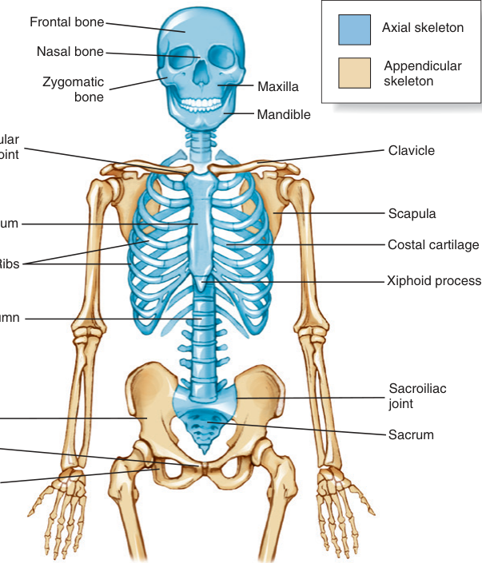
Sọ bao bọc và bảo vệ não cùng nhiều cơ quan cảm giác thiết yếu (mắt, tai, mũi và hệ thống tiền đình). Trong số nhiều xương riêng lẻ của sọ, chỉ có xương thái dương và xương chẩm liên quan đến nội dung được trình bày trong Chương 9 và 10.
Xương thái dương và xương chẩm (Temporal and Occipital Bones). Mỗi trong hai xương thái dương tạo thành một phần bề mặt ngoài bên của hộp sọ, ngay bao quanh và bao gồm lỗ tai ngoài (Hình 9.2). Mỏm chũm (mastoid process), một cấu trúc dễ sờ thấy, nằm ngay phía sau tai. Mỏm nổi bật này là chỗ bám của nhiều cơ, chẳng hạn như cơ ức–đòn–chũm.
Xương chẩm tạo thành phần lớn đáy sau của hộp sọ (Hình 9.3). U chẩm ngoài (external occipital protuberance) là một điểm giữa đường dễ sờ thấy, làm chỗ bám cho dây chằng gáy và phần trong của cơ thang trên. Đường gáy trên (superior nuchal line) kéo dài ra bên từ u chẩm ngoài đến đáy của mỏm chũm của xương thái dương. Đường mỏng nhưng rõ ràng này đánh dấu chỗ bám của một số cơ duỗi của đầu và cổ, chẳng hạn như cơ thang và cơ lách dưới đầu. Đường gáy dưới (inferior nuchal line) đánh dấu bờ trước của chỗ bám của cơ bán gai đầu.
Lỗ lớn (foramen magnum) là một lỗ tròn lớn nằm ở đáy xương chẩm, làm đường đi của tủy sống. Một cặp lồi cầu chẩm nổi bật nhô ra từ các bờ trước–bên của lỗ lớn, tạo thành thành phần lồi của khớp chẩm–đốt đội. Phần nền (basilar part) của xương chẩm nằm ngay trước bờ trước của lỗ lớn.
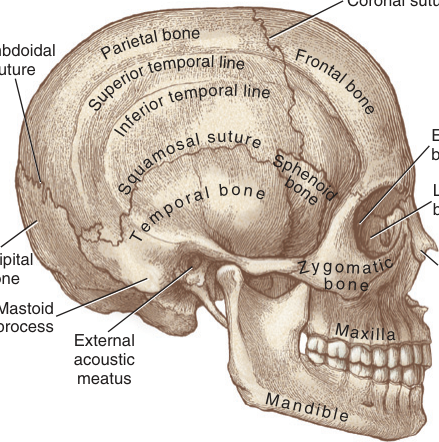
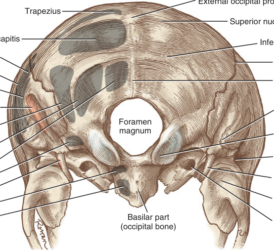
Đặc điểm xương liên quan (Relevant Osteologic Features)
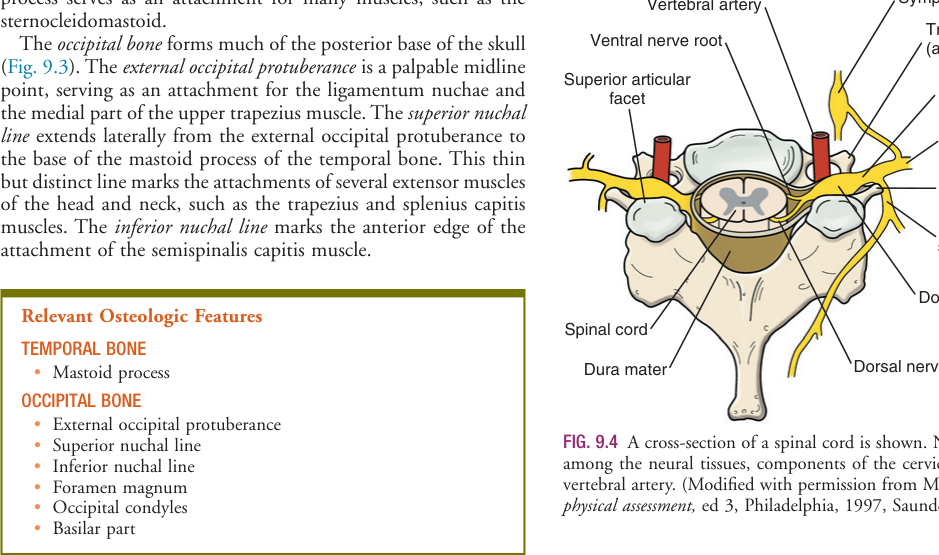
| Thuật ngữ (Term) | Đồng nghĩa (Synonym) | Định nghĩa (Definition) |
|---|---|---|
| Sau (Posterior) | Lưng (Dorsal) | Mặt sau của cơ thể |
| Trước (Anterior) | Bụng (Ventral) | Mặt trước của cơ thể |
| Giữa (Medial) | Không có | Đường giữa của cơ thể |
| Bên (Lateral) | Không có | Xa đường giữa của cơ thể |
| Trên (Superior) | Đầu (Cranial) | Đầu hoặc đỉnh của cơ thể |
| Dưới (Inferior) | Đuôi (Caudal — "đuôi") | Đuôi, hoặc đáy của cơ thể |
*Các định nghĩa giả định người đó đang ở tư thế giải phẫu.
Ngoài việc cung cấp sự ổn định thẳng đứng khắp thân và cổ, cột sống còn bảo vệ tủy sống, các rễ thần kinh bụng và lưng, cũng như các rễ thần kinh tủy đang đi ra (Hình 9.4). Mối quan hệ giữa tủy sống và các rễ thần kinh đi ra dọc toàn bộ cột sống được minh họa sơ đồ trong Hình III.1 ở Phụ lục III, Phần A.
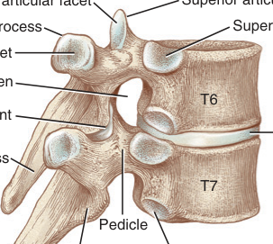
Đốt sống ngực giữa thể hiện nhiều đặc điểm giải phẫu và chức năng thiết yếu của bất kỳ đốt sống nào. Như một định hướng chung, một đốt sống có thể được chia thành ba phần. Ở phía trước là thân đốt sống lớn — thành phần chịu tải trọng chính của đốt sống. Ở phía sau là các mỏm ngang và mỏm gai, các bản cung và các mỏm khớp, được gọi chung là các thành phần sau. Các cuống đốt sống, phần thứ ba, đóng vai trò như những nhịp cầu nối thân đốt sống với các thành phần sau. Dày và chắc, các cuống đốt sống truyền các lực cơ tác động lên các thành phần sau về phía trước để phân tán khắp thân đốt sống và các đĩa đệm liên đốt sống. Bảng 9.2 cung cấp chi tiết hơn về cấu trúc và chức năng của các thành phần trong một đốt sống ngực giữa điển hình.
| Phần (Part) | Mô tả (Description) | Chức năng chính (Primary Function) |
|---|---|---|
| Thân (Body) | Khối xương xốp lớn hình trụ được lót bằng một lớp vỏ xương mỏng. Lõi xốp nhẹ nhưng vẫn có khả năng chịu nén rất tốt | Cấu trúc chịu tải trọng chính của mỗi đốt sống |
| Đĩa đệm liên đốt sống (Intervertebral disc) | Vòng sụn sợi chuyên hóa dày nằm giữa các thân đốt sống bên dưới C2 | Bộ giảm chấn và cái đệm cách ly khắp cột sống |
| Khớp liên thân (Interbody joint) | Khớp sụn được tạo thành giữa các mặt trên và dưới của đĩa đệm liên đốt sống và các thân đốt sống kề cận | Mối nối chính giữa các đốt sống |
| Cuống đốt sống (Pedicle) | Phiến xương ngắn và dày hướng ra sau từ phần giữa đến phần trên của thân đốt sống | Nối thân đốt sống với các thành phần sau của đốt sống |
| Bản cung (Lamina) | Bản xương thẳng đứng mỏng nối gốc của mỏm gai với mỗi mỏm ngang (thuật ngữ "các bản cung" chỉ cả bản cung phải và bản cung trái) | Bảo vệ mặt sau của tủy sống |
| Ống đốt sống (Vertebral canal) | Ống trung tâm nằm ngay phía sau thân đốt sống; ống này được bao quanh bởi các cuống và các bản cung | Chứa và bảo vệ tủy sống |
| Lỗ liên đốt sống (Intervertebral foramen) | Lỗ ở bên giữa các đốt sống kề cận | Đường đi của các rễ thần kinh tủy đi ra khỏi ống đốt sống |
| Mỏm ngang (Transverse process) | Phiến xương nằm ngang từ điểm nối giữa bản cung và cuống đốt sống | Chỗ bám của cơ, dây chằng và xương sườn |
| Các mặt sườn (trên thân đốt sống) (Costal facets on body) | Các vết lõm tròn hình thành ở mặt bên của thân đốt sống ngực; hầu hết thân đốt sống ngực có các mặt bán trên và dưới (gọi là bán mặt sườn) | Chỗ bám của đầu xương sườn (các khớp sườn–thân đốt) |
| Các mặt sườn (trên mỏm ngang) (Costal facets on transverse process) | Các mặt bầu dục nằm ở đầu trước của hầu hết các mỏm ngang ngực | Chỗ bám của củ khớp của xương sườn (các khớp sườn–mỏm ngang) |
| Mỏm gai (Spinous process) | Phiến xương nhô ra ở đường giữa mặt sau từ các bản cung | Chỗ bám ở đường giữa của cơ và dây chằng |
| Các mỏm khớp trên và dưới, gồm các mặt khớp và các khớp mỏm khớp (Superior and inferior articular processes, including articular facets and apophyseal joints) | Các mỏm khớp thành cặp phát ra từ điểm nối giữa bản cung và cuống đốt sống; mỗi mỏm có các mặt khớp lót sụn nhẵn; nhìn chung, các mặt khớp trên hướng ra sau và các mặt khớp dưới hướng ra trước | Các mặt khớp trên và dưới tạo thành các khớp mỏm khớp thành cặp. Các khớp hoạt dịch này dẫn hướng và điều chỉnh độ lớn của chuyển động liên đốt sống |
Mười hai đôi xương sườn bao quanh lồng ngực, tạo thành một lồng bảo vệ cho các cơ quan tim–phổi. Đầu sau của một xương sườn điển hình có một đầu xương (head), một cổ xương (neck) và một củ khớp (articular tubercle) (Hình 9.6). Đầu xương và củ khớp khớp với một đốt sống ngực, tạo thành hai khớp hoạt dịch sườn–đốt sống: khớp sườn–thân đốt và khớp sườn–mỏm ngang, tương ứng (xem Hình 9.5B). Các khớp này neo đầu sau của xương sườn vào đốt sống tương ứng của nó. Một khớp sườn–thân đốt điển hình nối đầu xương sườn với một cặp bán mặt sườn trải dài qua hai đốt sống kề cận và đĩa đệm liên đốt sống nằm giữa. Một khớp sườn–mỏm ngang nối củ khớp của xương sườn với một mặt sườn trên mỏm ngang của đốt sống tương ứng.
Đầu trước của xương sườn gồm sụn trong dẹt. Các xương sườn từ 1 đến 10 gắn trực tiếp hoặc gián tiếp vào xương ức, từ đó hoàn thiện lồng sườn ngực ở phía trước. Sụn của các xương sườn từ 1 đến 7 gắn trực tiếp vào bờ bên của xương ức qua bảy khớp ức–sườn (Hình 9.7). Sụn của các xương sườn từ 8 đến 10 gắn vào xương ức bằng cách hợp nhất với sụn của xương sườn ngay phía trên. Các xương sườn 11 và 12 được gọi là "xương sườn trôi nổi tự do" vì chúng không gắn vào xương ức ở phía trước.
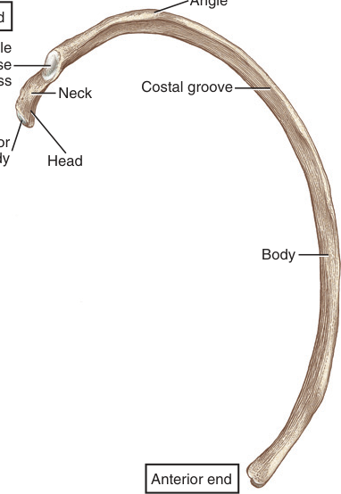
Xương ức hơi lồi và thô ở phía trước, hơi lõm và nhẵn ở phía sau. Xương có ba phần: cán ức (manubrium — tiếng Latinh nghĩa là "cái cán"), thân xương ức (body), và mỏm kiếm (xiphoid process — theo tiếng Hy Lạp nghĩa là "thanh kiếm") (xem Hình 9.7). Trong quá trình phát triển, cán ức hợp nhất với thân xương ức tại khớp cán–ức (manubriosternal joint), một khớp sụn (khớp dính khớp – synarthrodial) thường hóa xương về sau trong cuộc đời. Ngay bên cạnh khuyết cảnh (jugular notch) của cán ức là các mặt đòn (clavicular facets) của các khớp ức–đòn. Ngay phía dưới khớp ức–đòn là một mặt sườn tiếp nhận đầu của xương sườn thứ nhất tại khớp ức–sườn thứ nhất.
Bờ bên của thân xương ức được đánh dấu bằng một chuỗi các mặt sườn tiếp nhận sụn của các xương sườn từ 2 đến 7. Khớp học của các khớp ức–sườn được thảo luận chi tiết hơn trong Chương 11, trong bối cảnh của sự thông khí. Mỏm kiếm gắn vào đầu dưới của thân xương ức qua khớp kiếm–ức (xiphisternal joint). Giống như khớp cán–ức, khớp kiếm–ức được nối chủ yếu bằng sụn sợi. Khớp kiếm–ức thường hóa xương vào khoảng 40 tuổi.
Đặc điểm giải phẫu xương của xương ức (Osteologic Features of the Sternum)
Các khớp nội ức (Intrasternal Joints)
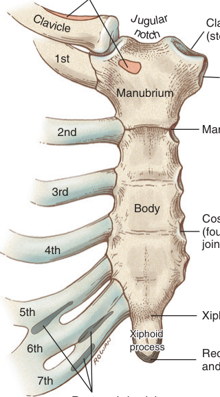
Cột sống (vertebral hay spinal column) gồm toàn bộ các đốt sống. Từ "thân" (trunk) là thuật ngữ chung chỉ phần thân của một người, bao gồm xương ức, các xương sườn và khung chậu, nhưng không gồm đầu, cổ và các chi.
Cột sống thường gồm 33 đoạn xương đốt sống, chia thành năm vùng. Bình thường có 7 đoạn cổ, 12 đoạn ngực, 5 đoạn thắt lưng, 5 đoạn cùng và 4 đoạn cụt. Ở người trưởng thành, các đốt sống cùng và cụt thường đã dính lại, tạo thành xương cùng và xương cụt riêng biệt. Mỗi đốt sống được viết tắt bằng chữ cái kèm số, ví dụ C2 cho đốt sống cổ thứ hai, T6 cho đốt sống ngực thứ sáu và L1 cho đốt sống thắt lưng thứ nhất. Mỗi vùng của cột sống (chẳng hạn vùng cổ và vùng thắt lưng) có hình thái riêng phản ánh chức năng và khả năng vận động đặc thù của vùng đó. Các đốt sống nằm ở chỗ nối cổ–ngực, ngực–thắt lưng và thắt lưng–cùng thường mang những đặc điểm chung phản ánh sự chuyển tiếp giữa các vùng chính của cột sống. Chẳng hạn, không hiếm gặp trường hợp các mỏm ngang của C7 có các mặt khớp kiểu ngực để tiếp nhận một xương sườn, hoặc L5 bị "cùng hóa" (sacralized), tức là dính vào nền xương cùng.
Cột sống người gồm một chuỗi các đường cong ngược chiều nhau trong mặt phẳng đứng dọc (Hình 9.8A). Những đường cong tự nhiên này góp phần tạo nên tư thế cột sống "lý tưởng" khi đứng, đồng thời xác định vị thế giải phẫu (hay vị thế trung tính) của từng vùng cột sống. Ở vị thế giải phẫu, vùng cổ và vùng thắt lưng tự nhiên lồi ra trước và lõm ra sau — sự sắp xếp gọi là đường cong ưỡn (lordosis), nghĩa là "uốn ra sau". Mức độ ưỡn ở vùng cổ thường nhỏ hơn ở vùng thắt lưng. Ngược lại, vùng ngực và vùng cùng–cụt có đường cong gù (kyphosis) tự nhiên. Gù mô tả một đường cong lõm ra trước và lồi ra sau. Độ lõm phía trước tạo khoảng trống cho các cơ quan trong ổ ngực và ổ chậu.
Các đường cong tự nhiên ở phần lớn cột sống không cố định mà mang tính động, thay đổi hình dạng trong lúc vận động và điều chỉnh tư thế. Duỗi cột sống thêm làm tăng đường ưỡn cổ và thắt lưng nhưng làm giảm đường gù ngực (xem Hình 9.8B). Ngược lại, gập cột sống làm giảm, hay làm phẳng, đường ưỡn cổ và thắt lưng nhưng làm tăng đường gù ngực (xem Hình 9.8C). Trái với các vùng trên, đường cong vùng cùng–cụt là cố định, lõm ra trước và lồi ra sau.
Cột sống của thai nhi hầu như gù trên toàn bộ chiều dài; đường ưỡn ở cột sống cổ và thắt lưng chỉ hình thành sau khi sinh. Tuy vậy, đã có bằng chứng về một đường ưỡn nhẹ hình thành ở vùng thắt lưng trong thời kỳ bào thai, quan sát được qua hình ảnh cộng hưởng từ (MR). Dù sao, đường ưỡn ở cả cột sống cổ lẫn thắt lưng cuối cùng đều phát triển song song với sự trưởng thành vận động và việc chuyển sang tư thế thẳng đứng hơn. Ở cột sống cổ, các cơ duỗi kéo vào đầu và cổ khi trẻ nằm sấp bắt đầu quan sát môi trường xung quanh. Xa hơn về phía đuôi, các cơ gấp hông đang phát triển kéo xuống phía dưới vào mặt trước khung chậu khi trẻ bắt đầu đi. Lực kéo của cơ làm xoay (hay nghiêng) khung chậu ra trước so với khớp hông, từ đó đặt cột sống thắt lưng vào một thế ưỡn tương đối. Một khi trẻ đứng được, đường ưỡn tự nhiên của cột sống thắt lưng hướng đường trọng lực của cơ thể đi qua hoặc gần đốt sống thắt lưng thứ nhất (L1) và nền xương cùng. Đường ưỡn tự nhiên này là một thích ứng có lợi về mặt cơ sinh học ở người, giúp giảm thiểu nỗ lực cơ tại chỗ cần thiết để giữ tư thế thẳng đứng.
Các đường cong mặt phẳng đứng dọc còn mang lại sức bền và độ đàn hồi cho bộ xương trục. Một cột sống có các đường cong ngược chiều nhau hoạt động như một vòm vừa dẻo vừa vững. Lực nén gần như thẳng đứng giữa các đốt sống được chia sẻ một phần nhờ sức căng của các mô liên kết và cơ bị kéo giãn nằm dọc phía lồi của mỗi đường cong. Cũng như các xương dài như xương đùi, sức bền và độ ổn định của cột sống có được nhờ khả năng "nhường" đi một chút dưới tải trọng hơn là nhờ khả năng chịu lực nén lớn một cách tĩnh tại.
Một hệ quả có thể bất lợi của các đường cong tự nhiên là sự hiện diện của lực cắt tại những vùng chuyển tiếp giữa các đường cong. Chẳng hạn, lực cắt có thể làm lỏng sớm các khâu cố định cột sống bằng phẫu thuật, nhất là những khâu thực hiện ở vùng cổ–ngực và ngực–thắt lưng. Ngoài ra, trong một số tình trạng bệnh lý ở vùng thắt lưng–cùng, các đốt sống thắt lưng dưới có thể trượt quá mức ra trước so với xương cùng — một tình trạng có thể nghiêm trọng, gọi là trượt đốt sống ra trước (anterior spondylolisthesis).
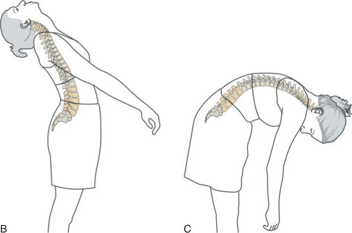
Dù rất hay thay đổi, đường trọng lực tác dụng lên một người đứng với tư thế lý tưởng đi gần mỏm chũm của xương thái dương, phía trước đốt sống cùng thứ hai, ngay phía sau các khớp hông, và phía trước khớp gối và khớp cổ chân (Hình 9.9). Trong cột sống, đường trọng lực thường rơi ngay về phía lõm của đỉnh đường cong của mỗi vùng. Nhờ vậy tư thế lý tưởng cho phép đường trọng lực tạo ra những mô-men xoắn mặt phẳng đứng dọc ở mức vừa phải, giúp duy trì hình dạng tối ưu của từng đường cong. Hơn nữa, tư thế lý tưởng cho phép trọng lực tạo ra các mô-men xoắn luân phiên theo hướng gập và hướng duỗi suốt các vùng chính của cột sống. Những mô-men xoắn luân phiên và triệt tiêu một phần này làm giảm tổng mô-men xoắn ngoại lực thuần tác dụng lên toàn bộ cột sống. Tình huống cơ học này giảm thiểu các mô-men xoắn trung hòa mà cơ và dây chằng phải tạo ra.
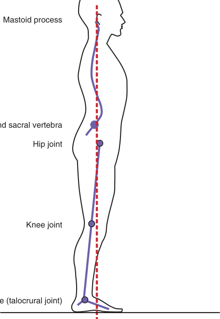
Mô hình trong Hình 9.9 mang tính lý tưởng hơn là thực tế, vì tư thế mỗi người vừa riêng biệt vừa thoáng qua. Các yếu tố làm thay đổi quan hệ không gian giữa đường trọng lực và các đường cong cột sống gồm sự lắng đọng mỡ, hình dạng cụ thể của các đường cong từng vùng, cách đặt đầu và các chi, sức mạnh và sức bền của cơ, độ giãn của mô liên kết, và vị trí lẫn độ lớn của tải trọng mà cơ thể phải nâng đỡ. Hướng thực sự của đường trọng lực so với bộ xương trục mang những hệ quả cơ sinh học rõ rệt lên cột sống. Ví dụ, lực hấp dẫn đi phía sau vùng thắt lưng sẽ tạo ra một mô-men xoắn duỗi không ngừng lên vùng thắt lưng dưới, tạo điều kiện cho đường ưỡn tự nhiên. Ngược lại, trọng lực đi phía trước vùng thắt lưng tạo ra một mô-men xoắn gập không ngừng. Trong cả hai trường hợp, mô-men xoắn ngoại lực do sức hút của trọng lực (cùng cánh tay đòn ngoại lực tương ứng) phải được trung hòa bằng các mô-men xoắn do cơ tạo ra một cách chủ động và do mô liên kết tạo ra một cách thụ động. Ở những tư thế cực đoan, các lực này có thể rất lớn; nếu kéo dài, chúng có thể dẫn đến những bù trừ tư thế không mong muốn cũng như những thay đổi cấu trúc, thường đi kèm với việc sử dụng cơ quá mức và đau.
Những yếu tố thuần túy giải phẫu ảnh hưởng đến hình dạng riêng của các đường cong suốt cột sống, gồm đĩa đệm liên đốt sống hay thân đốt sống hình nêm, hướng sắp xếp trong không gian của các khớp mỏm khớp (facet), thành phần mô học của dây chằng, và mức độ cứng tự nhiên của cơ. Chẳng hạn, các đĩa đệm liên đốt sống ở vùng cổ và vùng thắt lưng dưới hơi dày hơn ở phía trước, nhờ đó thiên về độ lồi ra trước ở các vùng này.
Sự sắp xếp bình thường của cột sống trên mặt phẳng đứng dọc có thể bị thay đổi bởi nhiều yếu tố: bệnh tật, như viêm cột sống dính khớp (ankylosing spondylosis), bại liệt hay loạn dưỡng cơ; chấn thương, như gãy xương nặng hay tổn thương tủy sống; hoặc những thay đổi liên quan đến tuổi cao hay giảm hoạt động, như loãng xương hay yếu cơ. Thường thì những dạng tư thế bất thường hay lệch lạc tương đối nhẹ vẫn xảy ra ở những người khỏe mạnh. Những sai lệch này ban đầu có thể rất kín đáo, khởi đầu như những đáp ứng cơ học trước sai lệch tư thế ở vùng khác của cơ thể. Như Hình 9.10 minh họa, đường ưỡn thắt lưng quá mức có thể phát triển để bù trừ cho đường gù ngực quá mức và ngược lại. Tư thế "lưng võng" (swayback) trong Hình 9.10C chẳng hạn mô tả sự kết hợp giữa đường ưỡn thắt lưng và đường gù ngực đều phóng đại. Cũng thường gặp những tư thế khó giải thích khác như dáng "lưng tròn" ở Hình 9.10E: tư thế này cho thấy đường gù ngực quá mức kết hợp với đường ưỡn thắt lưng giảm. Bất kể nguyên nhân hay vị trí của sai lệch tư thế, các đường cong bất thường đi kèm đều làm thay đổi quan hệ không gian giữa đường trọng lực và từng vùng cột sống. Khi nặng, các đường cong bất thường làm tăng áp lực lên cơ, dây chằng, xương, đĩa đệm liên đốt sống, các khớp mỏm khớp và các rễ thần kinh tủy đang đi ra. Các đường cong bất thường cũng làm thay đổi thể tích các ổ cơ thể. Đường gù ngực phóng đại, chẳng hạn, có thể làm giảm đáng kể khoảng trống cho phổi giãn nở khi hít thở sâu.
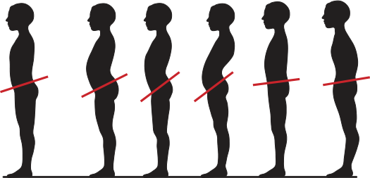
Cột sống được nâng đỡ bởi một hệ thống dây chằng đồ sộ. Các dây chằng cột sống giới hạn vận động, giúp duy trì những đường cong tự nhiên, và — bằng cách ổn định cột sống — bảo vệ tủy sống cùng các rễ thần kinh tủy vốn rất mỏng manh. Các dây chằng này, được mô tả trong những đoạn tiếp theo và minh họa ở Hình 9.11, đều có độ bền và chức năng hơi khác nhau tùy vị trí của chúng trong cột sống. Cấu trúc cơ bản và chức năng tổng quát của từng dây chằng được tóm tắt trong Bảng 9.3.
| Tên (Name) | Chỗ bám (Attachments) | Chức năng (Function) | Ghi chú (Comment) |
|---|---|---|---|
| Dây chằng vàng (Ligamentum flavum) | Giữa mặt trước của một bản cung và mặt sau của bản cung bên dưới | Giới hạn và "làm mềm" biên cuối của động tác gập liên đốt | Chứa tỉ lệ elastin cao; nằm ngay phía sau tủy sống; dày nhất ở vùng thắt lưng |
| Dây chằng trên gai và dây chằng liên gai (Supraspinous and interspinous ligaments) | Giữa các mỏm gai kề nhau, từ C7 đến xương cùng | Giới hạn gập | Dây chằng gáy (ligamentum nuchae) là phần kéo dài lên phía đầu của các dây chằng trên gai ở vùng cổ, tạo một cấu trúc đường giữa cho cơ bám vào và nâng đỡ đầu |
| Dây chằng liên mỏm ngang (Intertransverse ligaments) | Giữa các mỏm ngang kề nhau | Giới hạn nghiêng bên sang phía đối bên và gập về phía trước | Có rất ít sợi ở vùng cổ; ở vùng ngực, các dây chằng đan xen với cơ tại chỗ; ở vùng thắt lưng, các dây chằng mỏng và dạng màng |
| Dây chằng dọc trước (Anterior longitudinal ligament) | Giữa phần nền của xương chẩm và toàn bộ chiều dài mặt trước của mọi thân đốt sống, kể cả xương cùng | Giới hạn duỗi hay đường ưỡn quá mức ở vùng cổ và thắt lưng; gia cố mặt trước của các đĩa đệm liên đốt sống | Phát triển nhất ở cột sống thắt lưng; có độ bền kéo gấp khoảng hai lần dây chằng dọc sau |
| Dây chằng dọc sau (Posterior longitudinal ligament) | Suốt chiều dài mặt sau của mọi thân đốt sống, từ đốt trục (C2) đến xương cùng | Giới hạn gập; gia cố mặt sau của các đĩa đệm liên đốt sống | Nằm trong ống đốt sống, ngay phía trước tủy sống |
| Bao khớp của các khớp mỏm khớp (Capsules of the apophyseal joints) | Bờ của mỗi khớp mỏm khớp | Củng cố các khớp mỏm khớp | Lỏng ở vị thế gần trung tính (giải phẫu) nhưng càng căng dần ở các cực độ của mọi vị thế khác |
Dây chằng vàng (ligamentum flavum) nguyên ủy ở mặt trước của một bản cung và bám vào mặt sau của bản cung bên dưới. Gồm một chuỗi các dây chằng thành cặp, các dây chằng vàng (ligamenta flava, số nhiều) chạy suốt chiều dài cột sống, nằm ngay phía sau tủy sống. Các dây chằng vàng cùng các bản cung kề cận tạo thành thành sau của ống đốt sống.
Ligamentum flavum theo nghĩa đen là "dây chằng vàng", phản ánh hàm lượng cao của mô liên kết đàn hồi màu vàng nhạt. Về mô học, dây chằng vàng gồm khoảng 80% elastin và 20% collagen. Tính đàn hồi rất cao của mô này rất phù hợp để tạo ra một sức cản tương đối không đổi, dù khiêm nhường, suốt một biên độ gập rộng. Sức cản ấy có thể hấp thụ hay "làm mềm" một phần lực nén liên đốt sinh ra ở gần biên cuối của động tác gập cột sống. Các phép đo cho thấy giữa vị thế giải phẫu (trung tính) và gập hoàn toàn, dây chằng vàng chịu mức tăng biến dạng (kéo dài) xấp xỉ 35% (Hình 9.12). Động tác gập mạnh và dữ dội vượt quá chiều dài này cuối cùng có thể làm dây chằng đứt, có khả năng tạo ra những lực nén gây hư hại lên mặt trước của đĩa đệm liên đốt sống. Các dây chằng vàng dày nhất ở vùng thắt lưng, nơi biên độ gập liên đốt lớn nhất trong mọi vùng của cột sống.
Tính đàn hồi rất cao của dây chằng vàng đáng chú ý ở cả góc độ chức năng lẫn cấu trúc. Ngoài việc tạo sức cản tăng dần suốt toàn bộ biên độ gập, độ đàn hồi vốn có của nó còn tạo ra một lực nén nhỏ nhưng không đổi giữa các đốt sống, ngay cả ở vị thế giải phẫu. Độ đàn hồi này có thể ngăn dây chằng bị gập vào trong khi duỗi hoàn toàn. Nếu bị gập mạnh hay lộn vào trong, dây chằng có thể kẹp và làm tổn thương tủy sống kề cận.
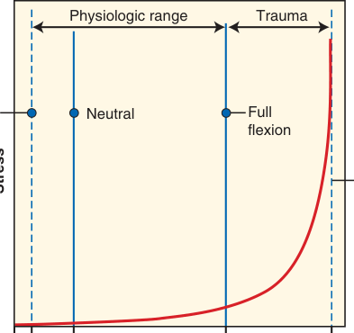
Các dây chằng liên gai (interspinous ligaments) lấp đầy phần lớn khoảng trống giữa các mỏm gai kề nhau. Các sợi nằm sâu hơn, giàu elastin hơn, hòa vào các dây chằng vàng; các sợi nông hơn chứa nhiều collagen hơn và hòa vào các dây chằng trên gai. Hướng và cách sắp xếp sợi của dây chằng liên gai thay đổi theo từng vùng. Chẳng hạn, dây chằng liên gai ở vùng thắt lưng xòe theo hướng chéo ra sau–lên phía đầu (xem Hình 9.11A). Các sợi ở vùng này chỉ được kéo căng ở những cực độ lớn hơn của động tác gập.
Đúng như tên gọi, các dây chằng trên gai (supraspinous ligaments) bám giữa các đỉnh mỏm gai. Cũng như dây chằng liên gai, các dây chằng này cản sự tách rời của các mỏm gai kề nhau, nhờ đó chống lại động tác gập. Khả năng chống gập lớn nhất ở những vùng cột sống nơi các cấu trúc này chắc khỏe hơn và chứa tỉ lệ collagen cao hơn. Suốt vùng thắt lưng chẳng hạn, các dây chằng này không phát triển nhiều; chúng hoặc thưa thớt (nhất là giữa L4 và L5), hoặc được thay một phần bằng các dải mạc thắt lưng–ngực (thoracolumbar fascia) hay những sợi cơ–gân nhỏ. Vì thế không có gì ngạc nhiên khi các dây chằng trên gai ở vùng thắt lưng thường là những cấu trúc đầu tiên bị đứt trong động tác gập cực độ.
Ở vùng cổ, các dây chằng trên gai phát triển rất tốt và kéo dài lên phía đầu thành dây chằng gáy (ligamentum nuchae). Màng dai này gồm một dải mô sợi–đàn hồi có hai lớp, bám giữa các mỏm gai cổ và u chẩm ngoài. Sức căng thụ động trong dây chằng gáy bị kéo giãn tạo thêm một sự nâng đỡ duỗi nhỏ nhưng hữu ích cho đầu và cổ. Dây chằng gáy còn cung cấp một chỗ bám ở đường giữa cho các cơ như cơ thang, cơ lách đầu và cơ lách cổ. Một dây chằng gáy nổi bật là một phần lý do của khó khăn thường gặp khi sờ mỏm gai ở vùng cổ giữa đến cổ trên (Hình 9.13).
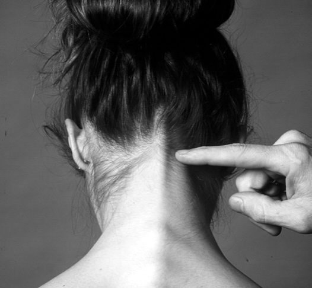
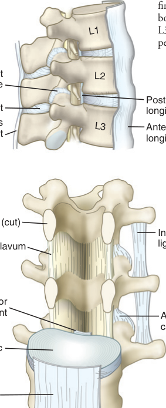
Các dây chằng liên mỏm ngang (intertransverse ligaments) là những cấu trúc mỏng, dạng màng, khó xác định, chạy giữa các mỏm ngang kề nhau. Các mô này căng ra khi nghiêng bên sang phía đối bên và, ở mức độ thấp hơn, khi gập về phía trước.
Dây chằng dọc trước (anterior longitudinal ligament) là một cấu trúc dài, chắc, hình dải, bám vào phần nền của xương chẩm và toàn bộ chiều dài mặt trước của mọi thân đốt sống, kể cả xương cùng. Các sợi sâu hòa vào và gia cố mặt trước của các đĩa đệm liên đốt sống. Dây chằng dọc trước căng ra khi duỗi và chùng lại khi gập. Ở vùng cổ và thắt lưng, sức căng trong dây chằng dọc trước giúp giới hạn mức độ của đường ưỡn tự nhiên. Dây chằng này hẹp ở đầu phía đầu và rộng dần khi đi xuống phía đuôi.
Dây chằng dọc sau (posterior longitudinal ligament) là một dải mô liên kết liên tục bám suốt chiều dài mặt sau của các thân đốt sống, từ đốt trục (C2) đến xương cùng. Dây chằng dọc sau nằm trong ống đốt sống, ngay phía trước tủy sống (xem Hình 9.11A). (Cần lưu ý rằng dây chằng dọc sau và dây chằng dọc trước được đặt tên theo quan hệ của chúng với thân đốt sống, không phải với tủy sống.) Suốt chiều dài của nó, các sợi sâu của dây chằng dọc sau hòa vào và gia cố mặt sau của các đĩa đệm liên đốt sống. Ở đầu phía đầu, dây chằng dọc sau là một cấu trúc rộng, hẹp dần khi đi xuống vùng thắt lưng. Phần thắt lưng mảnh này làm hạn chế khả năng của dây chằng trong việc ngăn một đĩa đệm phình (hay thoát vị) ra sau. Như hầu hết các dây chằng của cột sống, dây chằng dọc sau càng căng dần khi gập.
Các dây chằng bao khớp của các khớp mỏm khớp bám dọc toàn bộ bờ của các mặt khớp (xem Hình 9.11A). Như sẽ được mô tả trong mục khớp học sắp tới, các khớp mỏm khớp giúp nối kết và ổn định các mối nối liên đốt. Quan trọng không kém là vai trò riêng biệt của các khớp mỏm khớp trong việc dẫn hướng chiều chuyển động liên đốt cụ thể. Các dây chằng bao khớp quanh các khớp mỏm khớp chứa một hỗn hợp sợi elastin và collagen, đủ chắc để duy trì sự toàn vẹn vật lý của khớp, nhưng cũng đủ dẻo để cho phép những chuyển động tịnh tiến liên đốt vốn có trong động học cột sống. Bao khớp mỏm khớp được gia cố bởi các cơ kề cận (cơ đa split — multifidus) và các dây chằng vàng, rõ nhất là ở vùng thắt lưng.
Các dây chằng bao khớp tương đối lỏng (lax) ở vị thế giải phẫu (trung tính), nhưng ít nhất một số sợi càng căng dần khi khớp tiến tới cực độ của mọi vận động. Sức căng thụ động tự nhiên lớn nhất ở những vận động tạo ra chuyển động tương đối lớn nhất giữa các mặt khớp, chẳng hạn gập hoàn toàn ở vùng cổ. Động học này rất đặc thù cho từng vùng của cột sống và sẽ được nhắc lại trong các mục tiếp theo của chương này.
Khép lại mục này, hiểu được vị trí của một dây chằng cột sống so với trục quay trong một mối nối liên đốt cho ta cái nhìn sâu sắc về chức năng chính của nó. Như sẽ được mô tả thêm trong một mục sắp tới, trục quay của vận động liên đốt nằm gần hoặc xuyên qua vùng thân đốt sống. Chẳng hạn, khi xét vận động trên mặt phẳng đứng dọc, bất kỳ dây chằng nào nằm phía sau thân đốt sống đều bị kéo giãn (và vì thế bị kéo căng) trong lúc gập. Ngược lại, bất kỳ dây chằng nào nằm phía trước thân đốt sống đều bị kéo giãn trong lúc duỗi. Như có thể thấy khi xem lại Hình 9.11A, mọi dây chằng ngoại trừ dây chằng dọc trước đều trở nên căng khi gập.
Hiểu được cách vận động và tư thế kéo giãn các dây chằng cột sống là nền tảng để hiểu cơ chế gây chấn thương dây chằng, cũng như cách các dây chằng bảo vệ gián tiếp tủy sống và các rễ thần kinh. Đây là một vấn đề rất có ý nghĩa lâm sàng, vì ở một chiều dài hay một lực tới hạn nào đó, một dây chằng bị kéo giãn quá mức và suy yếu mạn tính sẽ hoặc duy trì trạng thái lỏng lẻo tương đối vĩnh viễn, hoặc đạt tới điểm đứt hoàn toàn. Một dây chằng bị đứt hay lỏng lẻo thường không còn khả năng ổn định thỏa đáng mối nối liên đốt tương ứng, và mất ổn định cột sống có thể xảy ra sau đó. Mất ổn định cột sống — một thuật ngữ được dùng rộng rãi trong y văn y khoa, nghiên cứu và phục hồi chức năng — đã được định nghĩa chính thức là sự mất độ cứng tự nhiên giữa các đốt sống, có thể dẫn đến vận động liên đốt bất thường và tăng lên. Để nghiên cứu thực nghiệm và định lượng sự mất ổn định cột sống, người ta dùng khái niệm vùng trung tính động học (kinematic neutral zone). Vùng trung tính, thường được xác định qua nghiên cứu trên tử thi hoặc động vật, là lượng (hay "vùng") vận động liên đốt xảy ra với sức cản thụ động nhỏ nhất từ các mô xung quanh. "Vùng có độ cứng tối thiểu" tự nhiên này tăng lên khi các mô liên kết xung quanh bị tổn thương hay suy yếu. Nếu rõ rệt hay mạn tính, mất ổn định cột sống ở người sống được cho là gây thêm tổn thương cho các dây chằng tại chỗ, cũng như cho các khớp mỏm khớp, đĩa đệm liên đốt sống, và — có lẽ quan trọng hơn — các thành phần thần kinh mỏng manh.
Mất ổn định cột sống có thể dẫn đến mất khả năng vận động không đau của thân, hay gián tiếp là của cả các chi. Nếu tình trạng nặng, điều trị mất ổn định cột sống có thể đòi hỏi can thiệp phẫu thuật, chẳng hạn một khâu cố định (surgical fusion). Như sẽ được mô tả trong Chương 10, tùy bản chất của sự mất ổn định, điều trị cũng có thể gồm các bài tập hay hoạt động nhằm cải thiện khả năng của hệ thần kinh–cơ trong việc tăng độ cứng tự nhiên tại một vùng cột sống nhất định, từ đó chủ động thu hẹp vùng trung tính giữa một mối nối liên đốt cho trước.
Câu nói "chức năng theo sau cấu trúc" rất đúng khi nghiên cứu cột sống. Dù mọi đốt sống đều có một chủ đề hình thái chung, mỗi đốt sống lại có hình dạng riêng phản ánh chức năng độc đáo của nó. Mục này, cùng với Bảng 9.4, nêu bật những đặc điểm giải phẫu xương cụ thể của từng vùng cột sống.
| Đốt sống / Vùng | Thân (Body) | Các mặt khớp trên (Superior Articular Facets) | Các mặt khớp dưới (Inferior Articular Facets) | Các mỏm gai (Spinous Processes) | Ống đốt sống (Vertebral Canal) | Các mỏm ngang (Transverse Processes) | Ghi chú (Comments) |
|---|---|---|---|---|---|---|---|
| Đốt đội, C1 (Atlas) | Không có | Lõm, mặt chủ yếu hướng lên trên | Phẳng đến hơi lõm, mặt chủ yếu hướng xuống dưới | Không có, thay bằng một củ sau nhỏ | Hình tam giác, lớn nhất vùng cổ | Lớn nhất vùng cổ | Hai khối bên lớn, nối với nhau bởi cung trước và cung sau |
| Đốt trục, C2 (Axis) | Cao, có mỏm nha (dens) nhô thẳng đứng | Phẳng đến hơi lồi, mặt chủ yếu hướng lên trên | Phẳng, mặt hướng ra trước và xuống dưới | Lớn nhất vùng cổ, chẻ đôi | Lớn và hình tam giác | Tạo thành củ trước và củ sau | Các mỏm khớp trên lớn, nâng đỡ đốt đội và hộp sọ |
| C3–C6 | Rộng hơn sâu; có các mỏm móc (uncinate processes) | Phẳng, mặt hướng ra sau và lên trên | Như trên | Chẻ đôi | Lớn và hình tam giác | Tận cùng bằng củ trước và củ sau | Được xem là các đốt sống cổ điển hình |
| C7 | Rộng hơn sâu | Như trên | Chuyển tiếp sang các đốt sống ngực điển hình | Lớn và nhô rõ, dễ sờ thấy | Hình tam giác | Dày và nhô rõ, có thể có một củ trước lớn tạo thành một "xương sườn phụ" | Thường được gọi là "đốt sống nhô" (vertebra prominens) vì mỏm gai lớn |
| T2–T9 | Rộng và sâu bằng nhau; có các bán mặt sườn cho đầu các xương sườn 2–9 bám vào | Phẳng, mặt chủ yếu hướng ra sau | Phẳng, mặt chủ yếu hướng ra trước | Dài và nhọn, chéo xuống dưới | Tròn, nhỏ hơn vùng cổ | Nhô gần như nằm ngang và hơi ra sau, có các mặt sườn cho củ khớp của xương sườn | Được xem là các đốt sống ngực điển hình |
| T1 và T10–T12 | T1 có một mặt sườn trọn vẹn cho xương sườn 1 và một bán mặt cho xương sườn 2; mỗi đốt T10–T12 có một mặt sườn trọn vẹn | Như trên | Như trên | Như trên | Như trên | T10–T12 có thể thiếu các mặt sườn | Được xem là các đốt sống ngực "không điển hình", chủ yếu vì cách xương sườn bám vào |
| L1–L5 | Rộng hơn sâu; L5 hơi hình nêm (tức là chiều cao phía trước lớn hơn phía sau) | Hơi lõm, mặt hướng vào trong đến sau–trong | L1–L4 hơi lồi, mặt hướng ra ngoài đến trước–ngoài; L5: phẳng, mặt hướng ra trước và hơi ra ngoài | Chắc và hình chữ nhật | Hình tam giác, chứa đuôi ngựa (cauda equina) | Mảnh, nhô sang bên | Các mỏm khớp trên có các thể núm vú (mammillary bodies) |
| Xương cùng (Sacrum) | Đã dính liền; thân của đốt sống cùng thứ nhất còn rõ nhất | Phẳng, mặt hướng ra sau và hơi vào trong | Không có | Không có, thay bằng nhiều củ gai | Như trên | Không có, thay bằng nhiều củ ngang | — |
| Xương cụt (Coccyx) | Dính liền của bốn đốt sống thoái triển | Thoái triển | Thoái triển | Thoái triển | Kết thúc tại đốt cụt thứ nhất | Thoái triển | — |
*Bản in để trống ô "Ghi chú" ở hai hàng Xương cùng và Xương cụt; dấu — chỉ đánh dấu chỗ trống đó, không phải nội dung được suy diễn. Một số ô bị lớp văn bản PDF tách thành nhiều dòng (ví dụ thân T2–T9, T1/T10–T12, L1–L5, Xương cùng); đã nối lại theo đúng cột của bảng in.
Các đốt sống cổ là nhỏ nhất và linh hoạt nhất trong mọi đốt sống có thể vận động. Mức độ linh hoạt cao này là thiết yếu cho biên độ vận động lớn mà đầu cần có. Có lẽ đặc điểm giải phẫu độc đáo nhất của các đốt sống cổ là sự hiện diện của các lỗ mỏm ngang (transverse foramina) nằm bên trong các mỏm ngang (Hình 9.14). Động mạch đốt sống quan trọng đi lên qua lỗ này, hướng tới lỗ lớn để vận chuyển máu đến não và tủy sống. Ở cổ, động mạch đốt sống nằm ngay phía trước các rễ thần kinh tủy đang đi ra (xem Hình 9.4).
Các đốt sống cổ thứ ba đến thứ sáu có những đặc điểm gần như đồng nhất, vì thế được xem là điển hình cho vùng này. Hai đốt sống cổ trên cùng — đốt đội (atlas, C1) và đốt trục (axis, C2) — cùng đốt sống cổ thứ bảy (C7) là không điển hình, vì những lý do được trình bày ở mục sau.
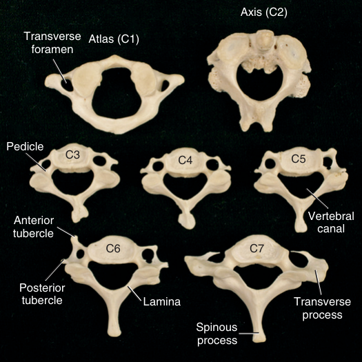
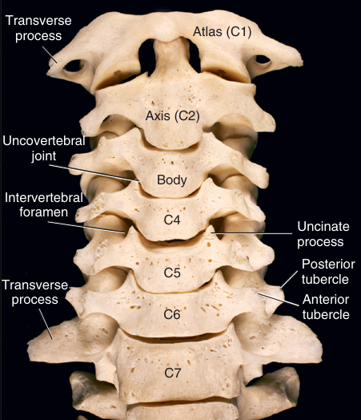
Các đốt sống cổ điển hình, C3 đến C6 (Typical Cervical Vertebrae)
C3 đến C6 có thân nhỏ hình chữ nhật, cấu tạo từ một vỏ xương đặc tương đối dày và chắc. Thân rộng theo chiều hai bên hơn là chiều trước–sau (Hình 9.14 và 9.15). Các mặt trên và dưới của thân không phẳng như ở hầu hết các đốt sống khác mà cong hay có khuyết. Các mặt trên lõm theo chiều hai bên, với những móc nhô lên ở bờ bên gọi là các mỏm móc (uncinate processes — "uncus" nghĩa là "cái móc"). Ngược lại, các mặt dưới lõm theo chiều trước–sau, với bờ trước và bờ sau kéo dài.
Khi các đốt sống khớp với nhau, những khớp nhỏ gọi là khớp không mỏm móc (uncovertebral joints) hình thành giữa mỏm móc và một hõm ở bờ ngoài–dưới của thân đốt sống kề cận phía trên. Như Hình 9.15 cho thấy, các khớp này tạo thành một phần thành trong của lỗ liên đốt sống. Các khớp này (thường được gọi là "khớp Luschka") thường hiện diện ở cả hai bên, từ mối nối C2–3 đến C6–7. Việc chúng có thực sự là khớp hoạt dịch hay không vẫn còn gây tranh cãi. Hơn nữa, vai trò cơ sinh học của các khớp không mỏm móc chưa rõ, dù nhiều khả năng chúng có cả chức năng cấu trúc lẫn chức năng động học. Sự hiện diện của các mỏm móc có thể giúp duy trì vị trí trung tâm trên mặt phẳng trán của đĩa đệm liên đốt sống kề cận, nhất là trong lúc xoay trục. Thêm vào đó, các khớp không mỏm móc có thể liên quan đến sự "ghép cặp" cơ học xảy ra tự nhiên giữa xoay trục và nghiêng bên suốt phần lớn vùng cổ (sẽ trình bày ở phần sau). Về lâm sàng, các khớp này trở nên quan trọng khi mỏm móc to bất thường hoặc bị lệch góc, hoặc khi các gai xương (osteophyte) hình thành quanh bờ của chúng, làm hẹp lỗ liên đốt sống kề cận. Trong cả hai trường hợp, mỏm móc hay gai xương đi kèm có thể chèn ép và kích thích các rễ thần kinh tủy cổ đang đi ra, từ đó gây triệu chứng thần kinh ở chi trên cùng bên.
TẬP TRUNG ĐẶC BIỆT 9.1 — Gai Xương Cổ Gây Triệu Chứng Thần Kinh Ở Chi Trên: Một Hệ Quả Có Thể Có Của Đĩa Đệm Liên Đốt Sống Bị Thoái Hóa (Cervical Osteophytes Causing Neurologic Symptoms in the Upper Extremity: One Possible Consequence of a Degenerated Intervertebral Disc)
Những đĩa đệm liên đốt sống được ngậm nước đầy đủ và bình thường tự nhiên đóng vai trò như những "cái đệm chèn" giữa các đốt sống riêng lẻ. Một lợi ích có thể có của khoảng cách này là giảm tải một phần cho các khớp không mỏm móc lân cận. Vì thiếu sụn khớp đáng kể, các khớp không mỏm móc tương đối nhỏ này không được thiết kế để chịu lực nén và lực cắt, nhất là khi các lực đó lặp đi lặp lại hay lớn. Hình 9.16 minh họa cách một đĩa đệm khỏe, ngậm nước và đầy đặn nằm giữa C3 và C4 tạo ra một khe hở bảo vệ tại khớp không mỏm móc C3–C4 kề cận. Hình 9.16 cũng cho thấy cách một đĩa đệm thoái hóa, mất nước và mỏng đi giữa C4 và C5 làm tăng lực tiếp xúc tại khớp không mỏm móc C4–C5. Theo thời gian, lực tăng lên có thể kích thích một gai xương ("cựa xương") phát triển. Gai xương được minh họa đang chèn ép rễ thần kinh tủy C5, điều có thể gây đau lan theo rễ (radicular), yếu cơ hay rối loạn cảm giác suốt vùng phân bố ngoại biên của dây thần kinh, điển hình là dọc mặt ngoài cánh tay. Theo một cách gián tiếp, những đĩa đệm liên đốt sống khỏe mạnh không chỉ bảo vệ xương quanh chúng mà còn bảo vệ cả các rễ thần kinh.
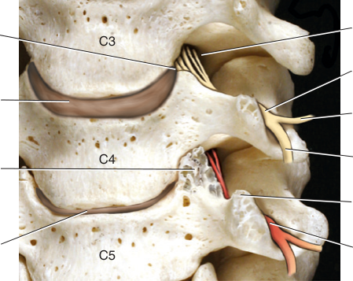
Các cuống đốt sống của C3 đến C6 ngắn và cong ra sau–ngoài (xem Hình 9.14). Những bản cung rất mỏng chạy từ mỗi cuống ra sau–vào trong (Hình 9.17). Ống đốt sống hình tam giác lớn ở vùng cổ để chứa được phần tủy sống dày lên liên quan đến sự hình thành đám rối thần kinh cổ và đám rối thần kinh cánh tay.
Trong vùng C3 đến C6, các mỏm khớp trên và dưới liên tiếp tạo thành một "cột khớp" liên tục, bị ngắt quãng bởi các khớp mỏm khớp (Hình 9.18). Các mặt khớp trong mỗi khớp mỏm khớp nhẵn và phẳng, với bề mặt khớp nằm ở vị trí trung gian giữa mặt phẳng trán và mặt phẳng ngang. Các mặt khớp trên hướng ra sau và lên trên, còn các mặt khớp dưới hướng ra trước và xuống dưới.
Các mỏm gai của C3 đến C6 ngắn, một số bị chẻ đôi (tức là tách hai) (xem Hình 9.14, C3). Các mỏm ngang là những phần kéo dài ngắn sang bên, tận cùng bằng củ trước và củ sau có hình dạng thay đổi. Các củ này chỉ có ở vùng cổ, làm chỗ bám cho những cơ như cơ chèn trước, cơ nâng vai và cơ lách cổ.
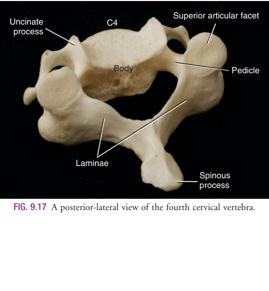
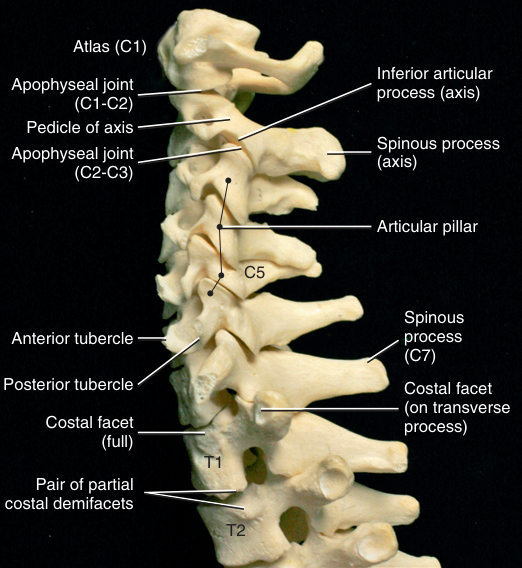
Các đốt sống cổ không điển hình, C1, C2 và C7 (Atypical Cervical Vertebrae)
Đốt đội (C1) (Atlas)
Đúng như tên gọi, chức năng chính của đốt đội là nâng đỡ đầu. Không có thân, cuống, bản cung hay mỏm gai, đốt đội về cơ bản là hai khối bên lớn nối với nhau bởi cung trước và cung sau (Hình 9.19A). Cung trước ngắn có một củ trước để dây chằng dọc trước bám vào. Cung sau lớn hơn nhiều, chiếm gần một nửa chu vi của toàn bộ vòng đốt đội. Một củ sau nhỏ đánh dấu đường giữa của cung sau. Các khối bên nâng đỡ các mỏm khớp trên nhô rõ, và chính các mỏm này nâng đỡ hộp sọ.
Các mặt khớp trên lớn và lõm của đốt đội nói chung hướng về phía đầu, ở vị trí tiếp nhận các lồi cầu chẩm lớn và lồi. Các mặt khớp dưới nói chung phẳng đến hơi lõm. Những mặt khớp này chủ yếu hướng xuống dưới, với bờ ngoài dốc xuống khoảng 20 độ so với mặt phẳng ngang (xem Hình 9.19B). Đốt đội có các mỏm ngang lớn, sờ được, thường là nhô rõ nhất trong các đốt sống cổ. Các mỏm ngang này làm chỗ bám cho một số cơ nhỏ nhưng quan trọng, kiểm soát những vận động tinh tế của hộp sọ.
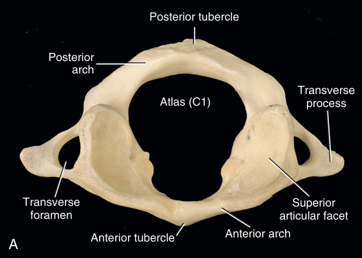
Đốt trục (C2) (Axis)
Đốt trục có thân lớn và cao, làm nền cho mỏm nha (dens, hay mỏm răng — odontoid process) nhô lên (Hình 9.20). Một phần của thân kéo dài này được hình thành từ phần còn lại của thân đốt đội và đĩa đệm nằm giữa. Mỏm nha tạo nên một trục quay thẳng đứng vững chắc cho đốt đội và đầu (Hình 9.21). Nhô sang hai bên từ thân là một cặp mỏm khớp trên (xem Hình 9.20A). Các mỏm lớn này có mặt khớp trên hơi lồi, định hướng khoảng 20 độ so với mặt phẳng ngang, khớp với độ dốc của các mặt khớp dưới của đốt đội. Từ các mỏm khớp trên nhô rõ của đốt trục phát ra một cặp cuống chắc và một cặp mỏm ngang rất ngắn (xem Hình 9.20B). Một cặp mỏm khớp dưới nhô xuống từ các cuống, với các mặt khớp dưới hướng ra trước và xuống dưới (xem Hình 9.18). Mỏm gai của đốt trục chẻ đôi và rất rộng. Mỏm gai sờ được này làm chỗ bám cho nhiều cơ, chẳng hạn cơ bán gai cổ.
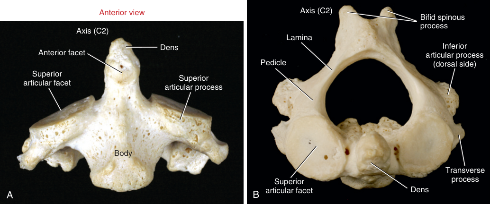
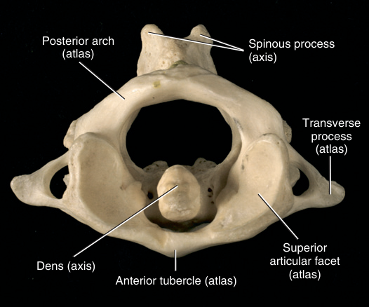
"Đốt sống nhô" (C7) ("Vertebra Prominens")
C7 là đốt sống cổ lớn nhất, mang nhiều đặc điểm của đốt sống ngực. C7 có thể có các mỏm ngang lớn, như minh họa ở Hình 9.15. Một củ trước phì đại trên mỏm ngang có thể mọc thêm một xương sườn cổ phụ, và xương sườn này có thể chèn ép đám rối thần kinh cánh tay. Đốt sống này còn có mỏm gai lớn, đặc trưng của các đốt sống ngực khác (xem Hình 9.18). Các nhà giải phẫu thường gọi C7 là "đốt sống nhô" (vertebra prominens), phản ánh mỏm gai điển hình vừa lớn vừa dễ sờ thấy.
Các đốt sống ngực điển hình, T2 đến T9 (Typical Thoracic Vertebrae)
Các đốt sống ngực thứ hai đến thứ chín thường có những đặc điểm tương tự (xem T6 và T7 trong Hình 9.5). Các cuống hướng ra sau từ thân, khiến ống đốt sống hẹp hơn ở vùng cổ. Các mỏm ngang lớn nhô ra sau–ngoài, mỗi mỏm chứa một mặt sườn khớp với củ khớp của xương sườn tương ứng (khớp sườn–mỏm ngang). Các bản cung ngắn và dày tạo một nền rộng cho các mỏm gai chéo xuống dưới.
Các mặt khớp trên và dưới ở vùng ngực được định hướng thẳng đứng với độ ngả nhẹ ra trước (Hình 9.22). Các mặt khớp trên nói chung hướng ra sau; các mặt khớp dưới nói chung hướng ra trước. Khi đã khớp với nhau, các mặt trên và dưới tạo thành các khớp mỏm khớp, được sắp xếp tương đối gần mặt phẳng trán.
Mỗi đầu của các xương sườn 2 đến 9 thường khớp với một cặp bán mặt sườn trải dài qua một mối nối liên đốt ngực (xem cặp bán mặt sườn cho xương sườn thứ tám trong Hình 9.22). Như đã mô tả trước đó, những khớp này gọi là khớp sườn–thân đốt. Một dây thần kinh tủy ngực (liên sườn) đi ra qua lỗ liên đốt ngực tương ứng, nằm ngay phía trước các khớp mỏm khớp.
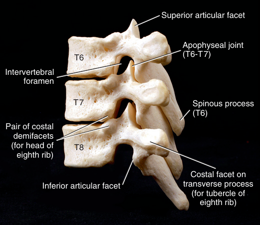
Các đốt sống ngực không điển hình, T1 và T10 đến T12 (Atypical Thoracic Vertebrae)
Đốt sống ngực thứ nhất và thường là ba đốt cuối cùng được xem là không điển hình, chủ yếu vì cách xương sườn bám vào đặc thù. T1 có một mặt sườn trọn vẹn ở phía trên, tiếp nhận toàn bộ đầu xương sườn thứ nhất, và một bán mặt ở phía dưới, tiếp nhận một phần đầu xương sườn thứ hai (xem Hình 9.18). Mỏm gai của T1 đặc biệt dài và thường nhô rõ như mỏm gai của C7. Dù có thể thay đổi, thân của T10 đến T12 có thể có một mặt sườn trọn vẹn duy nhất để khớp với đầu của xương sườn thứ mười, mười một và mười hai, tương ứng. T10 đến T12 thường thiếu các khớp sườn–mỏm ngang.
Các đốt sống thắt lưng có thân rộng và đồ sộ, phù hợp để nâng đỡ toàn bộ trọng lượng chồng lên từ đầu, thân và hai cánh tay (Hình 9.23). Tổng khối lượng của năm đốt sống thắt lưng xấp xỉ gấp đôi tổng khối lượng của cả bảy đốt sống cổ.
Nhìn chung, các đốt sống thắt lưng có những đặc điểm tương tự nhau. Các bản cung và cuống ngắn và dày, tạo thành thành sau và thành bên của ống đốt sống gần hình tam giác.
Các mỏm ngang nhô gần như sang bên; những mỏm của L1 đến L4 mảnh và thon dần, nhưng mỏm ngang của L5 ngắn, dày và chắc. Các mỏm gai rộng và hình chữ nhật, nhô nằm ngang từ chỗ nối của mỗi bản cung (Hình 9.24). Hình dạng này khác biệt rõ rệt so với các mỏm gai nhọn, chéo xuống của vùng ngực. Các mỏm núm vú (mammillary processes) ngắn nhô ra từ mặt sau của mỗi mỏm khớp trên. Những cấu trúc này làm chỗ bám cho các cơ đa split (multifidi).
Các mặt khớp của đốt sống thắt lưng được định hướng gần như thẳng đứng. Các mặt khớp trên lõm ở mức vừa phải, hướng vào trong đến sau–trong. Như Hình 9.23 minh họa, các mặt khớp trên ở vùng thắt lưng trên có xu hướng định hướng gần với mặt phẳng đứng dọc nhất, còn các mặt khớp trên ở vùng thắt lưng giữa đến dưới được định hướng xấp xỉ ở vị trí trung gian giữa mặt phẳng đứng dọc và mặt phẳng trán. Các mặt khớp dưới khớp ngược lại về hình dạng và hướng với các mặt khớp trên. Nhìn chung, các mặt khớp dưới hơi lồi, hướng chủ yếu ra ngoài đến trước–ngoài (xem Hình 9.24).
Các mặt khớp dưới của L5 khớp với các mặt khớp trên của xương cùng. Các khớp mỏm khớp L5–S1 tạo thành thường được định hướng gần mặt phẳng trán hơn nhiều so với các khớp thắt lưng khác. Các khớp mỏm khớp L5–S1 là một nguồn quan trọng tạo sự ổn định trước–sau cho mối nối thắt lưng–cùng.
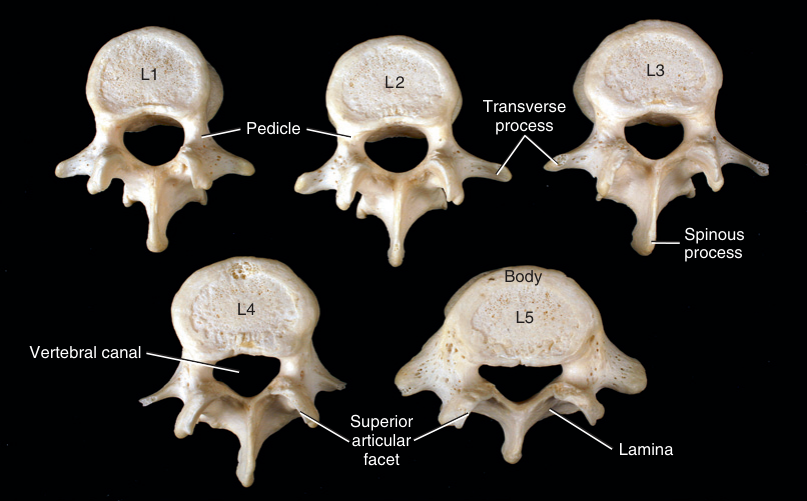
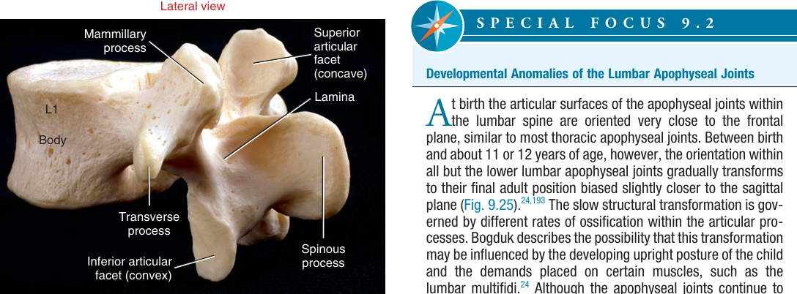
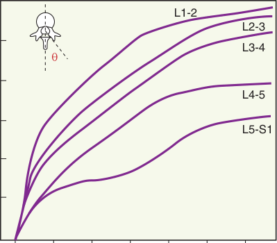
TẬP TRUNG ĐẶC BIỆT 9.2 — Các Dị Thường Phát Triển Của Khớp Mỏm Khớp Thắt Lưng (Developmental Anomalies of the Lumbar Apophyseal Joints)
Khi mới sinh, các mặt khớp của các khớp mỏm khớp trong cột sống thắt lưng được định hướng rất gần mặt phẳng trán, giống như hầu hết các khớp mỏm khớp ngực. Tuy nhiên, giữa lúc sinh và khoảng 11 hay 12 tuổi, hướng của mọi khớp mỏm khớp thắt lưng ngoại trừ các khớp thắt lưng dưới dần chuyển sang vị trí cuối cùng của người lớn, hơi nghiêng về mặt phẳng đứng dọc hơn (Hình 9.25). Sự chuyển đổi cấu trúc chậm này được chi phối bởi những tốc độ hóa xương khác nhau bên trong các mỏm khớp. Bogduk nêu khả năng sự chuyển đổi này có thể chịu ảnh hưởng của tư thế thẳng đứng đang phát triển ở trẻ và những đòi hỏi đặt lên một số cơ như cơ đa split thắt lưng. Dù các khớp mỏm khớp tiếp tục phát triển suốt tuổi dậy thì, hướng trong không gian của chúng về cơ bản được xác lập trước tuổi thiếu niên.
Những biến thiên tự nhiên trong quá trình phát triển của các khớp mỏm khớp thắt lưng ở trẻ em có thể tạo ra những khác biệt cấu trúc tồn tại đến cả tuổi trưởng thành. Dù có thể cực đoan, hầu hết các biến thiên tương đối nhỏ, chẳng hạn một sự bất đối xứng nhẹ giữa mặt khớp phải và mặt khớp trái của khớp. (Một ví dụ của sự bất đối xứng này thấy rõ khi so sánh các mặt khớp trên của các đốt sống thắt lưng minh họa trong Hình 9.23.) Bất đối xứng hai bên nhẹ hiện diện ở khoảng 20% đến 30% mọi đốt sống thắt lưng ở người lớn, dù nhiều khả năng không gây hậu quả. Ở những trường hợp cực đoan hơn, bất đối xứng hai bên có thể tạo ra áp lực không đều suốt các mối nối liên đốt. Dù các bằng chứng còn trái chiều, áp lực tăng lên có thể khiến một người dễ bị thoái hóa sớm ở các khớp mỏm khớp.
Xương cùng là một xương hình tam giác với nền hướng lên trên và đỉnh hướng xuống dưới (Hình 9.26). Một chức năng quan trọng của xương cùng là truyền trọng lượng của cột sống sang khung chậu. Ở tuổi thơ, năm đốt sống cùng riêng biệt được nối với nhau bởi một màng sụn. Tuy nhiên đến tuổi trưởng thành, xương cùng đã dính thành một xương duy nhất, dù vẫn giữ lại một số đặc điểm giải phẫu của đốt sống điển hình.
Mặt trước (mặt chậu) của xương cùng nhẵn và lõm, tạo thành một phần thành sau của ổ chậu. Bốn cặp lỗ cùng trước (lỗ chậu) dẫn các nhánh bụng của rễ thần kinh tủy tạo nên phần lớn đám rối thần kinh cùng.
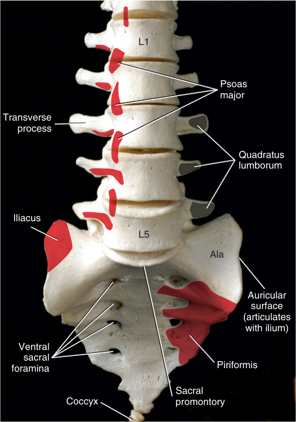
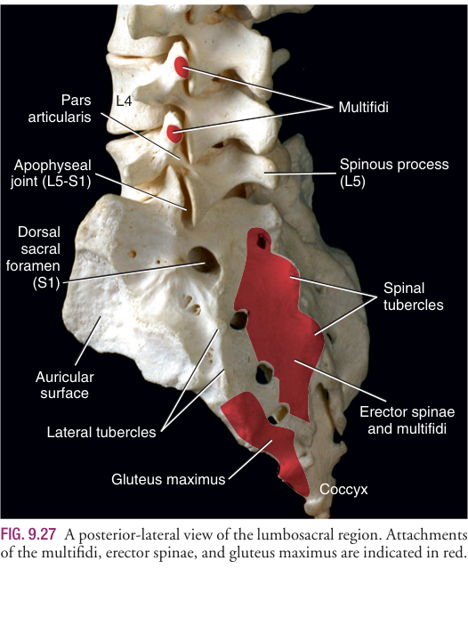
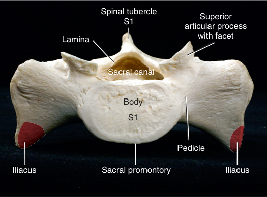
Mặt lưng của xương cùng lồi và thô vì là chỗ bám của cơ và dây chằng (Hình 9.27). Nhiều củ gai và củ bên đánh dấu phần còn lại của các mỏm gai và mỏm ngang đã dính liền, tương ứng. Bốn cặp lỗ cùng sau dẫn các nhánh lưng của rễ thần kinh tủy cùng.
Mặt trên của xương cùng thể hiện rõ thân của đốt sống cùng thứ nhất (Hình 9.28). Bờ trước sắc của thân S1 gọi là nhô cùng (sacral promontory). Ống cùng hình tam giác chứa và bảo vệ đuôi ngựa. Các cuống rất dày, kéo dài sang bên thành cánh (ala, cặp cánh) của xương cùng. Các mỏm khớp trên chắc có các mặt khớp trên hướng chủ yếu ra sau–vào trong. Những mặt khớp này khớp với các mặt dưới của L5 để tạo thành các khớp mỏm khớp L5–S1 (xem Hình 9.27). Mặt tai (auricular surface) lớn khớp với xương chậu hông, tạo thành khớp cùng–chậu. Xương cùng hẹp dần về phía đuôi để tạo thành đỉnh, là điểm khớp với xương cụt.
Xương cụt là một xương tam giác nhỏ gồm bốn đốt sống dính liền (xem Hình 9.27). Nền của xương cụt nối với đỉnh xương cùng tại khớp cùng–cụt. Khớp này có một đĩa sụn xơ và được giữ lại bởi một số dây chằng nhỏ. Khớp cùng–cụt thường dính liền vào cuối đời. Ở người trẻ, các khớp liên cụt nhỏ vẫn tồn tại, nhưng ở người lớn chúng thường đã dính lại.
TẬP TRUNG ĐẶC BIỆT 9.3 — Đuôi Ngựa (Cauda Equina)
Khi mới sinh, tủy sống và cột sống gần như dài bằng nhau. Tuy nhiên về sau, cột sống lớn nhanh hơn tủy sống một chút. Hệ quả là ở người lớn, đầu dưới của tủy sống thường kết thúc ngang mức đốt sống L1. Vì thế các rễ thần kinh tủy vùng thắt lưng–cùng phải đi một quãng rất dài về phía đuôi trước khi tới lỗ liên đốt sống tương ứng (xem Hình III.1 trong Phụ lục III, Phần A). Nhìn chung, chùm dây thần kinh kéo dài này giống đuôi ngựa, nên có tên gọi đuôi ngựa (cauda equina).
Đuôi ngựa là một tập hợp các dây thần kinh ngoại biên ngâm trong dịch não tủy, nằm bên trong ống đốt sống vùng thắt lưng–cùng. Gãy xương nặng hay chấn thương ở vùng thắt lưng–cùng có thể làm tổn thương đuôi ngựa nhưng vẫn chừa lại tủy sống. Tổn thương đuôi ngựa có thể gây liệt cơ và teo cơ, rối loạn cảm giác và giảm phản xạ. (Co cứng kèm phản xạ tăng quá mức thường xảy ra khi tủy sống bị tổn thương.) Đuôi ngựa thuộc hệ thần kinh ngoại biên (khác với hệ thần kinh trung ương). Vì vậy, nếu bị cắt đứt, các dây thần kinh này ít nhất vẫn có tiềm năng sinh lý để tái sinh.
Một mối nối liên đốt điển hình có ba thành phần chức năng: (1) các mỏm ngang và mỏm gai, (2) các khớp mỏm khớp và (3) một khớp liên thân đốt (Hình 9.29). Các mỏm ngang và mỏm gai đóng vai trò như những cần nhô ra, hay đòn bẩy cơ học, làm tăng lợi thế cơ học của cơ và dây chằng. Các khớp mỏm khớp chủ yếu chịu trách nhiệm dẫn hướng vận động liên đốt, cũng như đường ray dẫn hướng một đoàn tàu. Như sẽ được nhấn mạnh, hình dạng, chiều cao và hướng sắp xếp trong không gian của các mặt khớp bên trong khớp mỏm khớp ảnh hưởng rất lớn đến chiều vận động liên đốt chiếm ưu thế.
Các khớp liên thân đốt nối một đĩa đệm liên đốt sống với một cặp thân đốt sống. Chức năng chính của những khớp này là hấp thụ và phân tán tải trọng khắp cột sống. Thông thường, ít nhất là ở vùng thắt lưng, khớp liên thân đốt nhận phần áp đảo của trọng lượng truyền qua mối nối liên đốt. Như Hình 9.29 cho thấy, gập cột sống dời một tỉ lệ lớn hơn nữa của trọng lượng cơ thể chồng lên về phía trước, dồn vào khớp liên thân đốt. Thêm vào đó, các khớp liên thân đốt là nguồn gắn kết lớn nhất giữa các đốt sống, đóng vai trò trục quay xấp xỉ và hoạt động như những cái đệm chèn liên đốt có thể biến dạng. Với tư cách là đệm chèn, các đĩa đệm liên đốt sống chiếm khoảng 25% tổng chiều cao cột sống. Không thể nói quá tầm quan trọng chức năng của khoảng trống do một đĩa đệm liên đốt khỏe mạnh tạo ra. Khoảng trống liên đốt tương đối càng lớn thì một thân đốt sống càng có khả năng "lắc lư" tới trước và ra sau trên thân đốt kia, chẳng hạn. Nếu không còn chút khoảng đĩa nào, mặt tiếp giáp xương–xương gần như phẳng giữa hai thân đốt liên tiếp sẽ chặn vận động xoay trên cả mặt phẳng đứng dọc lẫn mặt phẳng trán — chỉ còn cho phép nghiêng hay tịnh tiến. Cuối cùng, khoảng trống do các đĩa đệm liên đốt tạo ra cung cấp lối đi đủ rộng cho các rễ thần kinh tủy đang đi ra.
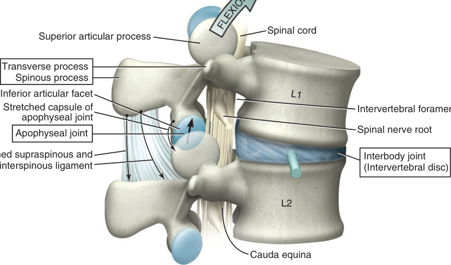
Những suy giảm chức năng liên quan đến khớp mỏm khớp hay khớp liên thân đốt có thể bắt nguồn từ chấn thương, sử dụng quá mức và áp lực tích lũy, thoái hóa khớp hay các quá trình bệnh lý khác, tuổi cao, hoặc phối hợp của các yếu tố trên. Bất kể nguyên nhân, suy giảm ở những khớp này có thể dẫn đến động học bất thường và đau, dáng tư thế bị méo, tái cấu trúc xương tại chỗ và sự chèn ép cơ học lên mô thần kinh. Hiểu được quan hệ không gian và vật lý giữa thần kinh học, giải phẫu xương và khớp học của một mối nối liên đốt điển hình giúp ta dễ dàng hơn nhiều trong việc hiểu và đánh giá nhiều cách tiếp cận điều trị đau và rối loạn chức năng liên quan đến cột sống.
Ngoại trừ một vài trường hợp quan trọng, vận động tại bất kỳ mối nối liên đốt nào đều tương đối nhỏ. Tuy nhiên, khi cộng dồn suốt toàn bộ cột sống, những vận động nhỏ ấy có thể tạo ra một góc xoay đáng kể. Động học xương suốt toàn bộ bộ xương trục (gồm cột sống và sọ) được mô tả như những vận động xoay trong ba mặt phẳng chính. Mỗi mặt phẳng, hay mỗi bậc tự do, gắn với một trục quay đi qua hoặc đi gần khớp liên thân đốt (Hình 9.30). Theo quy ước, vận động suốt cột sống — kể cả vận động của đầu trên cột sống cổ — được mô tả theo chiều từ đầu xuống đuôi, với chiều vận động được xác định theo một điểm nằm ở mặt trước của đoạn đốt sống nằm cao hơn (phía trên). Chẳng hạn, trong lúc xoay trục C4–C5 sang trái, một điểm trên mặt trước thân C4 xoay sang trái, dù mỏm gai lại xoay sang phải.
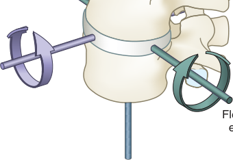
| Thuật ngữ thường dùng (Common Terminology) | Mặt phẳng vận động (Plane of Movement) | Trục quay (Axis of Rotation) | Thuật ngữ khác (Other Terminology) |
|---|---|---|---|
| Gập và duỗi (Flexion and extension) | Đứng dọc (Sagittal) | Trong–ngoài (Medial-lateral) | Cúi về trước và ngửa ra sau (Forward and backward bending) |
| Nghiêng bên sang phải hoặc sang trái (Lateral flexion to the right or left) | Trán (Frontal) | Trước–sau (Anterior-posterior) | Nghiêng người sang phải hoặc sang trái (Side bending to the right or left) |
| Xoay trục sang phải hoặc sang trái (Axial rotation to the right or left)* | Ngang (Horizontal) | Thẳng đứng (Vertical) | Xoay, vặn xoắn (Rotation, torsion) |
*Xoay trục của cột sống được định nghĩa theo chiều vận động của một điểm nằm ở mặt trước thân đốt sống.
Động học khớp của vận động liên đốt mô tả sự vận động tương đối giữa các mặt khớp bên trong các khớp mỏm khớp. Hầu hết mặt khớp phẳng hoặc gần phẳng, và những thuật ngữ như áp lại, tách rời (hay hở khe) và trượt mô tả đầy đủ động học khớp này (Bảng 9.5).
| Thuật ngữ (Terminology) | Định nghĩa (Definition) | Ví dụ chức năng (Functional Example) |
|---|---|---|
| Áp lại các mặt khớp (Approximation of joint surfaces) | Một mặt khớp có xu hướng tiến lại gần mặt khớp partner của nó; sự áp lại thường do một lực nén gây ra | Xoay trục giữa L1 và L2 điển hình gây áp lại (chèn ép) khớp mỏm khớp bên đối bên |
| Tách rời (hở khe) giữa các mặt khớp (Separation / gapping between joint surfaces) | Một mặt khớp có xu hướng rời xa mặt khớp partner của nó; sự tách rời thường do một lực kéo giãn gây ra | Kéo giãn trị liệu nhằm giải chèn ép hay tách rời các khớp mỏm khớp |
| Trượt giữa các mặt khớp (Sliding / gliding between joint surfaces) | Một mặt khớp tịnh tiến theo hướng thẳng hay cong so với mặt khớp kia; sự trượt giữa các mặt khớp do một lực hướng tiếp tuyến với mặt khớp gây ra | Gập–duỗi của cột sống cổ giữa đến dưới |
Cột sống chứa 24 cặp khớp mỏm khớp. Mỗi khớp được tạo thành giữa các mặt khớp đối diện nhau (Hình 9.31). Được phân loại cơ học là khớp phẳng, các khớp mỏm khớp được lót bằng sụn khớp và bao bọc bởi một bao khớp có màng hoạt dịch, được chi phối thần kinh dày đặc. Các kích thích cảm giác phát ra từ bao khớp và các cơ sâu tại chỗ giúp dẫn hướng vận động liên đốt, đồng thời bảo vệ khớp khỏi áp lực quá mức. Dù các ngoại lệ và biến thiên tự nhiên khá phổ biến, bề mặt khớp của hầu hết khớp mỏm khớp về cơ bản là phẳng. Những mặt khớp hơi cong hiện diện chủ yếu ở vùng cổ trên và suốt vùng thắt lưng.
Từ apophysis nghĩa là "phần mọc ra", nhấn mạnh bản chất nhô lên của các mỏm khớp. Đóng vai trò như những hàng rào cơ học, các mỏm khớp cho phép một số vận động nhưng chặn những vận động khác. Nhìn chung, các khớp mỏm khớp được định hướng gần thẳng đứng ở vùng ngực dưới, thắt lưng và thắt lưng–cùng chặn sự tịnh tiến ra trước quá mức của một đốt sống trên đốt sống kia. Điều này quan trọng về chức năng, vì tịnh tiến ra trước quá mức làm suy giảm đáng kể thể tích ống đốt sống — khoảng không dành cho tủy sống hay các rễ thần kinh tủy đang đi qua.
Hướng của mặt phẳng các mặt khớp trong mỗi khớp ảnh hưởng mạnh đến động học ở những vùng khác nhau dọc cột sống. Theo quy tắc chung, các mặt khớp nằm ngang thiên về xoay trục, trong khi các mặt khớp thẳng đứng (dù ở mặt phẳng đứng dọc hay mặt phẳng trán) chặn xoay trục. Tuy nhiên, hầu hết mặt khớp của khớp mỏm khớp được định hướng ở đâu đó giữa nằm ngang và thẳng đứng. Hình 9.32 cho thấy hướng khớp điển hình của các mặt khớp trên ở vùng cổ, ngực và thắt lưng. Mặt phẳng của các mặt khớp giải thích một phần lý do vì sao xoay trục ở vùng cổ lớn hơn nhiều so với vùng thắt lưng. Những yếu tố khác ảnh hưởng đến vận động chiếm ưu thế tại mỗi vùng cột sống gồm kích thước của các đĩa đệm liên đốt (tương quan với thân đốt sống đi kèm), hình dạng tổng thể của đốt sống, hoạt động của cơ tại chỗ và các chỗ bám của xương sườn hay dây chằng.
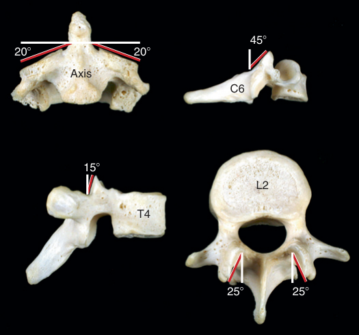
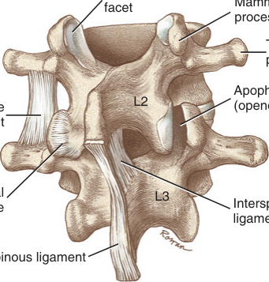
Từ mối nối C2–C3 đến L5–S1, cột sống có 23 khớp liên thân đốt. Mỗi khớp gồm một đĩa đệm liên đốt sống, các mâm đốt sống (vertebral endplates) và các thân đốt sống kề cận. Về giải phẫu, khớp này được phân loại là khớp sụn không vận động (cartilaginous synarthrosis — xem Chương 2).
Các cân nhắc cấu trúc của đĩa đệm liên đốt vùng thắt lưng (Structural Considerations of the Lumbar Intervertebral Discs)
Phần lớn những điều được biết về cấu trúc và chức năng của đĩa đệm liên đốt sống đều dựa trên nghiên cứu thực hiện ở vùng thắt lưng. Trọng tâm nghiên cứu này phản ánh tần suất thoái hóa đĩa đệm cao một cách không tương xứng của vùng, nhất là ở các đoạn cột sống dưới.
Một đĩa đệm liên đốt vùng thắt lưng gồm một nhân nhầy (nucleus pulposus) nằm ở giữa, được bao quanh bởi vòng sợi (annulus fibrosus) (Hình 9.33). Nhân nhầy là một khối gel dạng bột nằm ở phần giữa đến phần sau của đĩa đệm. Ở người trẻ, nhân nhầy trong các đĩa đệm thắt lưng chứa 70% đến 90% nước. Chính lượng nước này cho phép đĩa đệm hoạt động như một hệ thống giảm chấn thủy lực cải biên, có khả năng liên tục tiêu tán và truyền tải trọng qua các đốt sống kế tiếp.
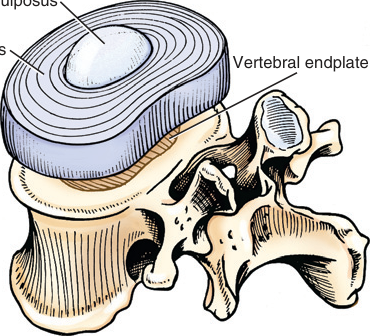
TẬP TRUNG ĐẶC BIỆT 9.4 — Các Cấu Trúc Nội Khớp Nằm Bên Trong Khớp Mỏm Khớp (Intra-articular Structures Located within Apophyseal Joints)
Quanh bờ của các khớp mỏm khớp có thể tồn tại những cấu trúc phụ (thể vùi) nhỏ và không được tạo thành một cách nhất quán, được mô tả nhiều nhất ở vùng cổ trên và vùng thắt lưng. Ở cột sống thắt lưng, Bogduk mô tả hai loại cấu trúc phụ chính: các đệm mỡ dưới bao khớp và các thể sụn mỡ sợi (fibro-adipose meniscoids). Các đệm mỡ dưới bao khớp lấp đầy những khe hở nhỏ hình thành giữa bao khớp và màng hoạt dịch nằm bên dưới, điển hình ở bờ trên và bờ dưới của khớp. Các đệm mỡ dưới bao khớp có thể lan ra ngoài khớp qua những khe hở rất nhỏ trên bao khớp. Khi phát triển đầy đủ, những đệm mỡ ngoài bao khớp lớn hơn ở vùng thắt lưng lấp một phần khoảng trống giữa mảnh cung đốt sống (lamina) và các cơ multifidi nằm đè lên.
Thể sụn mỡ sợi là một nhóm mô liên kết khác nằm ở ngoại vi khớp mỏm khớp. Các cấu trúc này dao động từ những chỗ dày lên hay “nếp gấp” của mô liên kết nằm rải rác dọc theo mặt trong của bao khớp, tới những nếp màng hoạt dịch bọc lấy các đệm mỡ nhỏ, sợi collagen và mạch máu. Những thể sụn mỡ sợi lớn hơn có thể nhô vào trong khớp mỏm khớp vài milimét.
Chức năng của các thể vùi nội khớp trong khớp mỏm khớp vẫn còn bị tranh cãi. Một số tác giả mô tả chúng như những miếng chèn có thể biến dạng, giúp tiêu tán lực nén bên trong khớp. Số khác phỏng đoán rằng các cấu trúc này được thiết kế để che phủ một phần sụn khớp bị lộ ra ở những tầm cực của vận động. Sự che phủ thoáng qua này có thể bảo vệ và bôi trơn các mặt bị lộ cho tới khi khớp trở lại vị trí giải phẫu tự nhiên. Dù ý kiến còn khác nhau, các thể vùi nội khớp có thể có ý nghĩa lâm sàng quan trọng. Những thể sụn mỡ sợi lớn hơn ở vùng cổ có thể bị chèn ép khi các khớp mỏm khớp bị duỗi quá mức một cách mạnh bạo, chẳng hạn trong chấn thương vùng cổ kiểu roi da (whiplash). Vì những mô này được chi phối thần kinh dày đặc, chúng có thể là một nguồn gây đau. Các thể sụn mỡ sợi có thể tăng sinh tới mức tạm thời “khóa” một khớp mỏm khớp bằng cách hạn chế cơ học động học khớp tự nhiên của nó.
Nhân nhầy được làm đặc đến độ gel nhờ các proteoglycan phân nhánh tương đối lớn. Mỗi proteoglycan là một tập hợp gồm nhiều glycosaminoglycan gắn nước, liên kết với các protein lõi (xem Chương 2). Phân tán khắp hỗn hợp proteoglycan ngậm nước là các sợi collagen typ II mảnh, sợi elastin và các protein khác. Collagen tạo thành một khung nâng đỡ cho mạng lưới proteoglycan. Một số rất ít tế bào sụn và nguyên bào sợi nằm rải rác khắp nhân nhầy, chịu trách nhiệm cuối cùng về việc tổng hợp và điều hòa các protein và proteoglycan. Ở trẻ rất nhỏ, nhân nhầy chứa một vài tế bào sụn là tàn tích của dây sống nguyên thủy (notochord).
Vòng sợi của các đĩa đệm thắt lưng gồm chủ yếu 15 đến 25 lớp, hay vòng, sợi collagen xếp đồng tâm. Như phần bột bao quanh phần thạch ở giữa một chiếc bánh rán, các vòng collagen bao bọc và giữ chặt nhân nhầy dạng lỏng ở trung tâm. Vòng sợi chứa vật chất và tế bào tương tự như ở nhân nhầy, khác biệt chủ yếu về tỉ lệ. Ở vòng sợi, collagen chiếm khoảng 50% đến 60% trọng lượng khô, so với chỉ 15% đến 20% ở nhân nhầy. Protein elastin dồi dào được cài song song với các vòng collagen, ban cho vòng sợi một mức độ đàn hồi theo chu vi.
Những lớp ngoài cùng, hay lớp ngoại vi, của vòng sợi gồm chủ yếu collagen typ I và typ II. Cách sắp xếp này tạo nên sức bền và độ linh hoạt theo chu vi cho đĩa đệm, đồng thời là phương tiện gắn vòng sợi với dây chằng dọc trước và dây chằng dọc sau, với vành kề cận của thân đốt sống và với các mâm đốt sống. (Các lớp ngoài của vòng sợi chứa các dây thần kinh cảm giác duy nhất của đĩa đệm; xem mục chi phối thần kinh của đĩa đệm, Chương 10.) Các lớp sâu hơn, nằm bên trong, chứa ít collagen typ I hơn và nhiều nước hơn — dần chuyển thành một mô có đặc tính giống nhân nhầy nằm ở trung tâm.
Thông thường, lực nén tác động lên đĩa đệm làm tăng áp lực thủy tĩnh bên trong nhân nhầy ngậm nước. Sự tăng lên và sự giữ kín áp lực thủy tĩnh này cuối cùng hấp thụ và phân bố đều tải trọng khắp toàn bộ mối nối liên đốt. Những đĩa đệm được cấp nước đầy đủ và duy trì áp lực bảo vệ không chỉ các khớp liên thân đốt mà còn, gián tiếp, cả các khớp mỏm khớp. Một đĩa đệm mất nước và mỏng đi làm tăng tải trọng nén và ảnh hưởng đến động học của các khớp mỏm khớp liên quan. Vì vậy, nhiều chuyên gia có uy tín cho rằng bệnh lý thoái hóa đĩa đệm là tiền đề tự nhiên dẫn đến viêm khớp (hay thoái hóa khớp) của các khớp mỏm khớp.
Đĩa đệm liên đốt là những cấu trúc ổn định hóa cột sống rất quan trọng. Chức năng ổn định này chủ yếu là kết quả của cách sắp xếp cấu trúc của các sợi collagen bên trong vòng sợi. Như Hình 9.34 cho thấy, hầu hết sợi được định hướng theo một mô hình hình học khá chính xác. Ở vùng thắt lưng, các vòng collagen được định hướng trung bình khoảng 65 độ so với phương thẳng đứng, với các sợi của những lớp kề nhau chạy theo hướng ngược lại. Cách sắp xếp cấu trúc này tạo ra sức cản đáng kể đối với sự tách rời liên đốt (tách theo phương thẳng đứng), lực cắt (trượt) và xoắn (vặn). Nếu các sợi collagen được cài gần như thẳng đứng, đĩa đệm sẽ chống lại hiệu quả nhất lực tách rời, nhưng không chống được trượt hay xoắn. Ngược lại, nếu mọi sợi chạy gần như song song với mặt trên của thân đốt sống, đĩa đệm sẽ chống lại hiệu quả nhất lực cắt và xoắn, nhưng không chống được tách rời. Góc 65 độ nhiều khả năng là một thỏa hiệp hình học, cho phép các lực kéo được đặt chủ yếu vào những vận động tự nhiên nhất của cột sống thắt lưng. Lực tách rời là một thành phần vốn có của gập, duỗi và nghiêng bên, xảy ra khi một thân đốt sống hơi nghiêng đi và vì thế tách khỏi thân đốt kề nó. Lực cắt và xoắn xuất hiện trong hầu như mọi vận động của cột sống trên mặt phẳng ngang. Sự hiện diện của lực xoắn đặc biệt đáng lưu ý vì hướng của các sợi vòng. Do các vòng collagen chỉ lệch 25 độ so với mặt phẳng nằm ngang, khoảng 90% lực xoắn đặt lên đĩa đệm (tức cosin của 25°) có khả năng kéo căng các sợi vòng. Cũng vì các lớp vòng sợi xếp xen kẽ, chỉ những sợi collagen định hướng theo chiều của sự trượt hay vặn mới căng ra; sợi ở mỗi lớp còn lại thì chùng đi. Những yếu tố này có thể giải thích, ít nhất một phần, vì sao các hoạt động đòi hỏi xoay trục thân mình lặp đi lặp lại và dùng sức là những yếu tố nguy cơ tiềm tàng gây chấn thương vùng lưng.
Không phải vòng sợi nào của đĩa đệm thắt lưng cũng khép kín hoàn toàn quanh nhân nhầy như Hình 9.34 gợi ý. Một số vòng không hoàn chỉnh và hợp nhất với các vòng kề nhau, đặc biệt ở góc phần tư sau–bên của đĩa đệm. Y văn cũng ghi nhận các vòng sợi không hoàn chỉnh ở nhân nhầy vùng cổ. Nhìn từ trên xuống, vòng sợi của một đĩa đệm cổ có dạng gần như lưỡi liềm, dày dọc theo vành trước và mỏng dần thành một lớp rất mỏng ở bờ bên của đĩa. Có rất ít hoặc không có sợi vòng ở vùng các khớp không đốt sống (uncovertebral joints). Từ mỗi khớp không đốt sống thường có một khe nứt nhỏ (hay khe hở) chạy ngang vào trong, đi tới những vùng sâu hơn của đĩa đệm. Dù chức năng của các khe nứt này chưa rõ, chúng có thể phối hợp với các khớp không đốt sống để tăng mức độ tự do vận động trong vùng cổ.
Mâm đốt sống (Vertebral Endplates)
Ở người lớn, mâm đốt sống là những nắp mô liên kết sụn tương đối mỏng, phủ hầu hết mặt trên và mặt dưới của thân đốt sống (xem Hình 9.33). Lúc mới sinh, mâm đốt sống dày, chiếm khoảng 50% chiều cao của mỗi khoang liên đốt. Trong thời thơ ấu, mâm đốt sống đóng vai trò là sụn tăng trưởng cho đốt sống; ở người lớn, mâm đốt sống thoái lui và chỉ còn chiếm khoảng 5% chiều cao của mỗi khoang liên đốt.
Mặt của mâm đốt sống hướng về đĩa đệm cấu tạo chủ yếu từ sụn sợi, gắn trực tiếp và chắc chắn với collagen bên trong vòng sợi (Hình 9.35). Mối gắn sụn sợi này tạo nên sự dính kết chính giữa các đốt sống kế tiếp. Ngược lại, mặt của mâm đốt sống hướng về thân đốt sống cấu tạo chủ yếu từ sụn đã vôi hóa, bám lỏng lẻo vào xương. Giao diện mâm–xương này thường được mô tả là “mắt xích yếu” bên trong khớp liên thân đốt, thường là thành phần đầu tiên của khớp liên thân đốt bị gãy dưới tải trọng nén cao hay lặp đi lặp lại. Một mâm đốt sống bị thủng hay gãy có thể để gel proteoglycan rò rỉ ra khỏi nhân nhầy, gây rối loạn cấu trúc của đĩa đệm.
Thông thường chỉ những vòng ngoài cùng, nằm ngoại vi hơn, của vòng sợi mới có mạch máu. Vì lý do đó, phần lớn đĩa đệm vốn có khả năng lành hạn chế. Các chất dinh dưỡng thiết yếu như glucose và oxy phải khuyếch tán một quãng rất xa mới tới được những tế bào sâu hơn, vốn duy trì chuyển hóa thấp nhưng thiết yếu của đĩa đệm. Nguồn cung cấp các chất này là mạch máu nằm ở phần vòng sợi nông hơn và, quan trọng hơn, máu chứa trong các thân đốt sống kề cận. Hầu hết các chất dinh dưỡng ấy phải khuyếch tán qua mâm đốt sống và xuyên qua chất nền ngoại bào của đĩa đệm, cuối cùng tới được các tế bào nằm sâu bên trong. Những tế bào này phải nhận được nuôi dưỡng để sản xuất các proteoglycan ngoại bào thiết yếu. Chẳng hạn, đĩa đệm đã lão hóa thường cho thấy độ thấm giảm và sự vôi hóa tăng lên ở mâm đốt sống, và điều đó lại làm giảm dòng chất dinh dưỡng và oxy đi vào đĩa đệm. Quá trình liên quan đến tuổi này có thể ức chế chuyển hóa tế bào và tổng hợp proteoglycan. Ít proteoglycan hơn làm giảm khả năng của nhân nhầy hút và giữ nước, từ đó hạn chế khả năng hấp thụ và truyền tải trọng hiệu quả của nó.
Sự khuyếch tán dinh dưỡng qua mâm đốt sống bị suy giảm, kéo theo dinh dưỡng kém của nhân nhầy, không chỉ giới hạn ở người cao tuổi. Ngay cả ở người trẻ, tải trọng cơ học quá mức hay bất thường và sự thoái hóa mâm đốt sống về sau cũng làm giảm khả năng chất dinh dưỡng đi sâu vào nhân nhầy. Nghiên cứu trên các mâm đốt sống chịu tải mạn tính và bất thường, lấy ra trong lúc phẫu thuật chỉnh sửa vẹo cột sống tiến triển ở người 11 đến 17 tuổi, cho thấy sự khuyếch tán bị thay đổi trên diện rộng và dinh dưỡng kém của vật chất nhân đĩa đệm. Đây là một điều đáng lưu ý, vì chức năng tối ưu của mâm đốt sống là thiết yếu cho sức khỏe và, theo đó, cho chức năng giảm chấn của đĩa đệm liên đốt suốt cuộc đời.
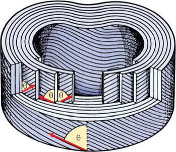
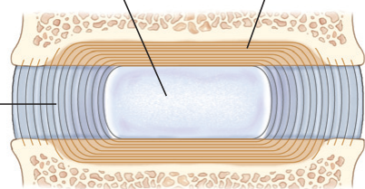
Đĩa đệm liên đốt như một bộ phân phối áp lực thủy tĩnh (Intervertebral Disc as a Hydrostatic Pressure Distributor)
Cột sống là cấu trúc nâng đỡ chính cho thân mình và phần trên cơ thể. Chẳng hạn, khi một người đứng thẳng, khoảng 80% tải trọng do hai đốt sống thắt lưng kề nhau chịu đựng được truyền qua khớp liên thân đốt; 20% còn lại do các thành phần phía sau đảm nhiệm, như các khớp mỏm khớp và mảnh cung đốt sống. Như sẽ được mô tả sau trong chương này và trong Chương 10, sự chia sẻ tải trọng tương đối tại mối nối liên đốt chịu ảnh hưởng mạnh của cả vùng cột sống lẫn tư thế của cột sống.
Đĩa đệm liên đốt là những bộ giảm chấn được thiết kế rất đặc thù, bảo vệ xương đốt sống khỏi những tải trọng có khả năng gây hại phát sinh từ trọng lượng cơ thể và sự co cơ. Với riêng khối lượng cấu trúc của mình, vòng sợi làm từ collagen đã có thể gánh một phần đáng kể tải trọng liên đốt. Tuy nhiên, để bảo vệ đốt sống trước những tải trọng lớn hơn, kéo dài và lặp đi lặp lại, cần một hệ thống chia sẻ tải tinh vi và năng động hơn. Hệ thống này dựa trên tương tác cơ sinh học giữa nhân nhầy chứa nước và các vòng sợi. Lực nén đẩy các mâm đốt sống lõm vào trong và về phía nhân nhầy. Vì chứa chủ yếu là nước và do đó về cơ bản không nén được, nhân nhầy còn non và khỏe đáp ứng bằng cách biến dạng chậm theo hướng xuyên tâm, đẩy ra ngoài vào vòng sợi (Hình 9.36A). Sự biến dạng xuyên tâm bị cản lại bởi sức căng sinh ra trong các vòng collagen và elastin bị kéo giãn của vòng sợi (xem Hình 9.36B). Nhờ vậy áp lực trong toàn bộ đĩa đệm được nâng lên đồng đều và truyền đều sang đốt sống kề cận (xem Hình 9.36C). Khi lực nén khỏi các mâm đốt sống được dỡ bỏ, các sợi elastin và collagen đã kéo giãn trở về chiều dài có tiền tải ban đầu, sẵn sàng cho một lực nén khác. Cơ chế này cho phép những lực nén kéo dài được nhiều cấu trúc cùng chia sẻ, nhờ đó ngăn ngừa “tải cục bộ” (tức những lực tập trung cao độ tác động lên một diện tích nhỏ của mô). Vì có đặc tính nhớt đàn hồi, đĩa đệm liên đốt chống lại một lực nén tác động nhanh hay mạnh hơn so với lực nén chậm hay nhẹ. Vì thế đĩa đệm có thể mềm dẻo ở tải thấp và cứng hơn ở tải cao.
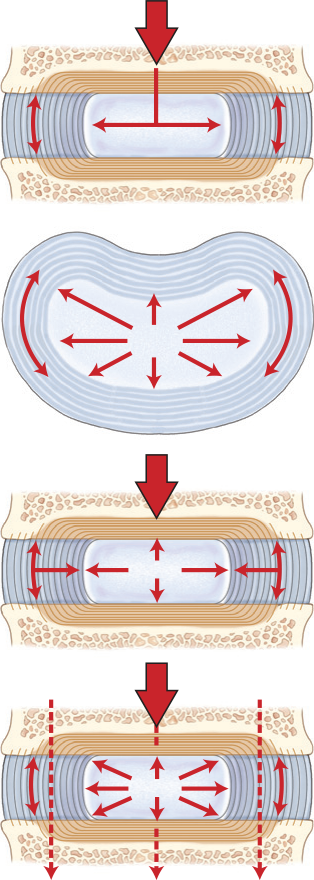
Đo áp lực trong nhân nhầy trên cơ thể sống (In Vivo Pressure Measurements from the Nucleus Pulposus)
Các nghiên cứu trên người, thực hiện ngay trên cơ thể sống, đã đo áp lực bên trong nhân nhầy ở vùng thắt lưng trong những hoạt động khác nhau. Nhìn chung số liệu đồng thuận rằng áp lực tương đối thấp lúc nghỉ ở tư thế nằm ngửa, nhưng tăng đáng kể trong những hoạt động kết hợp cúi người về trước với nhu cầu co cơ thân mình mạnh. Khi ở mức cao, áp lực nội đĩa có thể tạo ra những thay đổi thoáng qua về hình dạng đĩa đệm, ngay cả ở mẫu lành. Chẳng hạn, gập cột sống thắt lưng kéo dài có thể làm giảm nhẹ chiều cao đĩa đệm khi nước bị đẩy ra ngoài từ từ. Ngược lại, duỗi hết tầm thắt lưng và kéo dài làm giảm áp lực trong đĩa đệm; điều này cho phép nước được hấp thu trở lại vào đĩa, nhờ đó “bơm phồng” nó về mức tự nhiên.
Số liệu áp lực nội đĩa đo được trên cơ thể sống trong lúc vận động và khi thay đổi tư thế đã làm tăng đáng kể hiểu biết về những cách giảm chấn thương cho đĩa đệm. Hình 9.37 so sánh số liệu từ hai nghiên cứu độc lập. Cả hai nghiên cứu đều củng cố ba điểm: (1) áp lực đĩa đệm lớn khi ta cầm một vật nặng ở phía trước cơ thể, nhất là khi cúi người về trước; (2) nhấc vật nặng với đầu gối gập tạo áp lực lên đĩa đệm thắt lưng ít hơn so với nhấc với đầu gối thẳng (cách sau thường đòi hỏi nhiều hơn ở các cơ lưng); và (3) ngồi khom người về trước tạo áp lực đĩa lớn hơn ngồi thẳng. Ba điểm này là cơ sở lý thuyết đáng tin cậy cho nhiều chương trình giáo dục cách hạn chế sự thoái hóa thêm của đĩa đệm, kể cả thoát vị đĩa đệm.
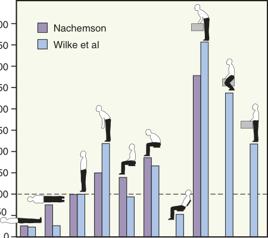
Dao động hàm lượng nước trong đĩa đệm liên đốt theo nhịp ngày đêm (Diurnal Fluctuations in the Water Content within the Intervertebral Discs)
Khi một cột sống khỏe không chịu tải, chẳng hạn lúc nằm nghỉ trên giường, áp lực trong nhân nhầy tương đối thấp. Áp lực tương đối thấp này, kết hợp với bản chất ưa nước của nhân nhầy, hút nước vào đĩa đệm. Hệ quả là đĩa đệm hơi trương lên trong lúc ta ngủ. Tuy nhiên, khi thức và ở tư thế đứng, chịu trọng lượng cơ thể tạo ra lực nén qua các mâm đốt sống, đẩy nước ra khỏi đĩa đệm. Chu kỳ tự nhiên trương lên và co lại của đĩa đệm tạo ra mức dao động trung bình 1% chiều cao cơ thể trong ngày. Dao động hằng ngày này có quan hệ nghịch mạnh với tuổi. Karakida và các cộng sự dùng chụp cộng hưởng từ để đo sự thay đổi hàm lượng nước trong đĩa đệm của một nhóm người đang làm việc, tuổi từ 23 đến 56, không có tiền sử đau thắt lưng. Đáng chú ý, dao động đáng kể về hàm lượng nước theo nhịp ngày đêm chỉ thấy ở đĩa đệm của những người dưới 35 tuổi. Những phát hiện này phù hợp với việc khả năng giữ nước của đĩa đệm liên đốt tự nhiên suy giảm theo tuổi. Tình trạng mất nước tương đối là do sự suy giảm song song, liên quan đến tuổi, của hàm lượng proteoglycan trong đĩa đệm.
Một nhân nhầy tương đối mất nước tạo ra ít áp lực thủy tĩnh hơn khi bị nén. Một khi đã giảm áp tương đối, đĩa đệm có thể phình ra ngoài khi chịu nén, giống như một “lốp xẹp”. Đĩa đệm liên đốt đã lão hóa, thoái hóa về sau kém khả năng đệm đều cho thân đốt sống và mâm đốt sống trước lực nén. Hệ quả là thoái hóa đĩa đệm tăng lên theo tuổi và ảnh hưởng, ở những mức độ khác nhau, tới hầu hết những người từ 35 hoặc 40 tuổi trở lên. Chẩn đoán thoái hóa đĩa đệm được thực hiện hiệu quả nhất bằng chụp cộng hưởng từ, điển hình dựa trên cường độ tín hiệu giảm của ảnh T2 (cho thấy hàm lượng nước giảm), mất ranh giới giữa bờ vòng sợi và nhân nhầy, nhân nhầy phình ra và mất khoang đĩa. Ảnh chụp cộng hưởng từ ở Hình 9.38 cho thấy cường độ tín hiệu giảm giữa L4–L5 và L5–S1, kèm sự phình nhẹ của nhân nhầy. Hơn nữa, một đĩa đệm thoái hóa có thể thể hiện những khe nứt (khe hở) theo chu vi, xuyên tâm và ngoại vi bên trong vòng sợi. Theo Adams, những khe nứt này thường có thể quan sát thấy ngay cả ở người vị thành niên còn trẻ. Thoái hóa quá mức cũng có thể đi kèm sự mất áp hoàn toàn của nhân nhầy, cùng với sự tách lớp các sợi vòng và những vi gãy của mâm đốt sống. Trong một số trường hợp, sự rối loạn bên trong các sợi vòng có thể dẫn tới thoát vị (sa) nhân nhầy, điển hình ra phía sau về phía ống đốt sống hoặc vào trong ống. Đáng chú ý, một tỉ lệ đáng kể người có dấu hiệu thoái hóa đĩa đệm thấy được trên ảnh cộng hưởng từ vẫn không có triệu chứng, không bị suy giảm cơ học tiếp diễn hay mất chức năng. Chủ đề quan trọng về thoái hóa đĩa đệm, kể cả thoát vị đĩa đệm, được mô tả chi tiết hơn ở phần sau của chương này.
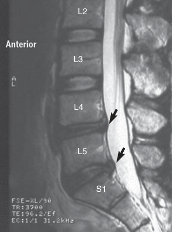
Một vận động thực hiện trong bất kỳ mặt phẳng nào dọc cột sống thường đi kèm một vận động tự động, và thường không nhận ra được trên lâm sàng, ở một mặt phẳng khác. Hiện tượng động học này gọi là sự kết cặp cột sống (spinal coupling). Dù sự kết cặp cột sống có thể gồm cả xoay lẫn tịnh tiến, động học xoay được chú ý nhiều hơn trên lâm sàng.
Những giải thích cơ học về nguyên nhân của hầu hết các kiểu kết cặp cột sống được cho là có thật rất đa dạng và điển hình là chưa rõ ràng. Chúng có thể gồm tác động của cơ, sự thẳng hàng của mặt khớp trong khớp mỏm khớp, tư thế có sẵn, chỗ bám của xương sườn, độ cứng của mô liên kết và chính hình học của đường cong sinh lý. Giải thích cuối cùng, bắt nguồn nhiều hơn từ cơ học thay vì sinh học, có thể minh họa bằng cách dùng một thanh dẻo làm mô hình cột sống. Uốn thanh khoảng 30 đến 40 độ trong một mặt phẳng để mô phỏng độ ưỡn hay độ gù tự nhiên của một vùng nhất định. Trong lúc giữ nguyên đường cong ấy, hãy “nghiêng bên” thanh và nhận thấy một cơn xoay trục tự động nhẹ. Đường cong hai mặt phẳng áp lên thanh dẻo dường như tạo ra những biến dạng không đều, được tiêu tán dưới dạng xoắn. Tuy nhiên, minh họa này không giải thích được mọi kiểu kết cặp quan sát thấy trên lâm sàng dọc cột sống.
Dù một số nhà trị liệu thủ công đưa sự kết cặp cột sống vào đánh giá và điều trị rối loạn chức năng cột sống, vẫn có rất ít đồng thuận về việc kiểu kết cặp nào được coi là bình thường cho một vùng cụ thể. Một ngoại lệ quan trọng là kiểu kết cặp tương đối nhất quán biểu hiện một cách tự nhiên giữa nghiêng bên và xoay trục cùng bên ở cột sống cổ giữa và cổ dưới. Dù không mạnh bằng, kiểu kết cặp này cũng được chứng minh là kéo dài về phía đuôi tới cả cột sống ngực trên. Những chi tiết cụ thể của kiểu kết cặp này được mô tả kỹ trong phần động học của vùng sọ–cổ.
Cần thêm nghiên cứu để xác định liệu có một kiểu kết cặp cột sống nhất quán ở vùng ngực giữa đến dưới và vùng thắt lưng hay không. Nghiêng bên và xoay trục quả thực đã được chứng minh là kết cặp với nhau, dù không nhất quán qua nhiều nghiên cứu có đối chứng. Sự không nhất quán ấy có thể phản ánh biến thiên tự nhiên của hiện tượng tại những vùng này, cũng như phương pháp hay điều kiện thử nghiệm chưa đầy đủ hoặc khác nhau, quần thể đối tượng không tương đồng, hoặc — nhiều khả năng hơn — sự phối hợp của các yếu tố trên. Việc dùng một kiểu kết cặp cụ thể ở vùng ngực giữa đến dưới và vùng thắt lưng để định hướng đánh giá và điều trị bệnh nhân nên được thực hiện thận trọng, với sự tôn trọng đối với bản chất không nhất quán và đôi khi khó nắm bắt của nó.
Phần này mô tả giải phẫu và động học qua các vùng khác nhau của cột sống. Với mỗi vùng, tầm vận động tối đa kỳ vọng sẽ được nêu ra, giả định một tư thế xuất phát giải phẫu (Hình 9.39). Tầm vận động được báo cáo trong y văn biến thiên rất nhiều, phản ánh khác biệt về giới tính, tuổi và thể trạng của đối tượng, cũng như biến thiên tự nhiên. Số liệu cũng khác nhau giữa vận động chủ động và thụ động và theo công cụ dùng để đo vận động. Các phương pháp điển hình gồm dùng thước đo góc (cơ khí, điện hay sợi quang), thước dẻo, máy đo độ nghiêng, hoặc những công cụ tinh vi hơn dùng chụp cộng hưởng từ ba chiều, X quang, soi huỳnh quang video, siêu âm và phân tích bằng máy tính với hệ thống theo dõi cơ điện, điện trở, quang học hay điện từ.*
Các mô liên kết trong cột sống đóng vai trò lớn trong việc hạn chế — và vì thế định nghĩa — giới hạn vận động bình thường giữa các vùng; Bảng 9.6 nêu một số ví dụ chọn lọc. Trong bệnh lý, chấn thương hay những đợt bất động kéo dài, những mô liên kết này có thể trở nên cứng bất thường, từ đó cản trở động học bình thường. Hiểu được chức năng bình thường của các cấu trúc ấy là điều kiện tiên quyết để thiết kế những điều trị nhằm tăng tính di động liên đốt.
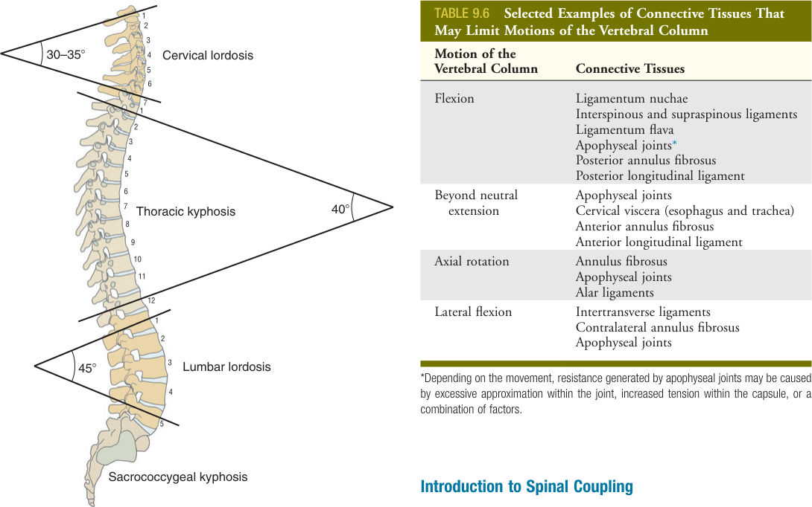
| Vận động của cột sống (Motion of the Vertebral Column) | Mô liên kết (Connective Tissues) |
|---|---|
| Gập (Flexion) | Dây chằng gáy (Ligamentum nuchae) Dây chằng liên gai và trên gai (Interspinous and supraspinous ligaments) Dây chằng vàng (Ligamentum flava) Khớp mỏm khớp* (Apophyseal joints) Phần sau của vòng sợi (Posterior annulus fibrosus) Dây chằng dọc sau (Posterior longitudinal ligament) |
| Duỗi quá mức trung tính (Beyond neutral extension) | Khớp mỏm khớp (Apophyseal joints) Tạng vùng cổ, gồm thực quản và khí quản (Cervical viscera: esophagus and trachea) Phần trước của vòng sợi (Anterior annulus fibrosus) Dây chằng dọc trước (Anterior longitudinal ligament) |
| Xoay trục (Axial rotation) | Vòng sợi (Annulus fibrosus) Khớp mỏm khớp (Apophyseal joints) Dây chằng cánh (Alar ligaments) |
| Nghiêng bên (Lateral flexion) | Dây chằng liên mỏm ngang (Intertransverse ligaments) Vòng sợi bên đối bên (Contralateral annulus fibrosus) Khớp mỏm khớp (Apophyseal joints) |
*Tùy theo vận động, sức cản do các khớp mỏm khớp tạo ra có thể bắt nguồn từ sự áp lại quá mức bên trong khớp, sức căng tăng lên trong bao khớp, hay sự phối hợp của nhiều yếu tố. (Chú thích gắn dấu * trong bảng.)
*Tài liệu tham khảo 20, 21, 126, 140, 207, 231, 260, 265 — chú thích của bản in gắn với dấu * đặt sau câu kể các phương pháp đo vận động ở đoạn mở đầu của phần này; giữ nguyên vì đây là chú thích in, không phải trích dẫn trong thân bài.
Hai thuật ngữ “vùng sọ–cổ” (craniocervical region) và “cổ” (neck) được dùng thay thế cho nhau. Cả hai đều chỉ tập hợp gồm ba nhóm khớp: khớp chẩm–đốt đội (atlanto-occipital joint), phức hợp khớp đội–trục (atlanto-axial joint complex) và các khớp mỏm khớp nội cổ (C2 đến C7). Cách tổ chức toàn bộ phần trình bày giải phẫu vùng và động học của vùng sọ–cổ được phác thảo trong Hộp 9.1. Phần sắp tới bắt đầu bằng một cái nhìn tổng quan về giải phẫu, tiếp theo là thảo luận về động học, được sắp xếp theo mặt phẳng vận động.
HỘP 9.1 — Cách Tổ Chức Phần Giải Phẫu Khớp và Động Học Vùng Tại Vùng Sọ–Cổ
Giải phẫu các khớp trong vùng sọ–cổ
Động học mặt phẳng đứng dọc
Động học mặt phẳng ngang
Động học mặt phẳng trán
Sự kết cặp cột sống giữa nghiêng bên và xoay trục
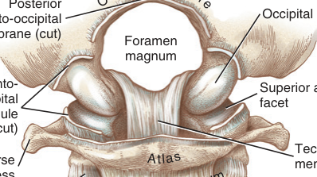
Khớp chẩm–đốt đội (Atlanto-Occipital Joint)
Các khớp chẩm–đốt đội cho phép sọ vận động độc lập so với đốt đội (C1). Khớp được tạo thành bởi các lồi cầu lồi nhô ra của xương chẩm lồng vào các mặt khớp trên lõm tương ứng của đốt đội (Hình 9.40). Quan hệ lồi–lõm khớp nhau này mang lại cho khớp sự vững chắc cấu trúc vốn có.
Cấu trúc lõm–lồi của các khớp chẩm–đốt đội cho phép xoay góc chủ yếu ở hai bậc tự do. Các vận động chính là gập và duỗi. Nghiêng bên chỉ nhẹ. Xoay trục rất hạn chế và thường không được coi là bậc tự do thứ ba.
Ở phía trước, bao khớp của mỗi khớp chẩm–đốt đội hòa vào màng chẩm–đốt đội trước (Hình 9.41). Ở phía sau, bao khớp được phủ bởi một màng chẩm–đốt đội sau mỏng và rộng (Hình 9.42). Như thể hiện ở phía bên phải của Hình 9.42, động mạch đốt sống xuyên qua màng chẩm–đốt đội sau để đi vào lỗ lớn (foramen magnum). Động mạch thiết yếu này cấp máu cho não.
Phức hợp khớp đội–trục (Atlanto-Axial Joint Complex)
Phức hợp khớp đội–trục có hai thành phần khớp: một khớp giữa và một cặp khớp mỏm khớp nằm ở hai bên. Khớp giữa được tạo thành bởi mỏm nha (dens) của đốt trục (C2) nhô xuyên qua một vòng xương–dây chằng do cung trước của đốt đội và dây chằng ngang tạo nên (Hình 9.43). Vì mỏm nha đóng vai trò trục thẳng đứng cho sự xoay trên mặt phẳng ngang của đốt đội, khớp đội–trục thường được mô tả là khớp trục (pivot joint).
Khớp giữa trong phức hợp khớp đội–trục có hai ổ hoạt dịch. Ổ nhỏ hơn, nằm trước, được tạo thành giữa mặt trước của mỏm nha và bờ sau của cung trước đốt đội (xem Hình 9.43). Một mặt khớp trước nằm trên mặt trước của mỏm nha đánh dấu chỗ khớp này (xem Hình 9.20A). Ổ sau lớn hơn nhiều nằm giữa mặt sau của mỏm nha và một đoạn có sụn lót của dây chằng ngang đốt đội. Dây chằng chắc chắn, dài 2 cm này là thiết yếu cho sự vững chắc trên mặt phẳng ngang của khớp đội–trục. Nếu thiếu sự giữ chặt ấy, đốt đội (cùng sọ khớp với nó) có thể trượt ra trước so với đốt trục, có khả năng làm tổn thương tủy sống.
Hai khớp mỏm khớp của khớp đội–trục được tạo thành bởi sự khớp nối giữa các mặt khớp dưới của đốt đội với các mặt khớp trên của đốt trục (xem khớp bên phải đã phơi bày trong Hình 9.41). Mặt của các khớp mỏm khớp này nói chung phẳng và định hướng gần với mặt phẳng nằm ngang — một thiết kế tối đa hóa mức độ tự do xoay trục.
Phức hợp khớp đội–trục cho phép hai bậc tự do. Khoảng 50% tổng mức xoay trên mặt phẳng ngang trong vùng sọ–cổ xảy ra tại phức hợp khớp đội–trục. Bậc tự do thứ hai tại phức hợp khớp này là gập–duỗi. Nghiêng bên rất hạn chế và điển hình không được coi là bậc tự do thứ ba.
Màng che và dây chằng cánh (Tectorial Membrane and the Alar Ligaments)
Muốn ôn lại giải phẫu của phức hợp khớp đội–trục, cần gồm một mô tả ngắn về màng che (tectorial membrane) và các dây chằng cánh, tức những mô liên kết giúp nối sọ với cột sống cổ trên. Như đã thảo luận, dây chằng ngang của đốt đội tiếp xúc chắc với mặt sau của mỏm nha (xem Hình 9.43). Ngay phía sau dây chằng ngang là một tấm mô liên kết rộng và chắc gọi là màng che (xem Hình 9.40 và Hình 9.43). Là phần tiếp nối của dây chằng dọc sau, màng che bám vào phần nền của xương chẩm, ngay phía trước vành lỗ lớn.
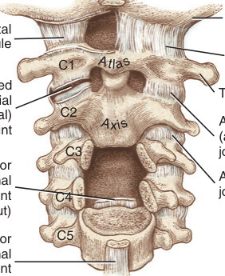
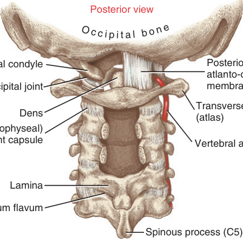
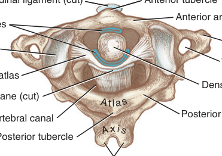
Có rất ít thông tin được công bố về chức năng của màng che. Tuy nhiên, dựa vào các điểm bám, dây chằng này nhiều khả năng cung cấp sự vững chắc tổng quát theo nhiều hướng cho điểm nối sọ–cổ (craniocervical junction).
Các dây chằng cánh là những dây xơ bền chắc, mỗi dây dài khoảng 1 cm. Như thể hiện trong Hình 9.44, mỗi dây chằng đi theo hướng bên và hơi hướng trên từ vùng sau–bên của phần trên mỏm nha đến mặt trong của lồi cầu chẩm. Được gọi trong lâm sàng là các “dây chằng chặn” (check ligaments), các dây chằng cánh được đánh giá cao nhờ khả năng cản trở, hay chặn lại, chuyển động xoay trục của tập hợp đầu–đốt đội so với mỏm nha. Cặp dây chằng này tương đối lỏng ở tư thế giải phẫu nhưng trở nên căng dần trong lúc xoay trục; dây chằng nằm bên đối diện với phía xoay sẽ tỏ ra cản trở chuyển động nhiều hơn. Ngoài việc hạn chế xoay trục, các dây chằng cánh nhiều khả năng còn hạn chế các mức cực đại của mọi chuyển động tiềm năng khác tại khớp chẩm–đốt đội.
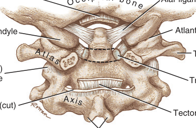
Các khớp mỏm khớp nội cổ (C2 đến C7) (Intracervical Apophyseal Joints, C2 to C7)
Các mặt khớp trong các khớp mỏm khớp từ C2 đến C7 được định hướng như những lớp ngói trên một mái nhà nghiêng 45 độ, gần như nằm ở giữa mặt phẳng trán và mặt phẳng ngang (xem khớp nối C2–C3 trong Hình 9.18). Định hướng này làm tăng mức độ tự do vận động trong cả ba mặt phẳng — một đặc trưng nổi bật của khớp học vùng cổ.
Vùng sọ–cổ là vùng vận động nhiều nhất trong toàn bộ cột sống. Các khớp được chuyên biệt hóa cao tạo điều kiện cho việc định vị đầu một cách chính xác, thường gắn liền với thị giác, thính giác, khứu giác và thăng bằng. Các khớp riêng lẻ trong vùng sọ–cổ bình thường tương tác với nhau theo cách được phối hợp cực kỳ nhịp nhàng. Bảng 9.7 liệt kê các biên độ vận động điển hình mà mỗi khu vực của vùng sọ–cổ đóng góp. Do mức dao động lớn và tính biến thiên của số liệu được trình bày trong các tài liệu, các giá trị thực tế liệt kê trong bảng này có ích hơn cho việc cảm nhận động học tương đối giữa các khớp, và kém hữu ích hơn như một chỉ dẫn khách quan nghiêm ngặt để đánh giá chuyển động ở bệnh nhân.
| Khớp hoặc vùng (Joint or Region) | Gập và duỗi (Mặt phẳng đứng dọc, độ) | Xoay trục (Mặt phẳng ngang, độ) | Nghiêng bên (Mặt phẳng trán, độ) |
|---|---|---|---|
| Khớp chẩm–đốt đội (Atlanto-occipital joint) | Gập: 5 Duỗi: 10 Tổng: 15 | Không đáng kể | Khoảng 5 |
| Phức hợp khớp đội–trục (Atlanto-axial joint complex) | Gập: 5 Duỗi: 10 Tổng: 15 | 35–40 | Không đáng kể |
| Vùng nội cổ (C2–C7) (Intracervical region, C2–C7) | Gập: 35–40 Duỗi: 55–60 Tổng: 90–100 | 30–35 | 30–35 |
| Tổng trên toàn vùng sọ–cổ (Total across craniocervical region) | Gập: 45–50 Duỗi: 75–80 Tổng: 120–130 | 65–75 | 35–40 |
*Vận động trên mặt phẳng ngang và mặt phẳng trán chỉ tính về một bên. Số liệu được tổng hợp từ nhiều nguồn (xem phần bài) và chịu mức biến thiên lớn giữa các cá thể.
Động học xương của gập và duỗi (Osteokinematics of Flexion and Extension)
Khoảng 120 đến 130 độ gập và duỗi kết hợp xảy ra trên toàn bộ vùng sọ–cổ. Xuất phát từ tư thế giải phẫu ở khoảng 30 đến 35 độ duỗi (tư thế cong sinh lý nghỉ — resting lordosis), vùng sọ–cổ duỗi thêm khoảng 75 đến 80 độ và gập 45 đến 50 độ (Hình 9.45 và Hình 9.46). Tuy biến thiên rất nhiều, phần lớn dữ liệu nghiên cứu chỉ ra rằng duỗi thường vượt trội hơn gập trên khắp vùng sọ–cổ, nhìn chung với tỷ lệ khoảng 1,5 so với 1.
Ngoài các cơ, các mô liên kết cũng hạn chế các mức cực đại của chuyển động vùng sọ–cổ. Chẳng hạn, dây chằng gáy (ligamentum nuchae) và các dây chằng liên gai (interspinous ligaments) tạo ra sự hạn chế đáng kể đối với các mức cực đại của gập, trong khi sự ép sát vào nhau của các khớp mỏm khớp hạn chế các mức cực đại của duỗi. Gập còn bị hạn chế bởi các lực nén từ bờ trước của vòng sợi, còn duỗi thì bị hạn chế bởi các lực nén từ bờ sau của vòng sợi. Các mô bổ sung hạn chế hoặc cản trở chuyển động mặt phẳng đứng dọc trên khắp vùng sọ–cổ được liệt kê trong Bảng 9.6.
Khoảng 20% đến 25% tổng chuyển động mặt phẳng đứng dọc tại vùng sọ–cổ xảy ra trên khớp chẩm–đốt đội và phức hợp khớp đội–trục, phần còn lại xảy ra trên các khớp mỏm khớp từ C2 đến C7. Trục xoay cho gập và duỗi được định hướng theo chiều trong–ngoài xuyên qua mỗi vùng khớp trong ba vùng: gần lồi cầu chẩm tại khớp chẩm–đốt đội, mỏm nha tại phức hợp khớp đội–trục, và các thân đốt sống hoặc các khớp liên thân đốt liền kề từ C2 đến C7.
Thể tích của ống đốt sống cổ lớn nhất ở tư thế gập tối đa và nhỏ nhất ở tư thế duỗi tối đa. Vì lý do này, người bị hẹp (stenosis, tức sự thu hẹp) ống đốt sống có thể dễ bị tổn thương tủy sống hơn trong các hoạt động duỗi hết biên độ. Các đợt chấn thương liên quan đến duỗi quá mức lặp đi lặp lại có thể dẫn đến bệnh tủy sống cổ (cervical myelopathy, từ gốc Hy Lạp myelo chỉ tủy sống và pathos chỉ sự đau khổ) cùng các khiếm khuyết thần kinh liên quan.
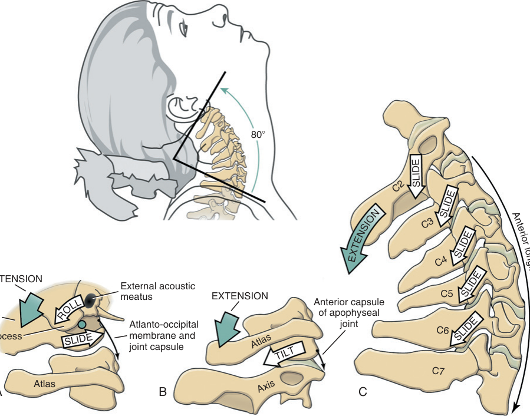
Động học khớp của gập và duỗi (Arthrokinematics of Flexion and Extension)
Khớp chẩm–đốt đội (Atlanto-Occipital Joint)
Giống như các con lắc dưới của một chiếc ghế bập bênh, các lồi cầu chẩm lồi cuộn về phía sau trong lúc duỗi và về phía trước trong lúc gập, bên trong các mặt khớp trên lõm của đốt đội. Dựa trên động học khớp kiểu lồi-trên-lõm (convex-on-concave) truyền thống, các lồi cầu được dự đoán sẽ đồng thời trượt nhẹ theo hướng ngược với chiều cuộn (xem Hình 9.45A và Hình 9.46A). Sức căng trong các bao khớp, các màng chẩm–đốt đội liên quan và các dây chằng cánh hạn chế phạm vi của các động học khớp này.
Phức hợp khớp đội–trục (Atlanto-Axial Joint Complex)
Mặc dù chuyển động chính tại phức hợp khớp đội–trục là xoay trục, cấu trúc khớp cho phép khoảng 15 độ gập và duỗi tổng cộng. Hoạt động như một miếng đệm giữa sọ và đốt trục, đốt đội hình vòng nghiêng về phía trước trong lúc gập và về phía sau trong lúc duỗi (xem Hình 9.45B và Hình 9.46B). Phạm vi của sự nghiêng này bị hạn chế một phần bởi sự tiếp xúc giữa dây chằng ngang của đốt đội với mỏm nha (ở gập tối đa) và giữa cung trước của đốt đội với mỏm nha (ở duỗi tối đa).
Các khớp nội cổ (C2 đến C7) (Intracervical Articulations, C2 to C7)
Gập và duỗi trên khắp các đốt sống C2 đến C7 xảy ra theo một cung tuân theo mặt phẳng nghiêng được thiết lập bởi các mặt khớp của các khớp mỏm khớp. Trong lúc duỗi, các mặt khớp dưới của các đốt sống phía trên trượt xuống dưới và về phía sau so với các mặt khớp trên của các đốt sống phía dưới (xem Hình 9.45C). Các chuyển động này tạo ra khoảng 55 đến 60 độ duỗi, kéo dãn chủ yếu bao khớp trước và bên của các khớp mỏm khớp. Ở tư thế duỗi tối đa, động học khớp trượt kết hợp xuống dưới và về phía sau này làm tập trung tải trọng lên phần dưới của các khớp mỏm khớp.
Nhìn chung, tư thế giải phẫu hoặc tư thế duỗi nhẹ của vùng cổ làm tăng diện tích tiếp xúc trong các khớp mỏm khớp. Vì lý do này, tư thế này thường được coi là tư thế khít (close-packed position) của các khớp mỏm khớp. Trên thực tế, tư thế giải phẫu hoặc duỗi nhẹ thường được coi là tư thế khít của mọi khớp mỏm khớp trên toàn bộ cột sống; gập vừa phải được coi là tư thế lỏng (tư thế lỏng hoặc mở — loose- hoặc open-packed position) của các khớp này. (Như đã mô tả đối với phần lớn các khớp hoạt dịch trong cơ thể, tư thế khít là một tư thế đặc biệt làm tăng diện tích tiếp xúc khớp và làm tăng sức căng trong các dây chằng bao khớp xung quanh. Bởi vì ít nhất một số sợi của các dây chằng bao khớp của khớp mỏm khớp trở nên căng dần ở hai bên của tư thế giải phẫu hoặc duỗi nhẹ, các khớp này là một ngoại lệ đối với quy luật chung này.)
Động học khớp của gập trên khắp vùng nội cổ xảy ra theo kiểu ngược lại với những gì đã mô tả cho duỗi. Các mặt khớp dưới của các đốt sống phía trên trượt hướng trên và hướng trước so với các mặt khớp trên của các đốt sống phía dưới. Như được minh họa trong Hình 9.46C, sự trượt giữa các mặt khớp tạo ra khoảng 35 đến 40 độ gập. Gập làm giãn tất cả các thành phần của bao khớp mỏm khớp và làm giảm diện tích tiếp xúc khớp.
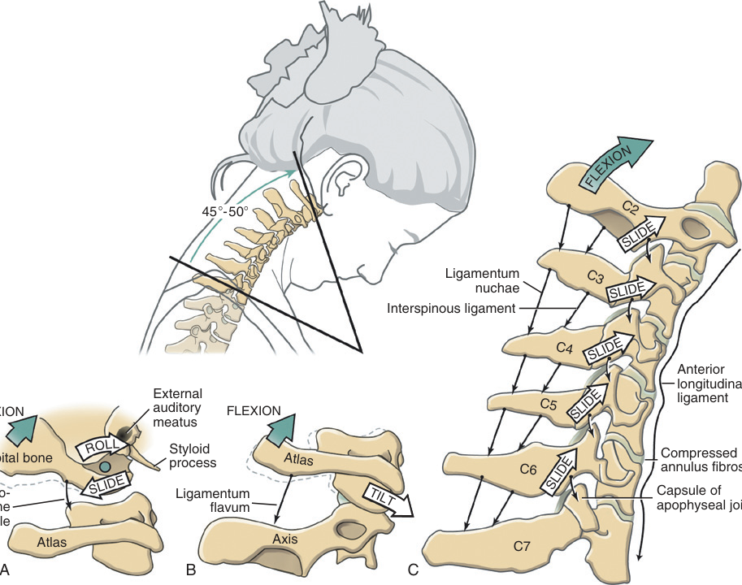
Nhìn chung, khoảng 90 đến 100 độ gập và duỗi cổ xảy ra là kết quả của sự trượt trong các mặt khớp của các khớp mỏm khớp cổ. Mức độ vận động rộng này một phần là do cung vận động tương đối dài và không bị cản trở mà mặt phẳng nghiêng của các mặt khớp tạo ra. Trung bình, khoảng 15 độ vận động trên mặt phẳng đứng dọc xảy ra tại mỗi điểm nối liên đốt sống giữa C2–C3 và C7–T1. Mức dịch chuyển góc lớn nhất trên mặt phẳng đứng dọc thường xảy ra ở mức C4–C5 hoặc C5–C6, có thể giải thích tỷ lệ tương đối cao của thoái hóa đốt sống (spondylosis) và các gãy xương liên quan đến gập quá mức tại mức này.
Động học xương của việc đưa sọ ra trước và kéo sọ về sau (Osteokinematics of Protraction and Retraction)
Ngoài gập và duỗi trong vùng sọ–cổ, đầu còn có thể dịch chuyển ra trước (đưa ra trước — protraction) và ra sau (kéo về sau — retraction) trên mặt phẳng đứng dọc. Như thể hiện trong Hình 9.47, tính từ vị trí nghỉ sinh lý, biên độ đưa ra trước đầy đủ tự nhiên lớn hơn biên độ kéo về sau đầy đủ khoảng 80% (6,23 cm so với 3,34 cm ở người trưởng thành bình thường, tương ứng). Vị trí nghỉ sinh lý thường nằm khoảng 35% về phía trước so với vị trí kéo về sau tối đa.
Điển hình, việc đưa đầu ra trước làm gập cột sống cổ dưới–giữa và đồng thời làm duỗi vùng sọ–cổ trên (xem Hình 9.47A). Ngược lại, việc kéo đầu về sau làm duỗi hoặc làm thẳng cột sống cổ dưới–giữa và đồng thời làm gập vùng sọ–cổ trên (xem Hình 9.47B). Trong cả hai vận động, cột sống cổ dưới–giữa đi theo sự dịch chuyển của đầu. Đưa đầu ra trước và kéo đầu về sau là những vận động bình thường về mặt sinh lý và hữu ích, thường gắn liền với việc cải thiện thị giác. Tuy nhiên, việc duy trì tư thế đưa đầu ra trước kéo dài có thể dẫn đến tư thế đầu về trước mạn tính, gây tăng mức căng lên các cơ duỗi sọ–cổ.
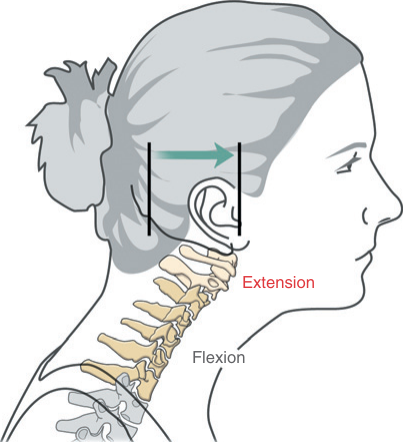
Động học xương của xoay trục (Osteokinematics of Axial Rotation)
Xoay trục của đầu và cổ là một chức năng rất quan trọng, có liên hệ mật thiết với thị giác, thính giác và cuối cùng là sự an toàn. Một nghiên cứu động học chức năng kỹ lưỡng của Cobian và cộng sự đã chỉ ra rằng việc lùi xe ô tô hay quan sát giao thông trước khi qua đường thường đòi hỏi 42–48% biên độ xoay trục tối đa của một người. Biên độ xoay trục đầy đủ của vùng sọ–cổ khoảng 65 đến 75 độ về mỗi bên, nhưng con số này thay đổi đáng kể theo tuổi. Ví dụ, trẻ em khỏe mạnh trong độ tuổi từ 3,5 đến 5 tuổi có trung bình 100 độ xoay bị động về mỗi bên. Hình 9.48 cho thấy một người trưởng thành trẻ với khoảng 80 độ xoay chủ động về một bên, tức tổng biên độ hai bên khoảng 160 độ. Cộng thêm 160 đến 170 độ vận động tổng trên mặt phẳng ngang của mắt, trường nhìn hai bên của cô ấy tiếp cận 330 độ, với rất ít hoặc không có vận động của thân.
Các nghiên cứu cho thấy khoảng 50–60% xoay trục của vùng sọ–cổ xảy ra tại phức hợp khớp đội–trục, phần còn lại phân bố khắp vùng C2 đến C7. Xoay trục tại khớp chẩm–đốt đội bị hạn chế chỉ còn vài độ do các lồi cầu chẩm nằm sâu trong các mặt khớp trên của đốt đội.
Động học khớp của xoay trục (Arthrokinematics of Axial Rotation)
Phức hợp khớp đội–trục (Atlanto-Axial Joint Complex)
Phức hợp khớp đội–trục được thiết kế để xoay tối đa trong mặt phẳng ngang. Thiết kế này thể hiện rõ nhất trong cấu trúc của đốt trục, với mỏm nha thẳng đứng và các mặt khớp trên gần như nằm ngang (xem Hình 9.32). Đốt đội hình vòng cùng dây chằng ngang gắn liền “xoay” quanh mỏm nha, tạo ra khoảng 35 đến 40 độ xoay trục về mỗi hướng (xem Hình 9.48A). Các mặt khớp dưới thường phẳng của đốt đội trượt theo một đường cong qua các “bờ vai” rộng của các mặt khớp trên của đốt trục. Do xoay trục tại khớp chẩm–đốt đội bị hạn chế, sọ theo sau sự xoay của đốt đội gần như từng độ một. Trục xoay của cụm đầu–đốt đội do mỏm nha chiếu thẳng đứng lên trên tạo nên.
Các giới hạn của xoay trục chủ yếu do các dây chằng cánh nằm ở phía đối bên, sự căng của các dây chằng trong các khớp mỏm khớp, và nhiều cơ băng qua vùng sọ–cổ gây ra (xem Chương 10). Xoay trục đầy đủ làm căng cả hai động mạch đốt sống (xem Hình 9.48A).
Các khớp nội cổ, C2 đến C7 (Intracervical Articulations, C2 to C7)
Xoay trục khắp vùng C2 đến C7 được dẫn hướng chủ yếu bởi định hướng không gian của các mặt khớp trong các khớp mỏm khớp. Các mặt khớp định hướng khoảng 45 độ giữa mặt phẳng ngang và mặt phẳng trán (xem Hình 9.32). Các mỏm khớp dưới trượt về sau và hơi xuống dưới ở cùng bên với chiều xoay, và về trước và hơi lên trên ở phía đối bên với chiều xoay (xem Hình 9.48B). Các động học khớp này tạo ra khoảng 30 đến 35 độ xoay trục về mỗi bên trên vùng C2 đến C7, gần bằng mức cho phép tại phức hợp khớp đội–trục. Xoay trục lớn nhất ở các đoạn đốt sống gần đầu hơn.
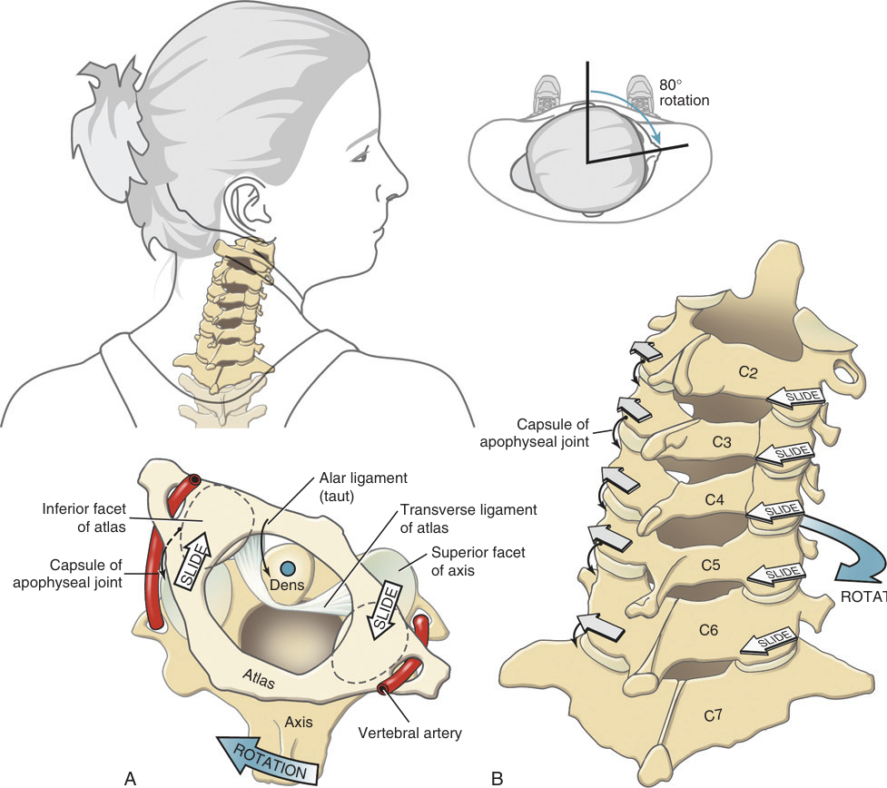
Động học xương của nghiêng bên (Osteokinematics of Lateral Flexion)
Khoảng 35 đến 40 độ nghiêng bên có thể thực hiện về mỗi bên khắp vùng sọ–cổ (Hình 9.49). Có thể minh họa các giới hạn của vận động này bằng cách cố đưa vành tai chạm đến mỏm vai. Phần lớn vận động này xảy ra tại vùng C2 đến C7; tuy nhiên, khoảng 5 độ có thể xảy ra tại khớp chẩm–đốt đội. Nghiêng bên tại phức hợp khớp đội–trục là không đáng kể.
Động học khớp của nghiêng bên (Arthrokinematics of Lateral Flexion)
Khớp chẩm–đốt đội (Atlanto-Occipital Joint)
Một lượng nhỏ lăn từ bên này sang bên kia của các lồi cầu chẩm xảy ra trên các mặt khớp trên của đốt đội. Dựa trên quan hệ lồi trên lõm của khớp, các lồi cầu chẩm được dự đoán sẽ trượt nhẹ theo hướng ngược với chiều lăn (xem Hình 9.49A).
Các khớp nội cổ, C2 đến C7 (Intracervical Articulations, C2 to C7)
Động học khớp của nghiêng bên tại các đoạn đốt sống C2 đến C7 được minh họa trong Hình 9.49B. Các mặt khớp dưới ở cùng bên với chiều nghiêng bên trượt xuống dưới và hơi về sau, và các mặt khớp dưới ở phía đối bên với chiều nghiêng bên trượt lên trên và hơi về trước.
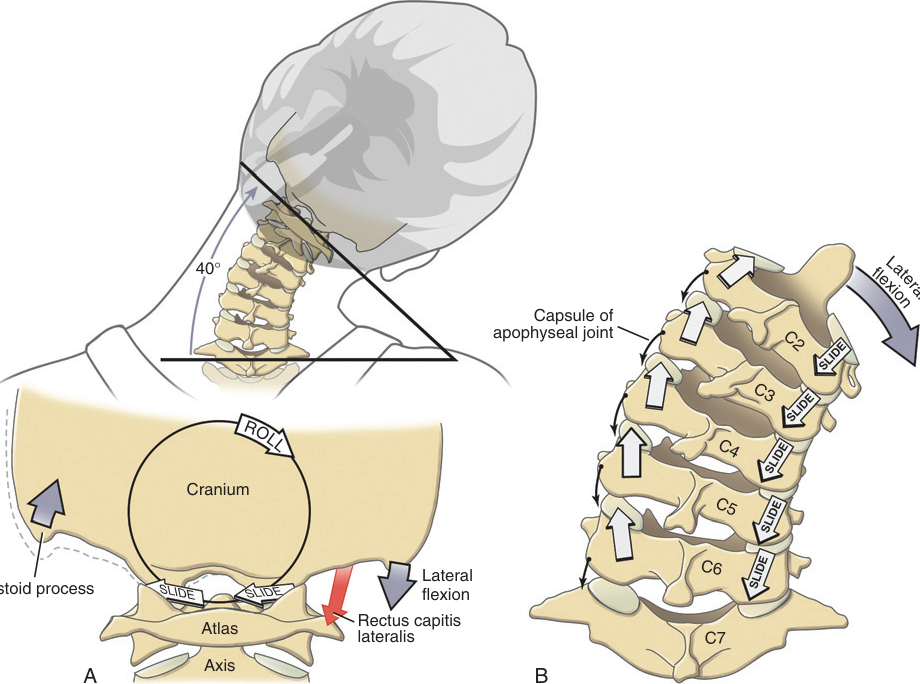
Sự kết cặp cột sống giữa nghiêng bên và xoay trục (Spinal Coupling Between Lateral Flexion and Axial Rotation)
Độ nghiêng khoảng 45 độ của các mặt khớp từ C2 đến C7 quy định một sự kết cặp cột sống mang tính cơ học giữa các vận động trên mặt phẳng trán và mặt phẳng ngang. Vì một đốt sống phía trên đi theo mặt phẳng của mặt khớp của đốt sống phía dưới, một thành phần nghiêng bên và một thành phần xoay trục xảy ra đồng thời. Vì lý do này, nghiêng bên và xoay trục ở vùng cổ giữa–dưới được kết cặp cơ học theo kiểu cùng bên; ví dụ, nghiêng bên sang phải xảy ra kèm xoay trục nhẹ sang phải, và ngược lại. Dù chỉ là suy đoán, các khớp không mỏm móc, chỉ nằm ở vùng giữa và dưới của cột sống cổ, có thể tạo điều kiện cho sự tự do của vận động kết cặp này trên mặt phẳng ngang và mặt phẳng trán.
Sự kết cặp cột sống cùng bên vừa được mô tả cho vùng sọ–cổ giữa–dưới là kiểu kết cặp được chấp nhận rộng rãi nhất và ít gây tranh cãi nhất trong toàn bộ cột sống. Mặc dù tồn tại một vài ngoại lệ, kiểu mẫu này đã được ghi nhận bằng các phép đo tinh vi. Tuy nhiên, khi quan sát trực quan thông thường, kiểu kết cặp này không hiện rõ như vậy. Phần lớn mọi người có vẻ nghiêng bên vùng sọ–cổ mà không có sự xoay trục bắt buộc của mặt (hoặc cằm) về phía nghiêng bên, hoặc ngược lại. Sự thiếu vẽ một kết cặp cùng bên có thể nhận biết được là nhờ các hoạt động độc lập của khớp đội–trục hoặc khớp chẩm–đốt đội. Hãy xét, chẳng hạn, trường hợp nghiêng bên vùng C2 đến C7 sang phải. Trong vận động chủ động này, khớp đội–trục thường thể hiện kiểu kết cặp cột sống đối bên bằng cách xoay nhẹ đốt đội cùng sọ sang trái, điều che giấu thực tế rằng vùng C2 đến C7 thực sự đã xoay sang phải. Hoạt động bù trừ này của khớp đội–trục giảm thiểu mức xoay tổng thể của đầu, giúp mắt giữ cố định vào một vật đứng yên trong lúc nghiêng bên cổ.
TẬP TRUNG ĐẶC BIỆT 9.5 — Vận động vùng cổ và ảnh hưởng của nó đến đường kính của lỗ liên đốt sống (Cervical Motion and Its Effect on the Diameter of the Intervertebral Foramina)
Vận động trong vùng cổ ảnh hưởng đáng kể đến kích thước của các lỗ liên đốt sống (intervertebral foramina). Sự khác biệt về kích thước có thể lớn, đặc biệt trong các vận động gập và duỗi. Vấn đề này có ý nghĩa lâm sàng quan trọng do vị trí của các chân dây thần kinh sống đi ra. Chụp cộng hưởng từ (MR) đã cho thấy, tính từ vị trí giải phẫu, 40 độ gập làm tăng diện tích của một lỗ liên đốt sống cổ thêm 31%; ngược lại, duỗi đến 30 độ làm giảm diện tích 20%. Có thể nhận thấy mối liên hệ cơ học giữa gập và sự tăng diện tích của lỗ liên đốt sống C3–C4 bằng cách so sánh vị trí giải phẫu (Hình 9.50A) với vị trí gập cực đoan, thể hiện trong Hình 9.50B. Trong lúc gập, sự trượt lên trên và về trước của mặt khớp dưới của C3 làm rộng đáng kể lỗ liên đốt sống C3–C4. Do đó, gập đầy đủ cho phép không gian rộng hơn cho chân dây thần kinh sống đi qua.
Ngoài vận động trên mặt phẳng đứng dọc, diện tích của các lỗ liên đốt sống cũng thay đổi về kích thước trong lúc nghiêng bên và xoay trục. Nghiêng bên làm tăng diện tích trong các lỗ liên đốt sống phía đối bên — một hệ quả hiển nhiên sau khi xem lại động học khớp của vận động này. Xoay trục cũng làm tăng diện tích trong các lỗ liên đốt sống phía đối bên tới 20% sau 40 độ xoay sọ–cổ.
Các cơ chế đã mô tả cho đến thời điểm này trong Tập Trung Đặc Biệt có ý nghĩa lâm sàng đặc biệt trong các trường hợp lỗ liên đốt sống bị hẹp (stenosed — thu hẹp), thứ phát do gai xương (osteophyte) hoặc do sự phù nề của vỏ bọc mô liên kết bao quanh chân dây thần kinh sống. Sự chèn ép lên chân dây thần kinh sống có thể dẫn đến bệnh lý rễ (radiculopathy) cùng bên (sự truyền dẫn các xung thần kinh vận động hoặc cảm giác bị thay đổi hoặc bị chặn). Nếu sự chèn ép gây viêm chân dây thần kinh sống, nó cũng có thể làm phát sinh đau rễ (radicular — đau “xẹt” xuống) dọc theo cánh tay của người bệnh, thường theo đường đi của vùng da (dermatome) cổ tương ứng. Theo cách tương tự, chèn ép chân thần kinh cũng có thể gây yếu các cơ thuộc vùng cơ (myotome) cổ tương ứng. Các phản ứng thần kinh này có thể được khởi phát hoặc làm trầm trọng hơn bởi vận động sọ–cổ. Hãy xét ví dụ một người có lỗ liên đốt sống hẹp nặng bên phải. Vận động có khả năng chèn ép chân thần kinh đi ra là duỗi đầy đủ, đặc biệt nếu kết hợp với các vận động kết cặp gồm nghiêng bên phải và xoay trục phải. Sự kết hợp các vận động này có thể xảy ra, chẳng hạn, khi một người đàn ông cạo râu dưới cằm phía bên trái của mình.
Kéo giãn (traction) cơ học hoặc thủ công vùng cổ thường được sử dụng nhằm làm giảm chèn ép cho một chân dây thần kinh sống bị chèn ép bởi lỗ liên đốt sống hẹp. Việc đặt vị trí cẩn thận vùng cổ kết hợp với kéo giãn về lý thuyết có thể làm rộng lỗ liên đốt sống. Điều này có thể đạt được bằng cách đặt cổ ở tư thế gập vừa phải, kết hợp với lượng nghiêng bên chịu được và, thường là, xoay trục ra xa phía bên nghi ngờ có bệnh lý.
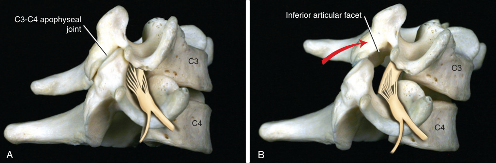
Vì những lý do tương tự như đã thảo luận trong đoạn trước, một kiểu kết cặp đối bên bù trừ thường cũng tồn tại tại các khớp chẩm–đốt đội. Sự kết cặp này giảm thiểu mọi mức nghiêng bên không mong muốn của đầu trong lúc xoay trục cổ. Các kiểu kết cặp đối bên thể hiện tại cả khớp đội–trục lẫn khớp chẩm–đốt đội được kiểm soát một cách vô thức bởi hoạt động của các cơ chuyên biệt (được đề cập thêm trong Chương 10). Sự căng của dây chằng cánh cũng có thể đóng vai trò dẫn hướng kiểu kết cặp đối bên này trong phức hợp đội–trục–chẩm–đốt đội (axial–atlanto-occipital complex). Hãy xét, chẳng hạn, xoay trục của vùng sọ–cổ trên sang phải. Sự căng chọn lọc của dây chằng cánh trái có thể kéo lồi cầu chẩm trái xuống dưới, gây nghiêng bên trái nhẹ của khớp chẩm–đốt đội.
Lồng ngực (thorax) gồm một khung sườn tương đối cứng được tạo thành bởi các xương sườn, các đốt sống ngực và xương ức. Độ cứng vững của vùng này mang lại (1) một nền tảng ổn định cho các cơ điều khiển vùng sọ–cổ, (2) một vùng che chở cho các tạng trong lồng ngực, và (3) một “cái bóp” cơ học phục vụ hô hấp (xem Chương 11).
Cột sống ngực có 24 khớp mỏm khớp, 12 khớp ở mỗi bên. Mỗi khớp sở hữu các mặt khớp nhìn chung hướng về mặt phẳng trán, với một độ dốc nghiêng về trước nhẹ, trung bình khoảng 15 đến 25 độ so với phương thẳng đứng (xem ví dụ T4 trong Hình 9.32). Tiềm năng vận động của các khớp mỏm khớp này bị hạn chế bởi tình trạng ít di động tương đối của các khớp sườn–thân đốt sống (costocorporeal joints) và khớp sườn–mỏm ngang (costotransverse joints) lân cận. Một cách gián tiếp, cặp khớp này nối về mặt cơ học phần lớn các đốt sống ngực ở phía trước với xương ức cố định.
Phần lớn các khớp sườn–thân đốt sống nối đầu sườn (head of the rib) với một cặp bán mặt khớp sườn (costal demifacets) nằm trên các thân đốt sống ngực và với bờ liền kề của đĩa đệm xen giữa (Hình 9.51). Các mặt khớp của các khớp sườn–thân đốt sống hơi có hình bầu dục, được giữ với nhau chủ yếu bởi các dây chằng bao khớp và dây chằng tỏa (radiate ligaments).
Các khớp sườn–mỏm ngang nối củ khớp của phần lớn các xương sườn với mặt khớp sườn (costal facet) nằm trên mỏm ngang của đốt sống ngực tương ứng. Một bao khớp bao quanh khớp hoạt dịch này. Dây chằng sườn–mỏm ngang (costotransverse ligament) rộng (dài gần 2 cm) neo chặt cổ sườn vào toàn bộ chiều dài của mỏm ngang tương ứng (xem Hình 9.51). Ngoài ra, mỗi khớp sườn–mỏm ngang còn được ổn định bởi một dây chằng sườn–mỏm ngang trên (superior costotransverse ligament). Dây chằng chắc chắn này bám giữa bờ trên của cổ một xương sườn và bờ dưới của mỏm ngang của đốt sống nằm phía trên (xem Hình 9.51A). Các xương sườn 11 và 12 thường thiếu các khớp sườn–mỏm ngang.
Do các xương sườn bám vào các đốt sống ngực, động học của lồng ngực và của các khớp sườn–thân đốt sống và khớp sườn–mỏm ngang gắn bó với nhau về mặt cơ học, mặc dù chủ đề nghiên cứu cụ thể này chưa được công bố rộng rãi. Văn bản này tập trung vào động học của các khớp sườn–thân đốt sống và khớp sườn–mỏm ngang trong quan hệ với thông khí, sẽ được mô tả trong Chương 11.
Một số khía cạnh giải phẫu then chốt của các khớp sườn–thân đốt sống và khớp sườn–mỏm ngang (Key Anatomic Aspects of the Costocorporeal and Costotransverse Joints)
Mỗi khớp sườn–thân đốt sống (Each costocorporeal joint)
Mỗi khớp sườn–mỏm ngang (Each costotransverse joint)
Trừ các khớp cùng–chậu, vùng ngực nhìn như một tổng thể thường là phần có tính ổn định cơ học nhất của cột sống. Phần lớn sự ổn định vốn có này được tạo ra nhờ các chỗ bám giữa các đốt sống ngực và lồng sườn (rib cage). Các thành tố của lồng sườn gồm các khớp sườn–thân đốt sống và khớp sườn–mỏm ngang, các xương sườn, các khớp sườn–ức (sternocostal joints) và xương ức. Thử nghiệm trên xác chết in vitro đã cho thấy lồng sườn (gồm cả xương ức) cung cấp từ 36% đến 78% tổng lực kháng bị động đối với biên độ vận động tối đa của vùng ngực. Mặc dù các nghiên cứu trên xác chết cung cấp dữ liệu quan trọng, chúng không tính đến các yếu tố bổ sung tồn tại ở người sống, chẳng hạn như việc chủ động tăng áp lực trong ổ bụng (qua động tác Valsalva) và hoạt hóa cơ liên sườn cùng các cơ thân khác. Tuy vậy, rõ ràng là sự hiện diện của một lồng sườn nguyên vẹn và ổn định bảo vệ cột sống ngực, bao gồm cả tủy sống. Chẳng hạn, trong một cú ngã, lực tác động lên cột sống ngực được lồng sườn cùng các cơ và mô liên kết liên quan hấp thụ và phân tán một phần. Bằng chứng cho điều này là tần suất tương đối cao của các gãy xương ức xảy ra đồng thời với các chấn thương cột sống ngực.
Khi một người trưởng thành đứng, vùng ngực điển hình biểu hiện khoảng 40–45 độ độ cong gù tự nhiên (kyphosis) (tham khảo Hình 9.39). Từ tư thế giải phẫu, vận động xảy ra trong cả ba mặt phẳng. Mặc dù phạm vi vận động tại mỗi điểm nối liên đốt sống ngực là tương đối nhỏ, vận động tích lũy là đáng kể khi biểu hiện trên toàn bộ cột sống ngực (Bảng 9.8). Hướng và mức độ vận động của vùng ngực trong bất kỳ mặt phẳng cho trước nào cũng chịu ảnh hưởng của một số yếu tố, gồm tư thế nghỉ của vùng, hướng cụ thể của các khớp mỏm khớp, tác dụng nẹp của lồng sườn, và chiều cao tương đối của các đĩa đệm. So với các vùng cổ và thắt lưng, vùng ngực có tỷ lệ chiều cao đĩa đệm trên thân đốt sống nhỏ nhất cho tới nay. Các đĩa đệm tương đối mỏng một cách tự nhiên giới hạn mức độ mà một thân đốt sống có thể xoay (hoặc lắc nghiêng) trên thân đốt sống khác trước khi bị chặn bởi sự nén vào xương, ít nhất là trên các mặt phẳng đứng dọc và trán. Mặc dù yếu tố này hạn chế hơi nhiều tính di động của vùng ngực, nó cung cấp một yếu tố khác góp phần vào sự ổn định tổng thể của vùng.
| Gập và duỗi (mặt phẳng đứng dọc, độ) | Xoay trục (mặt phẳng ngang, độ) | Nghiêng bên (mặt phẳng trán, độ) |
|---|---|---|
| Gập: 30–40; Duỗi: 15–20; Tổng: 45–60 | 25–35 | 25–30 |
Động học của gập và duỗi (Kinematics of Flexion and Extension)
Khoảng 30 đến 40 độ gập và 15 đến 20 độ duỗi điển hình có sẵn trên khắp vùng ngực. Các động học này được thể hiện trong bối cảnh gập và duỗi trên toàn vùng ngực–thắt lưng lần lượt trong Hình 9.52 và Hình 9.53. Các mức gập cực hạn bị giới hạn bởi lực căng trong các mô liên kết nằm phía sau các thân đốt sống, chẳng hạn bao khớp của các khớp mỏm khớp và các dây chằng trên gai và dọc sau. Ngược lại, các mức duỗi cực hạn bị giới hạn bởi lực căng trong dây chằng dọc trước và bởi khả năng va chạm giữa các mảnh cung hoặc giữa các mỏm gai dốc xuống liền kề, đặc biệt ở các đốt sống ngực trên và giữa. Mức độ gập và duỗi của vùng ngực lớn hơn ở các vùng cùng cực phía đuôi, phần lớn là do các xương sườn phía đuôi nhất “trôi nổi tự do” và sự chuyển sang hướng thiên về mặt phẳng đứng dọc hơn của các khớp mỏm khớp.
Động học của xoay trục (Kinematics of Axial Rotation)
Khoảng 25 đến 35 độ xoay trên mặt phẳng ngang (xoay trục) xảy ra về mỗi bên trên khắp vùng ngực. Vận động này được mô tả kết hợp với xoay trục trên toàn vùng ngực–thắt lưng trong Hình 9.54. Chẳng hạn, xoay giữa T6 và T7 xảy ra khi các mặt khớp dưới của T6 thẳng hàng gần với mặt phẳng trán trượt một đoạn ngắn trên các mặt khớp trên của T7 cũng thẳng hàng tương tự (xem Hình 9.54A). Mặc dù xoay cô lập này thực sự nhỏ và hầu như không thể nhận biết, động học xương tổng thể lại dễ dàng quan sát được khi cộng dồn trên toàn vùng ngực. Mức độ tự do của xoay trục này giảm dần ở phần dưới cột sống ngực. Ở vùng này, các khớp mỏm khớp được định hướng thẳng đứng hơn một chút khi chúng chuyển sang hướng thiên về mặt phẳng đứng dọc hơn.
Động học của nghiêng bên (Kinematics of Lateral Flexion)
Hướng thiên về mặt phẳng trán chi phối của các mặt khớp vùng ngực gợi ý một mức tự do tương đối cho nghiêng bên. Tuy nhiên, tiềm năng tự do vận động này không bao giờ được biểu hiện trọn vẹn do sự ổn định được cung cấp bởi các chỗ bám vào xương sườn. Nghiêng bên ở vùng ngực được minh họa trong bối cảnh nghiêng bên trên toàn vùng ngực–thắt lưng trong Hình 9.55. Khoảng 25 đến 30 độ nghiêng bên xảy ra về mỗi bên ở vùng ngực. Như được mô tả trong Hình 9.55A, nghiêng bên của T6 trên T7 xảy ra khi mặt khớp dưới của T6 trượt lên trên ở bên đối bên với chuyển động nghiêng bên và trượt xuống dưới ở bên đồng bên với chuyển động nghiêng bên. Lưu ý rằng các xương sườn hạ xuống nhẹ ở bên của chuyển động nghiêng bên và nâng lên nhẹ ở bên đối diện với chuyển động nghiêng bên.
Vùng L1–L4 (L1–L4 Region)
Các mặt khớp của phần lớn các khớp mỏm khớp thắt lưng được định hướng gần như thẳng đứng, với thiên hướng từ mức vừa đến mạnh về mặt phẳng đứng dọc (Hình 9.56). Chẳng hạn, hướng của mặt khớp trên của L2 trung bình khoảng 25 độ so với mặt phẳng đứng dọc (xem Hình 9.32). Hướng này ưu tiên vận động trên mặt phẳng đứng dọc với cái giá là sự xoay trên mặt phẳng ngang.
Điểm nối L5–S1 (L5–S1 Junction)
Giống như bất kỳ điểm nối liên đốt sống điển hình nào, điểm nối L5–S1 có một khớp giữa các thân đốt sống ở phía trước và một cặp khớp mỏm khớp ở phía sau. Các mặt khớp của các khớp mỏm khớp L5–S1 thường được định hướng trên một mặt phẳng trán nhiều hơn so với các vùng thắt lưng khác (xem Hình 9.56).
Tại hoặc gần điểm nối ngực–thắt lưng, các mặt khớp của các khớp mỏm khớp thay đổi hướng của chúng khá đột ngột, từ gần mặt phẳng trán sang gần mặt phẳng đứng dọc. Điểm chính xác của sự chuyển tiếp này là biến đổi, thường bắt đầu từ một hoặc hai điểm nối phía sọ hơn, như thể hiện ở mẫu xương minh họa trong Hình 9.56. Sự chuyển tiếp tương đối sắc nét từ mặt phẳng trán sang mặt phẳng đứng dọc này trong hướng khớp mỏm khớp có thể tạo ra tình trạng tăng động trên mặt phẳng đứng dọc và bất ổn cơ học ở vùng này. Điều này thể hiện rõ trong Hình 9.57 khi một bé trai mắc bại não (cerebral palsy) cố gắng tự chống đỡ trên hai đầu gối. Việc thiếu kiểm soát và sự yếu của các cơ thân cho phép điểm nối ngực–thắt lưng sụp đổ vào mặt phẳng có kháng lực xương thấp nhất — trong trường hợp này là vào một mức duỗi quá mức (hyperextension) rõ rệt của vùng ngực–thắt lưng. Sự sụp đổ này tạo ra một chứng ưỡn quá mức (hyperlordosis) nặng ở vùng này.
Là một ví dụ lâm sàng thứ hai, sự chuyển tiếp sắc nét từ mặt phẳng trán sang mặt phẳng đứng dọc của các khớp mỏm khớp vừa nêu có thể giải thích một phần tỷ lệ tương đối cao của tình trạng liệt hai chi dưới do chấn thương (traumatic paraplegia) tại điểm nối ngực–thắt lưng. Trong một số tai nạn có lực tác động lớn kèm theo gập thân, lồng ngực — vốn được lồng sườn giữ tương đối cứng — có thể tự do gập một cách dữ dội như một khối toàn vẹn trên vùng thắt lưng trên. Một mô-men gập lớn truyền vào lồng ngực có thể tập trung một ứng suất gập quá mức tại điểm chuyển tiếp. Nếu đủ nặng, ứng suất này có thể làm gãy hoặc trật các thành tố xương và có khả năng làm tổn thương đầu phía đuôi của tủy sống hoặc đuôi ngựa (cauda equina). Các dụng cụ cố định bằng phẫu thuật được cài vào để bất động một điểm nối ngực–thắt lưng không ổn định đặc biệt dễ bị hỏng do ứng suất, so với các dụng cụ được cài vào các vùng khác của cột sống.
Phần đáy (phía trên) của xương cùng tự nhiên nghiêng về trước và xuống dưới, tạo thành một góc cùng–ngang (sacrohorizontal angle) xấp xỉ 40 độ khi đứng (Hình 9.58A). Với góc này, hợp lực do trọng lượng cơ thể (BW) tạo ra sinh ra một lực cắt trước (BWS) và một lực nén (BWC) tác dụng vuông góc với mặt trên của xương cùng. Độ lớn của lực cắt trước bằng tích của BW nhân với sin của góc cùng–ngang. Một góc cùng–ngang điển hình bằng 40 độ tạo ra một lực cắt trước tại điểm nối L5–S1 bằng 64% trọng lượng cơ thể đè lên trên. Việc tăng mức độ ưỡn thắt lưng (lumbar lordosis) làm nới rộng góc cùng–ngang, về hiệu quả làm tăng lực cắt trước tại điểm nối L5–S1. Chẳng hạn, nếu góc cùng–ngang được tăng lên 55 độ, lực cắt trước sẽ tăng lên 82% trọng lượng cơ thể đè lên trên. Khi đứng hoặc ngồi, độ ưỡn thắt lưng có thể được tăng lên đúng lượng này bằng cách nghiêng khung chậu về trước (xem Hình 9.63A).
TẬP TRUNG ĐẶC BIỆT 9.6 — Một số hàm ý lâm sàng liên quan đến điểm nối ngực–thắt lưng (Some Clinical Implications Regarding the Thoracolumbar Junction)
Trượt đốt sống trước (anterior spondylolisthesis) là một thuật ngữ chung mô tả sự trượt hoặc dịch chuyển về trước của một đốt sống so với đốt sống khác. Tình trạng này thường xảy ra tại điểm nối L5–S1, như được minh họa trong Hình 9.59, nhưng cũng có thể xảy ra ở các vùng khác của cột sống thắt lưng, nổi bật nhất là L4–L5. Thuật ngữ spondylolisthesis bắt nguồn từ tiếng Hy Lạp spondylo, nghĩa là đốt sống, và listhesis, nghĩa là trượt. Tình trạng này có thể mắc phải sau khi chịu ứng suất quá mức hoặc bệnh lý, hoặc có thể là bẩm sinh. Thường gặp nhất, trượt đốt sống trước ở vùng thắt lưng dưới đi kèm với một gãy (hoặc khuyết thiếu) hai bên xuyên qua phần khớp (pars articularis) — một đoạn của đốt sống thắt lưng nằm giữa các mỏm khớp trên và mỏm khớp dưới (xem Hình 9.27). Dạng mắc phải của trượt đốt sống trước tại L5 và S1 có thể tiến triển, trong một số trường hợp là do các hoạt động thể chất lặp đi lặp lại đòi hỏi sự duỗi đầy đủ và mạnh mẽ của vùng. Các trường hợp nặng của trượt đốt sống trước có thể làm tổn thương đuôi ngựa, khi bó dây thần kinh này đi ngang qua điểm nối L5–S1.
Như đã mô tả cho Hình 9.58A, sự tăng độ ưỡn thắt lưng làm tăng góc cùng–ngang bình thường, qua đó làm tăng lực cắt trước giữa L5 và S1. Do đó, các bài tập hoặc các hành động khác tạo ra sự duỗi đầy đủ và mạnh mẽ của cột sống thắt lưng dưới được chống chỉ định cho những người bị trượt đốt sống trước, đặc biệt nếu tình trạng này không ổn định hoặc đang tiến triển. Như được thể hiện trong Hình 9.58B, véc-tơ lực của cơ dựng sống (erector spinae) đi qua L5–S1 (ES/5-1) tạo ra một lực cắt trước (ES/5-1S) song song với mặt trên của thân xương cùng. Hướng của lực cắt này là một hàm của hướng các thớ cơ dựng sống lân cận và góc cùng–ngang 40 độ. Về lý thuyết, một lực cơ lớn hơn làm tăng lực cắt trước tại điểm nối L5–S1, nhất là khi hoạt hóa cơ làm trầm trọng thêm độ ưỡn.
TẬP TRUNG ĐẶC BIỆT 9.7 — Trượt Đốt Sống Về Trước Ở Mức L5–S1 (Anterior Spondylolisthesis at L5–S1)
(Việc nghiêng khung chậu được định nghĩa là một xoay quãng ngắn của khung chậu trong mặt phẳng đứng dọc, tính so với cả hai đầu xương đùi. Hướng của độ nghiêng được chỉ ra bằng hướng xoay của các mào chậu.)
Một số cấu trúc cản lại lực trượt về trước tự nhiên sinh ra tại mối nối L5–S1. Các cấu trúc này gồm đĩa đệm liên đốt sống nằm giữa, bao khớp của các khớp mỏm khớp, dây chằng dọc trước rộng và chắc, và các dây chằng thắt lưng–chậu (iliolumbar ligaments). Dây chằng thắt lưng–chậu bắt nguồn từ mặt dưới của các mỏm ngang L4–L5 và các sợi kề cận của cơ vuông thắt lưng (quadratus lumborum). Dây chằng bám phía dưới vào xương chậu, ngay trước khớp cùng–chậu, và vào mặt trên–bên của xương cùng (xem Hình 9.70). Ở cả hai bên, các dây chằng thắt lưng–chậu tạo ra một điểm neo vững chắc giữa các mỏm ngang L5 vốn dĩ đã chắc khỏe và xương chậu cùng xương cùng nằm bên dưới.
Ngoài các mô liên kết nêu trên, các mặt khớp rộng và vững chắc của các khớp mỏm khớp L5–S1 còn cung cấp sự ổn định bằng xương cho mối nối L5–S1. Độ nghiêng gần mặt phẳng trán của các mặt khớp là lý tưởng để cản lại lực trượt về trước ở vùng này. Sự cản trở này tạo ra một lực nén bên trong các khớp mỏm khớp L5–S1 (xem vectơ lực màu xanh trong Hình 9.58A, ký hiệu JF). Nếu thiếu sự ổn định đầy đủ, đầu dưới của vùng thắt lưng có thể trượt về phía trước so với xương cùng. Tình trạng bất thường, tiềm ẩn nghiêm trọng này được gọi là trượt đốt sống về trước (anterior spondylolisthesis).
Động học (Kinematics)
Khi một người trưởng thành khỏe mạnh đứng, cột sống thắt lưng thường biểu hiện khoảng 40 đến 50 độ ưỡn, dù những khoảng rộng hơn cũng đã được báo cáo, tùy theo các hệ thống đo lường và quần thể được nghiên cứu khác nhau. Từ vị trí trung giải phẫu này, cột sống thắt lưng có thể vận động trong ba bậc tự do. Số liệu về tầm vận động thắt lưng biến thiên rất nhiều giữa các nghiên cứu và các quần thể; các giá trị điển hình được liệt kê trong Bảng 9.9. Các phần sau tập trung vào động học của từng mặt phẳng vận động trong vùng thắt lưng.
| Gập và duỗi (Mặt phẳng đứng dọc, độ) | Xoay trục (Mặt phẳng ngang, độ) | Nghiêng bên (Mặt phẳng trán, độ) |
|---|---|---|
| Gập: 45–55 Duỗi: 15–25 Tổng: 60–80 | 5–7 | 20 |
Động học mặt phẳng đứng dọc: Gập và duỗi (Sagittal Plane Kinematics: Flexion and Extension)
Trung bình, cột sống thắt lưng người trưởng thành thường có khoảng 45 đến 55 độ gập và 15 đến 25 độ duỗi. Tổng cung vận động 60 đến 80 độ trên mặt phẳng đứng dọc là rất đáng kể, xét rằng nó diễn ra chỉ qua năm mối nối liên đốt sống. Sự trội lên của vận động mặt phẳng đứng dọc phần lớn là kết quả của định hướng chủ đạo trên mặt phẳng đứng dọc của các mặt khớp ở các khớp mỏm khớp thắt lưng.
Nhiều hoạt động quan trọng và thường gặp trong đời sống hằng ngày liên quan đến một kiểu “gập lại” của phần giữa cơ thể. Hãy nghĩ đến, ví dụ, hành động cúi về trước để nhặt một vật trên nền đất, đi tất, mặc quần, leo những bậc thang dốc, hoặc bước ra khỏi ô tô; cũng hãy nghĩ đến một đứa trẻ nhỏ chuyển giữa tư thế bò và ngồi. Tất cả các hoạt động này đều bao gồm một tương tác động học giữa thân mình và cột sống thắt lưng, và giữa khung chậu với các xương đùi (khớp hang). Như sẽ được mô tả sau trong chương này, tương tác động học này tồn tại cho tới tận vùng sọ–cổ phía sọ.
Phần tiếp theo của chương tập trung vào một số tiểu đề mục thuộc chủ đề rộng về động học mặt phẳng đứng dọc của cột sống thắt lưng. Hộp 9.2 liệt kê thứ tự của các tiểu đề mục này.
HỘP 9.2 — Thứ Tự Các Tiểu Đề Mục Liên Quan Đến Động Học Mặt Phẳng Đứng Dọc Tại Vùng Thắt Lưng
Gập vùng thắt lưng (Flexion of the Lumbar Region)
Hình 9.52B cho thấy động học của việc gập vùng thắt lưng trong bối cảnh gập của thân mình và khớp hang. Gập chậu trên xương đùi (khớp hang) làm tăng sức căng thụ động trong các cơ bị kéo giãn, chẳng hạn nhóm gân kheo. Với đầu dưới của cột sống được cố định bởi các khớp cùng–chậu, việc gập tiếp vùng thắt lưng giữa và trên sẽ đảo ngược độ ưỡn tự nhiên của vùng thắt lưng dưới.
Chẳng hạn, khi gập giữa L3 và L4, các mặt khớp dưới của L3 trượt lên trên và về phía trước, khoảng 5 mm so với các mặt khớp trên của L4. Khi xét tổng hợp các động học này trên toàn vùng thắt lưng, các lực nén giữa các đốt sống dịch chuyển ra khỏi các khớp mỏm khớp (vốn thường gánh khoảng 20% tổng tải trọng cột sống khi đứng thẳng) và dịch về phía các đĩa đệm và thân đốt sống. Phía trước bị nén của các đĩa đệm và các dây chằng phía sau bị kéo giãn gánh phần lớn hơn của tổng tải trọng khi thân mình được gập dần. Ở mức gập cực độ, các bao khớp đã kéo giãn hoàn toàn của các khớp mỏm khớp giữ cho đốt sống trên không trượt tiếp về phía trước. Các dây chằng bao khớp của các khớp mỏm khớp rất chắc, có thể chịu tới 1000 N (225 pound) sức căng trước khi hỏng.
Tư thế gập cực độ làm giảm đáng kể diện tích tiếp xúc bên trong các khớp mỏm khớp. Nghịch lý thay, dù một cột sống thắt lưng gập hoàn toàn làm giảm tổng tải trên một khớp mỏm khớp cho trước, áp lực tiếp xúc (lực trên một đơn vị diện tích) vẫn có thể thực sự tăng lên do diện tích bề mặt phân tán tải trọng bị thu hẹp. Tuy nhiên, mức tăng tuyệt đối của áp lực tiếp xúc có quá cao hay không còn tùy vào tổng độ lớn của các lực đang tác động lên khớp đang gập. Sự hoạt hóa mạnh của các cơ thân mình trong tư thế gập có thể đẩy áp lực tiếp xúc lên rất cao. Áp lực vượt mức quá cao có thể gây tổn thương các khớp mỏm khớp đang gập, nhất là khi tình trạng này được duy trì trong thời gian dài hoặc khi các mặt khớp có hình dạng bất thường.
Mức gập của cột sống thắt lưng ảnh hưởng đến kích thước của lỗ liên đốt sống (intervertebral foramina) và ống đốt sống, cũng như khả năng làm biến dạng nhân nhầy. So với tư thế giải phẫu, gập làm tăng đường kính của lỗ liên đốt sống 19%. Vì vậy gập thắt lưng có thể được dùng trong trị liệu như một cách tạm thời giảm áp lực lên một gốc thần kinh tủy sống thắt lưng bị chèn ép bởi một lỗ liên đốt bị tắc nghẽn. Tuy nhiên, trong một số hoàn cảnh, lợi thế trị liệu tiềm năng này có thể đi kèm một bất lợi trị liệu tiềm năng. Chẳng hạn, gập vùng thắt lưng quá mức hoặc kéo dài tạo ra lực nén tăng lên ở phía trước đĩa đệm, cuối cùng làm biến dạng nhân nhầy dạng gel về phía sau. Ở cột sống khỏe, mức độ biến dạng về sau này nhỏ và thường không có hệ quả gì. Sự dịch chuyển đáng kể của chất nhân có thể được tự nhiên cản lại bằng sức căng tăng lên ở phía sau vòng sợi bị kéo giãn. Tuy nhiên, một đĩa đệm có vòng sợi phía sau yếu, nứt hoặc giãn căng có thể trải qua sự dịch chuyển (hoặc rò rỉ) về phía sau của nhân nhầy. Trong một số trường hợp, chất nhân có thể chèn vào tủy sống hoặc các gốc thần kinh (Hình 9.60). Suy giảm có khả năng gây đau này thường được gọi là đĩa đệm thoát vị hay đĩa đệm sa, hoặc hình thức hơn là thoát vị nhân nhầy (herniated nucleus pulposus). Người có đĩa đệm thoát vị có thể cảm nhận đau dữ dội hoặc thay đổi cảm giác, yếu cơ, và giảm phản xạ ở chi dưới, phù hợp với sự phân bố vận động và cảm giác cụ thể của gốc thần kinh bị chèn ép.
Duỗi vùng thắt lưng (Extension of the Lumbar Region)
Duỗi vùng thắt lưng về bản chất là động học ngược lại với gập, và nó làm tăng độ ưỡn tự nhiên (xem Hình 9.53). Khi duỗi thắt lưng được kết hợp với duỗi khớp hang hết tầm, sức căng thụ động tăng lên trong các cơ gập và các dây chằng bao khớp của khớp hang bị kéo giãn sẽ thúc đẩy thêm độ ưỡn thắt lưng bằng cách tạo ra một lực nghiêng khung chậu về phía trước. Chẳng hạn, duỗi giữa L3 và L4 xảy ra khi các mặt khớp dưới của L3 trượt xuống dưới và hơi về phía sau so với các mặt khớp trên của L4.
Từ một tư thế gập, chuyển về tư thế giải phẫu hoặc hơi duỗi làm tăng diện tích tiếp xúc bên trong các khớp mỏm khớp, đúng lúc các khớp này thường đang gánh một phần trăm trọng lượng cơ thể lớn hơn. Tình huống này có thể giới hạn áp lực tiếp xúc bên trong các khớp. Kịch bản bảo vệ này, tuy nhiên, không áp dụng cho các giới hạn sinh lý của duỗi thắt lưng. Ở duỗi thắt lưng hoàn toàn, các chóp của các mặt khớp dưới (của một đốt sống phía trên) trượt xuống dưới vượt quá mặt khớp của các mặt khớp trên của đốt sống bên dưới. Do đó áp lực tiếp xúc có thể rất cao ở cột sống thắt lưng duỗi quá, khi các chóp tương đối “nhọn” của mặt khớp dưới tiếp xúc với vùng mảnh cung kề cận. Vì lý do này, một tư thế mạn tính ưỡn quá thắt lưng có thể đặt một áp suất lớn và có khả năng gây hại lên các khớp mỏm khớp và các vùng kề cận. Hơn nữa, duỗi quá thắt lưng có thể nén các dây chằng liên gai, có thể tạo ra một nguồn đau thắt lưng.
Giống như gập, duỗi cột sống thắt lưng ảnh hưởng đến kích thước của lỗ liên đốt sống và ống đốt sống, cũng như khả năng làm biến dạng nhân nhầy. So với tư thế giải phẫu, duỗi thắt lưng hoàn toàn làm giảm đường kính của lỗ liên đốt sống 11%. Vì lý do này, một người bị chèn ép gốc thần kinh do hẹp lỗ liên đốt sống (hoặc ống đốt sống) có thể được khuyên hạn chế các hoạt động đòi hỏi duỗi hoàn toàn, hết tầm, nhất là nếu chúng gây yếu hoặc thay đổi cảm giác ở chi. Tuy nhiên, duỗi hoàn toàn cũng có xu hướng làm biến dạng nhân nhầy về phía trước, từ đó có thể giới hạn kiểu dịch chuyển về phía sau phổ biến hơn của nhân. Duỗi thắt lưng hoàn toàn và kéo dài đã được chứng minh là làm giảm áp lực bên trong đĩa đệm và, trong một số trường hợp, giảm áp lực tiếp xúc giữa chất nhân bị dịch chuyển và các mô thần kinh. Bằng chứng của trường hợp sau thường được mô tả là hiện tượng “tập trung về trung tâm” (centralization) của các triệu chứng, nghĩa là đau hoặc thay đổi cảm giác (trước đó được cảm nhận ở chi dưới do chèn ép gốc thần kinh) dịch chuyển về phía thắt lưng. Do đó centralization gợi ý rằng áp lực tiếp xúc giữa chất nhân bị dịch chuyển và một gốc thần kinh đã giảm. Dù chưa chắc chắn, áp lực tiếp xúc giảm sau khi duỗi hoàn toàn kéo dài có thể xảy ra vì chất nhân bị đẩy về phía trước và ra xa các mô thần kinh, vì các mô thần kinh bị kéo về phía sau và ra xa chất nhân, hoặc cả hai. Duỗi hoàn toàn vùng thắt lưng (cùng với các khớp hang) cũng có thể một phần dỡ tải hoặc nới lỏng các mô thần kinh tại chỗ và kề cận, nhờ đó giảm cường độ đau nguồn gốc thần kinh. Việc đề cao các bài tập và tư thế duỗi thắt lưng như một cách giảm đau lan tỏa và bệnh lý gốc thần kinh từ một thoát vị nhân nhầy phía sau được Robin McKenzie phổ biến, và các bài tập này được biết đến rộng rãi với tên “bài tập McKenzie”. Các cách tiếp cận trị liệu nhấn mạnh duỗi chủ động và thụ động kéo dài đã được chứng minh là mang lại các mức độ khác nhau về giảm triệu chứng và cải thiện chức năng ở những người có thoát vị đĩa đệm phía sau hoặc sau-bên đã được biết rõ. Tuy nhiên, cách tiếp cận đơn lẻ này có thể không có lợi cho mọi người có đĩa đệm thoát vị. Chẳng hạn, hãy xét một người có đĩa đệm ở mức L5/S1 thoát vị cấp tính, hoàn toàn và tách rời, nén vào gốc thần kinh S1 trong ống đốt sống. Vì duỗi hoàn toàn cột sống thắt lưng làm giảm nhẹ kích thước của ống đốt sống, vận động này có thể nén thêm vào gốc thần kinh S1 đang viêm và phù nề, từ đó làm tăng đau lan tỏa xuống chân.
Nhịp thắt lưng–chậu khi gập và duỗi thân (Lumbopelvic Rhythm during Trunk Flexion and Extension)
Phối hợp với các khớp hang, cột sống thắt lưng cung cấp điểm trục gập–duỗi trung tâm cho toàn bộ cơ thể con người. Xét theo khía cạnh này, hãy nghĩ đến các hoạt động như gập và duỗi hoàn toàn thân mình từ tư thế đứng. Mối quan hệ động học giữa cột sống thắt lưng và các khớp hang trong những vận động mặt phẳng đứng dọc ấy đã được gọi là nhịp thắt lưng–chậu (lumbopelvic rhythm). (Một phép so sánh lỏng lẻo của khái niệm này tồn tại cho vai và đã được mô tả là nhịp vai–cánh tay trong Chương 5.) Chú ý đến nhịp thắt lưng–chậu và các kiểu hoạt hóa tương đối của các cơ duỗi có thể cung cấp manh mối để phát hiện các tương tác cơ–khớp bất thường và các rối loạn chức năng vận động liên quan trong vùng. Những manh mối này có thể cung cấp hiểu biết quý giá cho việc điều trị hiệu quả các cơ bệnh học nền tảng.
Các biến thể của nhịp thắt lưng–chậu khi gập thân từ tư thế đứng: một phân tích động học (Variations of Lumbopelvic Rhythms during Trunk Flexion from a Standing Position: A Kinematic Analysis)
Xét hành động phổ biến là cúi người về phía nền đất trong khi giữ đầu gối gần thẳng. Dù biến thiên giữa các cá nhân, ở người trưởng thành khỏe mạnh vận động này xảy ra nhờ khoảng 45 độ gập thắt lưng được thực hiện gần như đồng thời với khoảng 60 độ gập khớp hang (chậu trên xương đùi) (Hình 9.61A). (Có thể đáng lưu ý rằng các giá trị này tương ứng với khoảng 50% tổng mức gập khớp hang thường được cho phép, nhưng khoảng 90% tổng mức gập thắt lưng thường được cho phép.) Với đa số người, gập thắt lưng xảy ra nhiều hơn một chút trong 25% đầu của động tác cúi, trong khi gập khớp hang xảy ra nhiều hơn một chút trong 25% cuối. Dù các chiến lược động học khác rất có thể xảy ra, những kiểu lệch đáng kể khỏi các mô típ động học điển hình này có thể giúp phân biệt bệnh lý hoặc suy giảm ảnh hưởng cột sống dưới với những cái ảnh hưởng khớp hang.
Nhịp thắt lưng–chậu khi duỗi thân từ tư thế cúi về trước: một phân tích cơ (Lumbopelvic Rhythm during Trunk Extension from a Forward Bent Position: A Muscular Analysis)
Một nhịp thắt lưng–chậu điển hình dùng để duỗi thân từ tư thế cúi về trước được mô tả qua một chuỗi các pha liên tiếp cho một người khỏe mạnh trong Hình 9.62A–C. Dù duỗi thắt lưng và duỗi khớp hang xảy ra đồng thời trong suốt chuyển động, bình thường pha đầu bị chi phối bởi duỗi khớp hang nhiều hơn, kèm hoạt hóa của các cơ duỗi khớp hang (xem Hình 9.62A). Hoạt hóa đáng kể của các cơ duỗi thắt lưng thường được trì hoãn một chút cho tới pha giữa (xem Hình 9.62B). Sự trì hoãn ngắn của duỗi thắt lưng đặt nhu cầu mô men duỗi lớn hơn lên các cơ duỗi khớp hang mạnh mẽ (như nhóm gân kheo và cơ mông lớn) đúng vào lúc mô men gập ngoại sinh lên vùng thắt lưng lớn nhất (xem tay đòn ngoại sinh được vẽ như một đường đen đậm trong Hình 9.62A). Đây có thể là một chiến lược có lợi để tự nhiên bảo vệ các cơ thắt lưng và các khớp nền tảng khỏi các lực lớn. Trong kịch bản này, yêu cầu lên các cơ duỗi thắt lưng chỉ tăng sau khi thân mình đã được nâng đủ cao và tay đòn ngoại sinh, tính theo trọng lượng cơ thể, đã được tối thiểu hóa (xem Hình 9.62B). Những người đau thắt lưng hoặc có các tình trạng thoái hóa sẵn của thắt lưng có thể chủ ý trì hoãn thêm hoạt hóa mạnh của các cơ duỗi thắt lưng cho tới khi thân mình gần thẳng đứng hơn. Khi đứng thẳng hoàn toàn, các cơ khớp hang và lưng thường tương đối không hoạt động, miễn là vectơ lực do trọng lượng cơ thể sinh ra đi qua hoặc nằm sau các khớp hang (xem Hình 9.62C).
Hình 9.61B–C cho thấy các nhịp thắt lưng–chậu bất thường liên quan đến sự hạn chế rõ rệt về di động ở khớp hang (B) hoặc vùng thắt lưng (C). Trong cả hai phần B và C, lượng gập thân tổng thể bị giảm. Nếu cần gập nhiều hơn, khớp hang hoặc vùng thắt lưng có thể bù trừ lẫn nhau cho sự hạn chế di động của bên kia. Tình huống này có thể làm tăng ứng suất lên vùng bù trừ. Như được mô tả trong Hình 9.61B, với gập khớp hang bị hạn chế, ví dụ do độ giãn của nhóm gân kheo bị giới hạn hoặc thoái hóa khớp hang, việc cúi thân về phía nền đòi hỏi gập nhiều hơn ở các vùng cột sống thắt lưng và ngực dưới. Về lâu dài, gập quá mức có thể kéo giãn quá mức và sau đó làm yếu các mô liên kết phía sau trong vùng (gồm cả mạc ngực–thắt lưng), nhờ đó làm giảm khả năng của các mô này trong việc hạn chế gập tiếp. Một tư thế mạn tính tăng gập cột sống thắt lưng đặt một tải nén lệch tỷ lệ lớn hơn lên các đĩa đệm liên đốt, về lý thuyết làm tăng khả năng thoái hóa của chúng.
Hình 9.61C minh họa một kịch bản động học trong đó gập của cột sống thắt lưng bị hạn chế. Việc với tay về phía nền đòi hỏi gập khớp hang lệch tỷ lệ nhiều hơn, từ đó tạo ra yêu cầu lớn hơn lên các cơ duỗi khớp hang. Hệ quả là các khớp hang chịu tải nén lớn hơn. Ở những người có khớp hang khỏe, mức tăng lực nén tương đối thấp này thường được dung nạp tốt. Tuy nhiên, ở một người đã có sẵn tình trạng khớp hang (như thoái hóa khớp), lực nén tăng có thể gây đau và có thể đẩy nhanh quá trình thoái hóa.
Ảnh hưởng của việc nghiêng khung chậu lên động học của cột sống thắt lưng (Effect of Pelvic Tilting on the Kinematics of the Lumbar Spine)
Gập và duỗi cột sống thắt lưng thường xảy ra theo một trong hai chiến lược vận động căn bản khác nhau. Chiến lược thứ nhất thường được dùng để dời thân trên và chi trên tối đa so với các đùi, chẳng hạn khi nâng hoặc với tay. Chiến lược này, được mô tả trong Hình 9.61A và 9.62, kết hợp gập và duỗi gần tối đa của cột sống thắt lưng với một cung rộng vận động chậu trên xương đùi (khớp hang) và thân mình. Một chiến lược thứ hai tinh tế hơn liên quan đến một độ nghiêng (hoặc xoay) khung chậu về phía trước hoặc phía sau với quãng ngắn tương đối, trong khi thân mình gần như đứng yên. Như được mô tả trong Hình 9.63A–D, nghiêng chậu về trước làm tăng ưỡn thắt lưng, trong khi nghiêng chậu về sau giảm ưỡn thắt lưng. Các giới hạn của những tư thế này có thể thay đổi đáng kể đường kính của ống đốt sống thắt lưng và các lỗ liên đốt sống, và tạo ra một gradient áp lực có thể làm biến dạng hoặc đẩy nhân nhầy một chút — theo hướng ra xa phía bị nén của đĩa đệm.
Trục xoay cho việc nghiêng khung chậu nằm theo hướng trong–ngoài đi qua cả hai khớp hang. Sự liên kết cơ học này gắn chặt vận động của khớp hang (chậu trên xương đùi) với vận động của cột sống thắt lưng. Mối quan hệ này được bàn thêm trong phần kế tiếp và lần nữa trong Chương 12.
Tương quan động học giữa nghiêng chậu về trước và tăng độ ưỡn thắt lưng (Kinesiologic Correlations between Anterior Pelvic Tilt and Increased Lumbar Lordosis)
Nghiêng chậu chủ động về trước do sự co của các cơ gập khớp hang và cơ duỗi lưng gây ra (xem Hình 9.63A). Về lý thuyết, việc củng cố và tăng kiểm soát tư thế của các cơ này thuận lợi cho một tư thế ưỡn hơn của cột sống thắt lưng. Liệu một người có thể vô thức chấp nhận và duy trì một tư thế khung chậu mới học được trong khoảng thời gian dài vẫn chưa chắc chắn. Dù vậy, duy trì tư thế ưỡn tự nhiên của cột sống thắt lưng là một nguyên tắc cơ bản mà McKenzie ủng hộ cho một số người có thoát vị nhân nhầy về phía sau.
Vùng thắt lưng có thể biểu hiện độ ưỡn quá mức rõ rệt, điều này không mong muốn về mặt sinh lý. Điều này có thể do yếu cơ, chẳng hạn yếu các cơ duỗi khớp hang và cơ bụng ở một đứa trẻ bị loạn dưỡng cơ nặng. Cơ bệnh học của độ ưỡn thắt lưng quá mức thường bao gồm một co rút gập khớp hang với sức căng thụ động tăng (căng cứng) trong các cơ gập khớp hang (Hình 9.64). Như đã mô tả trước trong chương này, các hệ quả tiêu cực có thể có của ưỡn quá mức gồm tăng nén bên trong các khớp mỏm khớp thắt lưng hoặc tăng áp lực tiếp xúc giữa các thành phần phía sau của các đốt sống thắt lưng. Hơn nữa, ưỡn quá mức thắt lưng đi kèm một lực trượt về trước tăng lên qua vùng thắt lưng dưới và mối nối thắt lưng–cùng, điều mà ở một số người thuận lợi cho sự phát triển của trượt đốt sống về trước.
Tương quan động học giữa nghiêng chậu về sau và giảm độ ưỡn thắt lưng (Kinesiologic Correlations between Posterior Pelvic Tilt and Decreased Lumbar Lordosis)
Nghiêng chậu chủ động về sau do sự co của các cơ duỗi khớp hang và cơ bụng tạo ra (xem Hình 9.63B). Về lý thuyết, việc củng cố và tăng kiểm soát có ý thức của bệnh nhân đối với các cơ này thuận lợi cho một độ ưỡn thắt lưng giảm. Khái niệm này là đặc trưng của một thời từng phổ biến “bài tập gập Williams” (Williams flexion exercises), một cách tiếp cận trị liệu nhấn mạnh kéo giãn các cơ gập khớp hang và các cơ duỗi thắt lưng dưới trong khi củng cố các cơ bụng và cơ duỗi khớp hang. Về nguyên tắc, các bài tập này được coi là phù hợp nhất cho những người đau thắt lưng do độ ưỡn thắt lưng quá mức.
Động học mặt phẳng ngang: Xoay trục (Horizontal Plane Kinematics: Axial Rotation)
Chỉ khoảng 5 đến 7 độ xoay trên mặt phẳng ngang xảy ra về mỗi bên trên toàn vùng thắt lưng. Các phép đo lâm sàng thường vượt quá mức này, nhiều khả năng do vận động ngoại lai tại khớp hang (khung chậu xoay trên xương đùi) và vùng ngực dưới. Mức 5 đến 7 độ xoay này được thể hiện trong bối cảnh xoay của vùng ngực–thắt lưng trong Hình 9.54B. Chẳng hạn, xoay trục giữa L1 và L2 sang phải xảy ra khi mặt khớp dưới trái của L1 áp sát hoặc nén vào mặt khớp trên trái của L2. Đồng thời, mặt khớp dưới phải của L1 tách (trượt hoặc hở) một chút khỏi mặt khớp trên phải của L2.
Lượng xoay trục hạn chế thường được cho phép trong vùng thắt lưng là điều đáng chú ý. Chỉ hơn 1 độ xoay trục một bên đã được đo tại mối nối liên đốt L3–L4. Định hướng mặt phẳng đứng dọc tương đối mạnh của các khớp mỏm khớp thắt lưng giới hạn về mặt vật lý xoay trục. Như được chỉ ra trong Hình 9.54B, các khớp mỏm khớp nằm bên đối bên với phía xoay bị nén (hoặc áp sát), nhờ đó chặn vận động tiếp. Phần lớn xoay thực tế đi kèm sự nén của sụn khớp bên trong khớp mỏm khớp đối bên. (Hãy nhớ rằng hướng xoay của bất kỳ phần nào của bộ xương trục được xác định dựa trên một điểm ở phía trước của vùng, không phải mỏm gai.) Xoay trục cũng bị giới hạn bởi sức căng sinh ra trong vòng sợi bị kéo giãn. Về lý thuyết, một xoay trục 3 độ tại bất kỳ mối nối liên đốt thắt lưng nào sẽ gây tổn thương các mặt khớp và làm rách các sợi collagen trong vòng sợi. Hầu hết các vận động sinh lý bình thường vẫn an toàn dưới giới hạn có khả năng gây hại này.
Sức cản bằng xương tự nhiên chống lại xoay trục trong vùng thắt lưng cung cấp sự ổn định thẳng đứng trên toàn bộ đầu dưới của cột sống. Các cơ đa tả thắt lưng (lumbar multifidi) phát triển tốt và các khớp cùng–chậu tương đối cứng củng cố sự ổn định này.
Động học mặt phẳng trán: Nghiêng bên (Frontal Plane Kinematics: Lateral Flexion)
Khoảng 20 độ nghiêng bên xảy ra về mỗi bên trong vùng thắt lưng. Trừ khác biệt về định hướng và cấu trúc của các khớp mỏm khớp, động học khớp của nghiêng bên gần như giống nhau ở vùng thắt lưng và vùng ngực. Các dây chằng ở phía đối diện với nghiêng bên giới hạn vận động (xem Hình 9.55B). Bình thường nhân nhầy biến dạng nhẹ ra xa hướng của vận động, hoặc nói cách khác, về phía lồi của độ cong.
Các Yếu Tố Cơ Học Hoặc Cấu Trúc Thuận Lợi Cho Thoát Vị Nhân Nhầy Ở Cột Sống Thắt Lưng (Mechanical or Structural Factors That Favor a Herniated Nucleus Pulposus in the Lumbar Spine)
TẬP TRUNG ĐẶC BIỆT 9.8 — Thêm Về Thoát Vị Nhân Nhầy (More about the Herniated Nucleus Pulposus)
Tên gọi chính thức của một đĩa đệm thoát vị hoặc sa (prolapsed) là thoát vị nhân nhầy (herniated nucleus pulposus). Thoát vị thường bao gồm sự di trú về phía sau–bên hoặc về phía sau của nhân nhầy về phía các mô thần kinh rất nhạy cảm (tức là tủy sống, đuôi ngựa, rễ thần kinh bụng hoặc lưng, hoặc các rễ thần kinh sống đi ra). Nghiên cứu in vivo mạnh mẽ cho thấy vật liệu thoát vị không chỉ là nhân nhầy mà còn cả các mảnh của các mâm đốt sống bị bong rời. Vì vậy thuật ngữ thoát vị nhân nhầy (hoặc đĩa đệm) có thể không hoàn toàn chính xác. Tuy nhiên, vì thuật ngữ này đã ăn sâu vào tài liệu chuyên ngành nên nó sẽ được sử dụng xuyên suốt chương này.
Không phải tất cả các đĩa đệm thoát vị đều đáng chú ý như trường hợp minh họa trong Hình 9.60. Trong các trường hợp tương đối nhẹ, nhân nhầy dịch chuyển di trú về phía sau nhưng vẫn nằm gọn trong giới hạn của vòng sợi. Tuy nhiên, các trường hợp vừa phải hơn có thể tiến triển đến mức vật liệu nhân, mặc dù vẫn còn nằm trong vòng sợi phía sau, phồng hoặc lòi ra ngoài chu vi của vành sau thân đốt sống. Trong các trường hợp nặng hơn, vật liệu nhân này thoát vị hoàn toàn xuyên qua thành vòng sợi (hoặc dây chằng dọc sau) và thoát ra ngoài khoảng ngoài màng cứng (được mô tả trong Hình 9.60). Trong một số trường hợp, vật liệu thoát ra có thể mắc kẹt trong khoảng ngoài màng cứng — thường được gọi là hiện tượng tách khối (sequestration) của đĩa đệm thoát vị. Các thoát vị đã thoát ra hoặc tách khối có thể có tiên lượng tốt hơn một đĩa đệm phồng hoặc lồi. Một khi đã dịch chuyển vào ống đốt sống, nhân nhầy thoát vị thu hút các đại thực bào có thể hỗ trợ sự hấp thụ (resorption) vật liệu bị dịch chuyển. Ngay cả một lượng hấp thụ nhỏ cũng có thể làm giảm đáng kể áp suất cơ học đặt lên các mô thần kinh. Cơ chế này có thể giải thích một phần lý do tại sao, ở một số người, đau liên quan đến đĩa đệm thoát vị có thể tự thuyên giảm theo thời gian mà không cần can thiệp phẫu thuật.
Đau liên quan đến đĩa đệm có thể xuất phát từ chính đĩa đệm thoái hóa hoặc từ các hậu quả của một thoát vị nhân nhầy. Đau liên quan đến đĩa đệm thoái hóa có thể do tổn thương vùng ngoại vi có dây thần kinh chi phối của vòng sợi phía sau, dây chằng dọc sau, hoặc các mâm đốt sống. Tuy nhiên, có lẽ nghiêm trọng hơn là tình trạng đau và bệnh lý gốc thần kinh (radiculopathy) gây ra bởi đĩa đệm thoát vị chèn ép các mô thần kinh trong ống đốt sống (như thấy trong Hình 9.60). Trong cả hai kịch bản, đau tăng lên khi các mô tại chỗ bị sưng và viêm. Nếu bị chèn ép, các dây thần kinh đang viêm trong ống đốt sống hoặc các lỗ liên đốt sống thường tạo ra đau và rối loạn cảm giác có liên quan về mặt giải phẫu bề mặt (topographic) với các vùng da (dermatomes) ở chi dưới. Các triệu chứng này thường được gọi là "đau dây thần kinh tọa" (sciatica) do khả năng cao là đĩa đệm thoát vị ảnh hưởng đến các rễ thần kinh cuối cùng hợp thành dây thần kinh tọa (L4–S3). Mặc dù đau có thể là một thành phần lớn của thoát vị nhân nhầy, nó không phải là một hậu quả phổ biến của bệnh lý này.
Thoát vị đĩa đệm về phía sau ở vùng thắt lưng thường liên quan đến hai cơ chế thường đan xen nhau. Thứ nhất là một lực nén hoặc lực cắt lớn, đột ngột tác động vào một cột sống thắt lưng vốn dĩ còn tương đối khỏe mạnh. Cơ chế chấn thương này có thể liên quan đến một biến cố chấn thương đơn lẻ, chẳng hạn ho hoặc nôn dữ dội hoặc việc nâng hoặc mang các tải trọng lớn. Cơ chế thứ hai và phổ biến hơn nhiều liên quan đến một chuỗi các lực có cường độ thấp hơn tác động vào cột sống thắt lưng trong suốt nhiều năm, thường liên quan đến thoái hóa đĩa đệm có sẵn. Một đĩa đệm thoái hóa có thể mang các khe hở hướng tâm (rãnh) đóng vai trò đường đi ít kháng lực nhất cho sự di trú của vật liệu nhân.
Gập vùng thắt lưng lặp lại hoặc mạn tính rất có thể làm tăng tính dễ bị tổn thương đối với thoát vị đĩa đệm về phía sau hoặc phía sau–bên. Gập kéo giãn và làm mỏng mặt phía sau của vòng sợi trong khi gel nhân nhầy bị ép về phía sau, thường dưới áp suất thủy tĩnh cao. Các áp suất này tăng lên trong các hoạt động nâng hoặc cúi mạnh đòi hỏi sự hoạt hóa mạnh của các cơ thân. Với áp suất thủy tĩnh đủ cao, gel nhân nhầy có thể tạo ra hoặc tìm thấy một khe hở có sẵn trong vòng sợi phía sau.
Gập thắt lưng kết hợp với vận động xoay (tức là xoay trục kết hợp nghiêng bên) làm tăng thêm tính dễ bị tổn thương đối với thoát vị đĩa đệm về phía sau hoặc phía sau–bên. Khi cột sống xoay, chỉ một nửa các sợi vòng phía sau bị căng, làm giảm khả năng kháng lại gel nhân nhầy đang tiến gần. Nghiên cứu mô hình hóa trên máy tính và trên tử thi cũng chỉ ra rằng sự kết hợp xoay trục và nghiêng bên tập trung các sức căng chu vi lớn vào các sợi vòng nằm ở góc phần tư phía sau–bên của đĩa đệm. Theo thời gian, vùng này dễ phát triển các khe hở hoặc vết nứt hơn, nhờ đó gần như không cản được vật liệu nhân đang tiến vào.
Người ta đã lập luận rằng một đĩa đệm thoái hóa nặng (và mất nước) hiếm khi trải qua hiện tượng thoát vị nhân nhầy kinh điển. Dường như một nhân nhầy đã mất nước quá khô và không chịu đủ áp suất thủy tĩnh để chảy xuyên qua vòng sợi. Mặc dù các ngoại lệ chắc chắn tồn tại, thoát vị nhân nhầy kinh điển thường xảy ra nhiều hơn ở những người dưới 40 tuổi — thời điểm nhân nhầy vẫn còn khả năng giữ một thể tích nước tương đối lớn. Hơn nữa, khả năng gặp thoát vị đĩa đệm có xu hướng lớn hơn vào buổi sáng, khi nhân nhầy chứa hàm lượng nước cao nhất trong ngày.
Tư thế ngồi và ảnh hưởng của nó lên sự thẳng hàng trong vùng thắt lưng và vùng sọ–cổ (Sitting Posture and Its Effect on Alignment within the Lumbar and Craniocervical Regions)
Với nhiều người, rất nhiều thời gian được dành để ngồi — tại nơi làm việc, trường học, nhà ở, hoặc trong xe. Tư thế của khung chậu khi ngồi có thể có ảnh hưởng lớn lên sự thẳng hàng của cột sống trên toàn bộ trục cột sống. Vì vậy chủ đề tư thế ngồi có các hệ quả trị liệu quan trọng cho điều trị và phòng ngừa các vấn đề trên toàn bộ bộ xương trục. Thảo luận sau nêu bật các hiệu ứng của việc định vị khung chậu trên mặt phẳng đứng dọc, đặc biệt khi nó ảnh hưởng đến các vùng thắt lưng và sọ–cổ.
Hãy xét sự tương phản kinh điển được đưa ra giữa tư thế ngồi “xấu” và “lý tưởng” (Hình 9.65). Trong tư thế khom gù xấu được mô tả trong Hình 9.65A, khung chậu nghiêng về sau với một cột sống thắt lưng tương đối gập (phẳng). Về lâu dài tư thế này có thể dẫn đến rút ngắn thích nghi trong các mô liên kết và cơ, cuối cùng khiến tư thế không mong muốn thêm bền vững.
Tư thế ngồi khom gù làm tăng tay đòn ngoại sinh giữa đường lực của phần trên cơ thể và các đốt sống thắt lưng (xem đường đỏ trong Hình 9.65A). Tình huống này đặt yêu cầu lớn hơn lên các mô thường chống lại gập của thân dưới, gồm cả các đĩa đệm liên đốt. Như đã giải thích trước trong chương này, các phép đo áp lực trên cơ thể sống thường cho thấy áp lực lớn hơn trong các đĩa thắt lưng khi ngồi khom gù so với ngồi thẳng. Ngay cả ở người khỏe mạnh, áp lực tăng từ tư thế ngồi khom gù có thể làm biến dạng nhân nhầy nhẹ về phía sau, nhất là ở vùng L4–L5 và L5–S1. Một tư thế ngồi khom gù theo thói quen có thể, theo thời gian, dẫn đến hiện tượng trôi (creep) trong một số mô liên kết cột sống. Ví dụ, trôi cùng với sự yếu đi của vòng sợi phía sau sẽ làm giảm khả năng của các mô này trong việc chặn một nhân nhầy nhô về phía sau. Kịch bản cơ sinh học này có thể liên quan đến cơ chế bệnh sinh của một số lượng đáng kể các trường hợp đau thắt lưng không đặc hiệu. Vị thế của khung chậu và cột sống thắt lưng khi ngồi ảnh hưởng mạnh đến tư thế của bộ xương trục cho tới tận vùng sọ–cổ phía sọ. Trung bình, tư thế phẳng của thắt lưng dưới đi kèm một vị thế ra trước hơn của vùng sọ–cổ (tức tư thế “đầu ra trước”) (xem Hình 9.65A).
Ngồi với cột sống thắt lưng gập làm nghiêng nhẹ vùng ngực và cổ dưới về phía trước, hướng về phía gập. Để duy trì tầm nhìn ngang — chẳng hạn tầm nhìn thường cần để xem màn hình máy tính — vùng sọ–cổ trên phải bù trừ bằng duỗi nhẹ. Theo thời gian, tư thế này có thể dẫn đến rút ngắn thích nghi trong các cơ dưới chẩm nhỏ phía sau (xem Chương 10) và các dây chằng và màng phía sau liên quan đến các khớp đội–trục và chẩm–đốt đội. Lỗi tư thế này đã được chứng minh là liên quan đến đau cổ và giảm tầm vận động ở một nhóm người lớn tuổi.
Như được mô tả trong Hình 9.65B, tư thế ngồi lý tưởng gồm độ ưỡn tự nhiên (và nghiêng chậu về trước tăng) duỗi cột sống thắt lưng. Thay đổi tư thế ở gốc (mặt đuôi) của cột sống có ảnh hưởng tối ưu lên các đoạn kề cận phía sọ hơn. Cột sống ngực thẳng đứng và duỗi hơn tạo điều kiện cho một nền cột sống cổ được thu về sau (duỗi) hơn, cho ra một vị thế “cằm thu lại” đáng mong muốn hơn. Vì nền cột sống cổ duỗi hơn, vùng sọ–cổ trên có xu hướng gập nhẹ về một tư thế trung tính hơn.
Tư thế ngồi lý tưởng được mô tả trong Hình 9.65B khó duy trì đối với nhiều người, nhất là trong nhiều giờ liền. Mỏi thường phát triển trong các cơ duỗi thắt lưng. Do đó một tư thế ngồi khom gù kéo dài có thể là điều không thể tránh đối với một số người — một nguy cơ nghề nghiệp. Ngoài các hiệu ứng tiêu cực có thể có của vùng thắt lưng gập mạn tính, tư thế ngồi khom gù có thể làm tăng ứng suất cơ ở nền cột sống cổ. Tư thế đầu ra trước làm tăng mô men gập ngoại sinh lên toàn bộ trục cột sống cổ, đòi hỏi các cơ duỗi và các mô liên kết tại chỗ phải sinh lực lớn hơn. Tư thế ngồi có thể được cải thiện bằng một kết hợp các nỗ lực, chẳng hạn nâng cao ý thức về sự thẳng hàng của bản thân; củng cố và kéo giãn các cơ phù hợp; điều chỉnh vị trí của màn hình hiển thị; đeo kính nếu cần; và cải thiện thiết kế công thái học của ghế gồm cả chỗ tựa thắt lưng đầy đủ.
Có rất nhiều cách tiếp cận trị liệu không phẫu thuật để điều trị những người đau thắt lưng mạn tính. Một lý do cho sự đa dạng các cách tiếp cận là khó khăn trong việc xác định chính xác rối loạn cơ học, bệnh lý và nguyên nhân nền tảng của đau. Đau thắt lưng có thể bắt nguồn từ nhiều nguồn giải phẫu và cũng có thể được chiếu từ khớp hang hoặc các vùng khác. Các cách tiếp cận điều trị cũng khác nhau tùy theo đào tạo chính quy, kinh nghiệm lâm sàng hoặc môi trường hành nghề của nhà lâm sàng. Một số nhà lâm sàng định hướng điều trị không phẫu thuật đau thắt lưng chủ yếu dựa trên cơ bệnh giải phẫu (tức dựa trên mô bất thường được cho là gây đau). Người khác, tuy nhiên, dựa nhiều hơn vào việc phân loại bệnh nhân thành các phân nhóm đồng nhất dựa trên các phát hiện lâm sàng then chốt và phản ứng thuận lợi với một cách tiếp cận điều trị cho trước.
Một thảo luận kỹ lưỡng về các cách tiếp cận vật lý trị liệu khác nhau cho đau thắt lưng mạn tính nằm ngoài phạm vi của chương này. Các ví dụ của các cách tiếp cận truyền thống gồm đào tạo để cải thiện cân bằng và kiểm soát tổng thể của cơ thể như một tổng thể, các bài tập cải thiện sức mạnh và kiểm soát của các cơ lưng và thân tại chỗ, hoạt hóa hoặc kéo giãn chọn lọc các cơ và mô liên kết để tối ưu hóa vận động và sự thẳng hàng của đốt sống, tư vấn về điều chỉnh tư thế hoặc thiết kế nơi làm việc, vận động khớp và thủ thuật khớp, kéo giãn (traction), vận động mô mềm, châm kim khô, và các phương tiện vật lý (ví dụ nhiệt, kích thích điện, và siêu âm trị liệu). Nhiều cách tiếp cận liên quan đến điều trị (cũng như chẩn đoán) đau thắt lưng bao gồm vận động của vùng thắt lưng. Vì lý do này, nhà lâm sàng phải hiểu động học liên quan. Để nêu bật một ví dụ cho điểm này, hãy xét các hiệu ứng cơ sinh học rõ rệt và thường tương phản đi kèm gập và duỗi của các mối nối liên đốt thắt lưng (Bảng 9.10). Cơ sinh học tương phản này có thể cho những manh mối quan trọng về nguồn của đau hoặc rối loạn cơ học, và cuối cùng là điều trị hiệu quả nhất.
| Cấu trúc (Structure) | Hiệu ứng của gập (Effect of Flexion) | Hiệu ứng của duỗi (Effect of Extension) |
|---|---|---|
| Nhân nhầy (Nucleus pulposus) | Bị biến dạng hoặc đẩy về phía sau | Bị biến dạng hoặc đẩy về phía trước |
| Vòng sợi (Annulus fibrosus) | Phía sau bị kéo giãn | Phía trước bị kéo giãn |
| Khớp mỏm khớp (Apophyseal joint) | Bao khớp bị kéo giãn Giảm thiểu diện tích tiếp xúc khớp Tải khớp giảm | Bao khớp được nới lỏng (chỉ ở duỗi trung tính) Tối đa hóa diện tích tiếp xúc khớp (chỉ ở duỗi trung tính) Tải khớp tăng |
| Lỗ liên đốt sống (Intervertebral foramen) | Mở rộng | Hẹp lại |
| Ống đốt sống (Vertebral canal) | Thể tích tăng nhẹ | Thể tích giảm nhẹ |
| Dây chằng dọc sau (Posterior longitudinal ligament) | Sức căng tăng (kéo dài) | Sức căng giảm (nới lỏng) |
| Dây chằng vàng (Ligamentum flavum) | Sức căng tăng (kéo dài) | Sức căng giảm (nới lỏng) |
| Dây chằng liên gai (Interspinous ligament) | Sức căng tăng (kéo dài) | Sức căng giảm (nới lỏng) |
| Dây chằng trên gai (Supraspinous ligament) | Sức căng tăng (kéo dài) | Sức căng giảm (nới lỏng) |
| Dây chằng dọc trước (Anterior longitudinal ligament) | Sức căng giảm (nới lỏng) | Sức căng tăng (kéo dài) |
| Tủy sống (Spinal cord) | Sức căng tăng (kéo dài) | Sức căng giảm (nới lỏng) |
TẬP TRUNG ĐẶC BIỆT 9.9 — Dùng Kiến Thức Động Học Để Hỗ Trợ Định Hướng Điều Trị Đau Thắt Lưng Mạn Tính: Một Ví Dụ Chọn Lọc (Using Knowledge of Kinesiology to Help Guide Treatment of Chronic Low Back Pain: A Selected Example)
Có rất nhiều phương pháp điều trị không phẫu thuật dành cho những người bị đau thắt lưng mạn tính. Một lý do khiến các cách tiếp cận khác nhau là khó khăn trong việc xác định chính xác rối loạn cơ học, bệnh lý, và nguyên nhân nền tảng của cơn đau. Đau thắt lưng có thể bắt nguồn từ nhiều nguồn cấu trúc giải phẫu và cũng có thể được chiếu từ khớp háng hoặc các vùng khác. Các phương pháp điều trị còn khác nhau tùy vào đào tạo chính quy, kinh nghiệm lâm sàng, hoặc môi trường hành nghề của người lâm sàng. Một số nhà lâm sàng định hướng điều trị không phẫu thuật cho đau thắt lưng chủ yếu dựa trên bệnh học cấu trúc (pathanatomy) — tức là dựa trên mô bất thường được cho là gây ra cơn đau. Những người khác, tuy nhiên, lại dựa nhiều hơn vào việc phân loại bệnh nhân thành các nhóm đồng nhất dựa trên các dấu hiệu lâm sàng then chốt và khả năng đáp ứng thuận lợi với một phương pháp điều trị cụ thể.
Mặc dù việc thảo luận về các phương pháp vật lý trị liệu khác nhau cho đau thắt lưng mạn tính nằm ngoài phạm vi của chương này, các ví dụ về cách tiếp cận truyền thống gồm luyện tập để cải thiện sự cân bằng và kiểm soát tổng thể của cơ thể, các bài tập tăng cường sức mạnh và kiểm soát của các cơ lưng và thân cục bộ, hoạt hóa hoặc kéo giãn chọn lọc các cơ và mô liên kết để tối ưu hóa vận động và sự thẳng hàng của cột sống, tư vấn về việc điều chỉnh tư thế hoặc thiết kế nơi làm việc, vận động khớp và giảm kẹp (joint mobilization and manipulation), kéo giãn (traction), vận động mô mềm (soft-tissue mobilization), kim châm khô (dry needling), và các phương tiện vật lý (ví dụ, nhiệt, kích thích điện, và siêu âm trị liệu). Nhiều cách tiếp cận gắn liền với việc điều trị (cũng như chẩn đoán) đau thắt lưng liên quan đến vận động của vùng thắt lưng. Vì lý do này, người lâm sàng phải hiểu động học đi kèm. Để làm nổi bật một ví dụ cho điểm này, hãy cân nhắc các hiệu ứng cơ học tương phản rõ rệt và mang tính đặc trưng gắn liền với gập và duỗi của các khớp nối liên đốt sống thắt lưng (Bảng 9.10). Các cơ học tương phản này có thể đưa ra những manh mối quan trọng về nguồn gốc của cơn đau hoặc rối loạn cơ học, và cuối cùng là phương pháp điều trị hiệu quả nhất.
Với sự hỗ trợ trực quan của Hình 9.66, các điểm sau đây tóm tắt một số chủ đề động học của cột sống.
Các khớp cùng–chậu (sacroiliac joints) gồm phần khớp nối giữa mặt hình tai (auricular surface) của xương cùng với mặt hình tai tương ứng của mỗi xương chậu (ilium) (xem lại Hình 9.1). Việc chêm xương cùng giữa hai xương chậu tạo hiệu quả truyền lực — vốn có thể rất lớn — giữa cột sống, các chi dưới và cuối cùng là mặt đất. Như được làm nổi bật trong Hình 9.1, các khớp cùng–chậu đánh dấu điểm chuyển tiếp giữa đầu phía đuôi của bộ xương trục và phần chi dưới của bộ xương phụ. Các khớp tương tự ở đầu phía sọ của bộ xương trục là các khớp ức–đòn (sternoclavicular joints) của phức hợp vai. Cả khớp ức–đòn lẫn khớp cùng–chậu đều sở hữu những đặc điểm cấu trúc độc đáo đáp ứng các chức năng đặc trưng của chúng. Khớp ức–đòn hình yên ngựa được thiết kế chủ yếu cho tính cơ động rộng rãi trên ba mặt phẳng — một điều tất cần để đặt hai chi trên vào nhiều vị trí trong không gian. Ngược lại, khớp cùng–chậu lớn và khít được thiết kế chủ yếu cho sự vững chắc.
Mặc dù khó chẩn đoán chính xác, các khớp cùng–chậu được cho là nguồn gốc gây đau ở khoảng 25% số người bị đau thắt lưng mạn tính. Đau khớp cùng–chậu có thể thứ phát do tổn thương khớp hoặc các mô liên kết quanh khớp xung quanh. Tổn thương có thể do sang chấn rõ ràng, chẳng hạn như ngã đập trực tiếp vào vùng này hoặc bất ngờ giẫm phải một hố lún hay bước hụt một bậc cao. Sang chấn vùng này có thể đi kèm với việc sinh khó, tạo ra một tình trạng đau được gọi cụ thể là hội chứng đau khung chậu (pelvic girdle pain syndrome). Ở cả nam lẫn nữ, tổn thương các khớp cùng–chậu có thể liên quan đến các xoắn lặp đi lặp lại, một bên hoặc một chiều tác động lên khung chậu và thắt lưng, chẳng hạn như khi trượt băng nghệ thuật hoặc trong các môn thể thao đòi hỏi đá hoặc quăng ném tốc độ cao thường xuyên. Cuối cùng, khớp cùng–chậu có thể bị tổn thương do ứng suất quá mức gây ra bởi các bất thường tư thế hoặc cấu trúc. Ví dụ gồm bất đối xứng khung chậu do hai xương chậu lệch trục, độ ưỡn thắt lưng quá mức, vẹo cột sống, hoặc hai chân dài không đều. Mô hình hóa phần tử hữu hạn ước tính rằng chỉ một chênh lệch chiều dài chân 1 cm đã làm tải nén qua khớp cùng–chậu tăng gấp năm lần khi thực hiện các vận động chủ động của thân mình. Thú vị về mặt lâm sàng, nghiên cứu mô hình hóa nêu trên dự đoán rằng khớp cùng–chậu phía chân dài hơn sẽ chịu mức tăng tải trọng lớn hơn.
Thông thường, cơ chế tổn thương hay bệnh lý nền tảng của một khớp cùng–chậu đau không dễ nhận ra, dù có một đánh giá kỹ lưỡng tập trung vào khớp và vùng. Nếu cơn đau kéo dài mà không thể quy cho bệnh lý của khớp cùng–chậu, cần một đánh giá y khoa toàn diện để loại trừ các tình trạng khác, chẳng hạn như thoát vị đĩa đệm, viêm khớp mỏm khớp thắt lưng hoặc thắt lưng–cùng, hoặc thậm chí cả những bệnh lý nghiêm trọng hơn.
Còn nhiều điều phải tìm hiểu về đánh giá và xử trí lâm sàng một khớp cùng–chậu đau. Bằng chứng chẩn đoán tốt nhất để xác định khớp cùng–chậu có thực sự là nguồn gốc của đau lưng hay không là đánh giá mức giảm đau sau các mũi tiêm có kiểm soát thuốc gây tê vào khớp. Tuy nhiên, nói chung, tài liệu chỉ ghi nhận độ chính xác chẩn đoán ở mức khá đến hạn chế đối với hầu hết các xét nghiệm lâm sàng và chẩn đoán hình ảnh y khoa khác. Làm cho tính lâm sàng của khớp này càng thêm mơ hồ là sự thiếu vắng một thuật ngữ nhất quán để mô tả cơ sinh lý học của nó. Vì tất cả những lý do này, tầm quan trọng lâm sàng của khớp này thường bị nói thấp hoặc nói quá.
Những đòi hỏi cấu trúc đặt lên các khớp cùng–chậu được xem xét tốt nhất trong bối cảnh toàn bộ vòng chậu (pelvic ring). Các thành phần của vòng chậu gồm xương cùng, cặp khớp cùng–chậu, ba xương của mỗi nửa khung chậu (xương chậu [ilium], xương mu [pubis] và xương ngồi [ischium]), và khớp liên xương mu (pubic symphysis) (Hình 9.67). Vòng chậu truyền trọng lượng cơ thể theo hai chiều giữa thân mình và các xương đùi. Sức mạnh của vòng chậu phụ thuộc chủ yếu vào sự khít chặt của xương cùng được chêm giữa hai nửa khung chậu. Xương cùng, được neo giữ bởi hai khớp cùng–chậu, là viên đá đỉnh (keystone) của vòng chậu. Khớp liên xương mu, nối hai xương mu phải và trái ở phía trước, bổ sung thêm một yếu tố ổn định cấu trúc cho vòng chậu.
Khớp cùng–chậu được gia cố bởi một bộ dây chằng dày và rộng. Các dây chằng này gồm dây chằng cùng–chậu trước, dây chằng chậu–thắt lưng (iliolumbar), dây chằng liên xương (interosseous) và dây chằng cùng–chậu sau. Mặc dù các dây chằng cùng–củ ngồi (sacrotuberous) và cùng–gai ngồi (sacrospinous) không đi ngang trực tiếp qua khớp, chúng vẫn góp phần tạo ổn định khớp.
Các dây chằng giúp ổn định khớp cùng–chậu (Ligaments That Stabilize the Sacroiliac Joint)
Dây chằng cùng–chậu trước là một chỗ dày lên của vùng trước và dưới của bao khớp (Hình 9.70). Dây chằng chậu–thắt lưng, đã được mô tả trước đây như một chất ổn định của khớp thắt lưng–cùng, hòa vào một phần của dây chằng cùng–chậu trước. Cả hai dây chằng nêu trên đều gia cố mặt trước của khớp cùng–chậu.
Dây chằng liên xương gồm một bộ các sợi rất dày và ngắn lấp đầy phần lớn khoảng hở vốn có dọc theo các bờ sau và trên của khớp. (Khoảng hở này, thấy rõ trong Hình 9.69, đã được gọi là “vùng liên xương” (interosseous region) của khớp cùng–chậu.) Dây chằng liên xương được phơi bày một phần trong Hình 9.70 bằng cách lấy bỏ một phần bên trái của xương cùng và một số dây chằng tại chỗ khác. Dây chằng liên xương được coi là dây chằng chắc nhất của khớp cùng–chậu, trói cứng xương cùng với xương chậu theo cách tương tự như khớp nối xương (syndesmosis) của khớp chày–sau xa.
Các dây chằng cùng–chậu sau ngắn và dài băng qua mặt sau của khớp cùng–chậu (Hình 9.71). Bộ các dây chằng cùng–chậu sau ngắn rộng nhưng tương đối mỏng, bắt nguồn dọc theo mặt sau–ngoài của xương cùng. Các dây chằng này chạy lên trên và ra ngoài để bám vào xương chậu, gần củ chậu (iliac tuberosity) và gai chậu sau–trên. Nhiều sợi trong số này hòa vào dây chằng liên xương sâu hơn. Các sợi của dây chằng cùng–chậu sau dài, phát triển tốt, bắt nguồn từ vùng các đoạn cùng thứ ba và thứ tư rồi đi về phía chỗ bám ở gai chậu sau–trên của xương chậu.
Dây chằng cùng–củ ngồi là một dây chằng lớn, bắt nguồn từ gai chậu sau–trên, mặt ngoài xương cùng và xương cụt, bám xa vào củ ngồi (ischial tuberosity) (xem Hình 9.71). Chỗ bám xa hòa vào gân của cơ nhị đầu đùi (cơ gân kheo ngoài). Dây chằng cùng–gai ngồi nằm sâu dưới dây chằng cùng–củ ngồi, bắt nguồn từ bờ ngoài của đầu dưới xương cùng và xương cụt, bám xa vào gai ngồi (ischial spine).
Khớp cùng–chậu nằm ngay phía trước gai chậu sau–trên (posterior-superior iliac spine) của xương chậu — một mốc dễ sờ nắn. Về cấu trúc, khớp gồm một sự khớp nối tương đối cứng giữa mặt hình tai (từ tiếng Latin auricle, nghĩa là cái tai nhỏ) của xương cùng và mặt hình tai tương ứng của xương chậu. Các mặt khớp của khớp có hình bán nguyệt kiểu con bumerăng, với góc mở của chiếc bumerăng hướng về phía sau (Hình 9.68).
Ở thời thơ ấu, khớp cùng–chậu có đầy đủ đặc điểm của một khớp hoạt dịch, tương đối cơ động và được bao quanh bởi một bao khớp dẻo. Tuy nhiên, từ tuổi dậy thì đến tuổi trưởng thành, khớp cùng–chậu dần chuyển từ một khớp hoạt dịch (diarthrodial joint) thành một khớp bất động biến đổi (modified synarthrodial joint). Đáng chú ý nhất là các mặt khớp thay đổi từ nhẵn thành gồ ghề. Một khớp cùng–chậu trưởng thành sở hữu nhiều chỗ lồi và chỗ lõm khớp hình tương hỗ, khắc vào xương dưới sụn và sụn khớp (Hình 9.69). Những vùng sần gồ ghề này làm tăng hệ số ma sát trong khớp, tăng sức kháng lại trượt đứng dọc giữa các mặt khớp.
Trong quá trình lão hóa suốt tuổi trưởng thành, bao khớp ngày càng xơ hóa, kém dẻo và kém cơ động. Những thay đổi thoái hóa của khớp cùng–chậu được xác định qua chụp cắt lớp vi tính ở hơn 85% số người trưởng thành không triệu chứng (không đau) trên 60 tuổi. Đến thập kỷ thứ tám của cuộc đời, khoảng 10% dân số có khớp cùng–chậu đã hóa xương hoàn toàn hoặc dính liền — phổ biến hơn nhiều ở nam giới so với nữ giới. Khớp già cứng và kém cơ động, kết hợp với mật độ xương giảm, giải thích một phần nguy cơ gãy xương cùng tăng ở người cao tuổi. Các nhà nhân loại học thường dùng tình trạng cấu trúc của khớp cùng–chậu làm phương pháp xác định tuổi gần đúng của một mẫu vật.
Những thay đổi khá ngoạn mục trong cấu trúc khớp của các khớp cùng–chậu từ khi sinh đến tuổi già, về một số mặt, giống với những thay đổi ở các khớp bị thoái hóa khớp (osteoarthrosis). Vì những lý do chưa được giải thích, các thay đổi kiểu thoái hóa xảy ra thường hơn ở phía xương chậu của khớp. Nhiều khả năng những thay đổi thường không triệu chứng này không phải là bệnh lý theo nghĩa chặt của từ này, mà là một sự tái tạo cấu trúc nhằm thích nghi với mức tải tăng lên gắn với sự trưởng thành thể chất. Tuy nhiên, như mọi khớp, khớp cùng–chậu vẫn có thể bị viêm xương khớp do bệnh lý ở bất kỳ tuổi nào, thường liên quan đến viêm cột sống dính (ankylosing spondylitis).
Đã xác định được các sợi thần kinh cảm giác trong các mô liên kết quanh khớp của các khớp cùng–chậu. Nhiều sợi thần kinh cảm giác này cho kết quả dương tính với chất P (substance P) và các polypeptid liên quan đến gen calcitonin (calcitonin gene–related polypeptides). Sự hiện diện của các peptid này mạnh mẽ gợi ý một vai trò trong truyền dẫn cảm giác đau. Điều chưa rõ trong tài liệu, tuy vậy, là nguồn gốc tủy sống chính xác của sự thân kinh này. Các tổng quan giải phẫu về chủ đề này nhất trí gồm các nhánh sau (dorsal rami) của rễ dây thần kinh sống L5–S3, và ít thường xuyên hơn là các nhánh trước (ventral rami) của L4–S2. Những người có khớp cùng–chậu đau thường báo cáo triệu chứng ở vùng thắt lưng dưới cùng bên và mông trong, gần gai chậu sau–trên và các dây chằng cùng–chậu sau dài và ngắn lân cận.
Cân ngực–thắt lưng (thoracolumbar fascia) đóng một vai trò chức năng quan trọng trong sự ổn định cơ học của vùng thắt lưng dưới, gồm cả khớp cùng–chậu. Cân này rộng nhất ở vùng thắt lưng, nơi nó được tổ chức thành ba lớp trước, giữa và sau. Ba lớp của cân ngực–thắt lưng bao quanh một phần và tạo các ngăn cho các cơ sau của vùng thắt lưng dưới, như minh họa trong Hình 9.72.
Lớp trước và lớp giữa của cân ngực–thắt lưng được đặt tên theo vị trí của chúng so với cơ tứ đầu thắt lưng (quadratus lumborum). Cả hai lớp đều được neo vào trong ở các mỏm ngang của các đốt thắt lưng và vào dưới ở các mào chậu. Lớp sau của cân ngực–thắt lưng phủ mặt sau của cơ dựng sống (erector spinae) và cơ nhiều đoạn (multifidi) và, nông hơn, phủ cơ lưng rộng. Lớp cân này bám vào các mỏm gai của tất cả các đốt thắt lưng và xương cùng, và vào xương chậu gần các gai chậu sau–trên. Các chỗ bám này cung cấp sự ổn định cơ học cho khớp cùng–chậu. Sự ổn định được tăng cường nhờ các chỗ bám của cơ mông lớn và cơ lưng rộng.
Lớp sau và lớp giữa của cân ngực–thắt lưng hợp nhất ở các bờ ngoài, tạo thành một chỉ bên (lateral raphe). Mô này hòa với cân của cơ bụng ngang và, ở mức độ ít hơn, với cơ chéo bụng trong (internal oblique). Ý nghĩa chức năng của các chỗ bám cơ này được bàn chi tiết hơn trong Chương 10.
Các chuyển động xoay và chuyển dịch ba chiều tương đối nhỏ và kém xác định đã được mô tả tại khớp cùng–chậu. Mặc dù khó đo, độ lớn của các chuyển động này ở người trưởng thành được báo cáo là từ 1 đến 4 độ đối với xoay, và từ 1 đến 2 mm đối với chuyển dịch.
Các thuật ngữ mô tả vận động tại khớp cùng–chậu (Terms Describing Motion at the Sacroiliac Joint)
Mặc dù không có thuật ngữ nào mô tả hoàn chỉnh các chuyển động xoay và chuyển dịch phức tạp tại khớp cùng–chậu, hai thuật ngữ, tuy vậy, thường được dùng cho mục đích này: nutation và counternutation. Các thuật ngữ này mô tả những chuyển động giới hạn trong gần mặt phẳng đứng dọc, quanh một trục xoay gần như trong–ngoài xuyên qua dây chằng liên xương (Hình 9.73). Nutation (nghĩa là gật về trước) được định nghĩa là độ nghiêng về trước tương đối của phần nền (trên) của xương cùng so với xương chậu. Counternutation là chuyển động ngược lại, được định nghĩa là độ nghiêng về sau tương đối của phần nền của xương cùng so với xương chậu. (Chú ý chữ “tương đối” (relative) được dùng trong các định nghĩa trên.) Như được thể hiện trong Hình 9.73, nutation và counternutation có thể xảy ra do xoay của xương cùng trên xương chậu (như đã định nghĩa trước đây), do xoay của xương chậu trên xương cùng, hoặc do cả hai vận động được thực hiện đồng thời.
Các khớp cùng–chậu thực hiện hai chức năng: (1) một cơ chế giảm ứng suất trong vòng chậu và (2) một phương tiện ổn định để truyền tải trọng giữa bộ xương trục và các chi dưới.
Giảm ứng suất (Stress Relief)
Các chuyển động tại các khớp cùng–chậu, dù nhỏ, cho phép một yếu tố quan trọng của việc giảm ứng suất trong toàn bộ vòng chậu. Sự giảm ứng suất này đặc biệt quan trọng khi đi bộ và chạy, và ở phụ nữ, khi sinh con.
Khi đi bộ, kiểu gập–duỗi luân phiên của các chi dưới khiến mỗi bên khung chậu xoay nhẹ lệch pha với bên kia. Ở tốc độ đi bộ bình thường, gót chân của chi đang bước tới chạm đất khi các ngón chân của chi đối bên vẫn còn tiếp xúc với đất. Tại khoảnh khắc này, sự căng trong các cơ và dây chằng khớp háng tạo ra các xoắn ngược chiều trên các mào chậu phải và trái. Các xoắn này nổi bật nhất trên mặt phẳng đứng dọc, dưới dạng nutation và counternutation, nhưng cũng có trên các mặt phẳng ngang. Các xoắn trong khung chậu được khuếch đại khi tốc độ đi bộ tăng. Mặc dù nhẹ nhàng, các chuyển động tại mỗi khớp cùng–chậu trong khi đi bộ giúp phân tán ứng suất vốn sẽ xuất hiện trong vòng chậu nếu nó là một cấu trúc đặc và liên tục. Khớp liên xương mu có vai trò tương tự trong việc giảm ứng suất khắp vòng chậu.
Chuyển động của các khớp cùng–chậu tăng lên trong lúc chuyển dạ và sinh. Một mức tăng đáng kể độ lỏng khớp xảy ra trong ba tháng cuối của thai kỳ và đặc biệt nổi bật ở phụ nữ trong thai kỳ thứ hai so với thai kỳ đầu. Việc tăng nutation khi sinh làm xoay phần dưới của xương cùng về phía sau, nhờ đó làm tăng kích thước lỗ chậu (pelvic outlet) và thuận lợi cho việc thai nhi đi qua. Các mặt khớp của các khớp cùng–chậu nhẵn hơn ở phụ nữ, tạo ít kháng lực hơn cho những chuyển động sinh lý nhẹ này.
Đau khớp cùng–chậu không hiếm gặp ở phụ nữ trong thời kỳ mang thai. Sự kết hợp giữa tăng cân, tăng độ ưỡn thắt lưng và độ lỏng dây chằng do hoóc-môn gây ra có thể gây ứng suất lên các khớp cùng–chậu và bao khớp xung quanh. Hơn nữa, những phụ nữ mang thai có độ lỏng khớp cùng–chậu không đối xứng có nhiều khả năng hơn về mặt thống kê sẽ phát triển đau khung chậu từ mức trung bình đến nặng so với những phụ nữ mang thai có độ lỏng đối xứng. Khi xuất hiện, đau khung chậu thường kéo dài vào thời kỳ hậu sản.
Mô men xoắn nutation làm tăng sự ổn định tại các khớp cùng–chậu (Nutation Torque Increases the Stability at the Sacroiliac Joints)
Mô men xoắn này được tạo ra bởi ba lực:
Sự ổn định trong truyền tải trọng: Cơ chế tạo ra mô men xoắn nutation tại các khớp cùng–chậu (Stability during Load Transfer: Mechanics of Generating a Nutation Torque at the Sacroiliac Joints)
Mặt phẳng của các mặt khớp của khớp cùng–chậu chủ yếu thẳng đứng. Hướng này khiến khớp dễ bị trượt đứng dọc, đặc biệt khi chịu các lực lớn. Ở hầu hết mọi người, nutation tại các khớp cùng–chậu làm tăng các lực nén và trượt giữa các mặt khớp, nhờ đó làm tăng sự ổn định khớp. Vì lý do này, tư thế khép kín tối đa (close-packed position) của khớp cùng–chậu được coi là nutation tối đa. Do đó, các lực tạo ra một mô men xoắn nutation được coi là các lực ổn định chính tại khớp cùng–chậu. Mô men xoắn ổn định này được tạo ra bởi trọng lực, các dây chằng bị kéo giãn và sự kích hoạt cơ. Khi không chịu tải, chẳng hạn khi nằm, các khớp cùng–chậu tự nhiên trở về một tư thế kém ổn định hơn, tức tư thế counternutation.
Tác dụng ổn định của trọng lực (Stabilizing Effect of Gravity)
Lực trọng lực hướng xuống do trọng lượng cơ thể tạo ra đi qua các đốt thắt lưng, thường ngay phía trước một đường tưởng tượng nối các điểm giữa của hai khớp cùng–chậu. Đồng thời, các chỏm xương đùi tạo ra một lực nén hướng lên trên qua các ổ chảo. Mỗi trong hai lực này tác động với một cánh tay momen riêng để tạo một mô men xoắn nutation quanh các khớp cùng–chậu (Hình 9.74A). Mô men xoắn do trọng lượng cơ thể tạo ra làm xoay xương cùng về trước so với xương chậu, trong khi mô men xoắn do lực nén khớp háng tạo ra làm xoay xương chậu về sau so với xương cùng. Mô men xoắn nutation này “khóa” các khớp bằng cách làm tăng ma sát giữa các mặt khớp gồ ghề khớp hình tương hỗ. Cơ chế khóa này dựa chủ yếu vào trọng lực và sự khớp khít của các mặt khớp chứ không dựa vào các cấu trúc ngoài khớp như dây chằng và cơ.
Tác dụng ổn định của dây chằng và cơ (Stabilizing Effect of Ligaments and Muscles)
Như đã mô tả trước đây, tuyến ổn định đầu tiên của các khớp cùng–chậu được tạo ra thông qua một mô men xoắn nutation sinh ra từ tác động của trọng lực và việc chịu tải qua khung chậu. Sự ổn định thu được là đủ cho các hoạt động có tải trọng tĩnh tương đối thấp giữa khung chậu và cột sống, như ngồi và đứng. Tuy nhiên, với các tải trọng lớn hơn, lặp lại nhiều và mang tính động, sự ổn định tại các khớp cùng–chậu dựa vào sự tương tác của các lực do dây chằng và cơ tạo ra. Như mô tả trong Hình 9.74B, mô men xoắn nutation kéo giãn nhiều mô liên kết tại khớp cùng–chậu, đáng chú ý là các dây chằng cùng–củ ngồi, cùng–gai ngồi và liên xương. Sức căn tăng trong các dây chằng này nén thêm các mặt của các khớp cùng–chậu, nhờ đó làm tăng sự ổn định qua khớp của chúng. Ngược lại rõ rệt là dây chằng cùng–chậu sau dài, bị lỏng ra bởi nutation và bị căn bởi counternutation.
Ngoài dây chằng, một số cơ thân mình, khớp háng và thắt lưng–khung chậu củng cố và ổn định các khớp cùng–chậu (Hộp 9.3). Sự ổn định phát sinh từ cơ này có lẽ là cần thiết trong các hoạt động như chạy bộ chậm hay nâng vật. Tác dụng ổn định của nhiều cơ này dựa trên các chỗ bám của chúng vào cân ngực–thắt lưng và vào các dây chằng cùng–gai ngồi và cùng–củ ngồi. Các lực co cơ (contractile forces) từ các cơ được liệt kê trong Hộp 9.3 có thể ổn định các khớp cùng–chậu bằng cách (1) tạo các lực nén chủ động chống lên các mặt khớp, (2) làm tăng độ lớn của mô men xoắn nutation và sau đó kích hoạt một cơ chế khóa chủ động, (3) kéo hoặc căng các mô liên kết trực tiếp hoặc gián tiếp gia cố các khớp, và (4) sử dụng bất kỳ sự kết hợp nào của các tác dụng này. Lấy một ví dụ, hãy cân nhắc sự tương tác cơ được thể hiện trong Hình 9.74C. Sự co của các cơ nhiều đoạn và cơ dựng sống làm xoay xương cùng về trước, trong khi sự co của cơ thẳng bụng, cơ chéo bụng ngoài và cơ nhị đầu đùi (một cơ gân kheo) làm xoay xương chậu về sau — hai yếu tố tạo ra mô men xoắn nutation. (Sự kích hoạt của nhiều cơ này, cùng với cơ mông lớn, sẽ tự nhiên xảy ra trong các hoạt động tương đối nặng, chẳng hạn nâng hoặc kéo.)
HỘP 9.3 — Các Cơ Giúp Củng Cố và Ổn Định Khớp Cùng–Chậu (Muscles That Help Reinforce and Stabilize the Sacroiliac Joint)
Qua các chỗ bám trực tiếp, cơ nhị đầu đùi (và cơ mông lớn) làm tăng sức căn trong dây chằng cùng–củ ngồi. Sự tương tác cơ này giải thích, một phần, lý do tại sao việc tăng cường sức mạnh và cải thiện kiểm soát nhiều cơ được liệt kê trong Hộp 9.3 được khuyến nghị để điều trị một khớp cùng–chậu mất ổn định. Hơn nữa, việc tăng sức mạnh hoặc kiểm soát các cơ như cơ lưng rộng và cơ mông lớn, cơ dựng sống, cơ chéo bụng trong và cơ bụng ngang cung cấp sự ổn định cho các khớp cùng–chậu thông qua các nối của chúng vào cân ngực–thắt lưng. Sự đồng co của cơ hoành và các cơ sàn chậu (như một phần của thủ thuật Valsalva) đã được giả thuyết là một phương tiện để tăng độ cứng của vùng thắt lưng–khung chậu và khớp cùng–chậu. Hơn nữa, các cơ có hướng nằm ngang hơn, chẳng hạn cơ chéo bụng trong và đặc biệt là cơ bụng ngang, cũng có thể cung cấp sự ổn định khớp trực tiếp bằng cách nén hai xương chậu vào trong về phía xương cùng. Logic và các lợi ích được cho là có được của việc đeo đai khung chậu (pelvic belt) như một hình thức điều trị đau hoặc mất ổn định khớp cùng–chậu dựa, phần lớn, trên cùng các cơ chế ổn định vốn được nhiều cơ nêu trên cung cấp một cách bình thường.
Cuối cùng, các cơ chậu (iliacus, một phần của cơ chậu–thắt lưng [iliopsoas]) và cơ quả lê (piriformis), bằng cách bám trực tiếp vào bao khớp hoặc các bờ của các khớp cùng–chậu (xem lại Hình 9.26), cũng cung cấp một nguồn ổn định thứ cấp cho sự khớp nối cùng–chậu. Nếu thiếu sự ổn định đầy đủ do các cơ được liệt kê trong Hộp 9.3 cung cấp, các khớp cùng–chậu có thể dễ bị lệch trục hoặc lỏng quá mức hơn — hai yếu tố có thể gây ứng suất lên khớp và góp phần tạo ra một tình trạng đau.
Các thành phần xương của bộ xương trục (axial skeleton) gồm sọ (cranium), cột sống (vertebral column), xương ức (sternum) và các xương sườn (ribs). Trong bốn thành phần này, cột sống được thiết kế phù hợp nhất để chấp nhận các tải trọng do trọng lượng cơ thể và các cơ hoạt động tạo ra. Sự hấp thụ và phân tán các tải trọng này là chức năng chính của các đĩa đệm liên đốt sống (intervertebral discs). Độ bền và độ mềm dẻo của cột sống được điều khiển bởi các dây chằng và cơ, phối hợp với các đường cong có hình dạng hỗ tương bình thường của cột sống.
Mỗi đốt sống trong một vùng cột sống nhất định đều có hình dạng đặc trưng. Ví dụ, hãy cân nhắc sự tương phản hình dạng giữa đốt trục (axis, C2) và đốt sống thắt lưng L4; hình thái khác nhau rất nhiều của chúng phản chiếu các yêu cầu chức năng khác nhau đặt lên hai đầu của cột sống. Đốt trục, với mỏm nha (dens) hướng thẳng đứng, là điểm trụ xoay trung tâm cho phạm vi xoay trục rộng mà đầu và cổ cho phép. Ngược lại, thân đốt L4 được thiết kế để chịu các tải trọng chồng lấp lớn.
Bốn khớp nối liên đốt sống điển hình có ba yếu tố quan trọng: các mỏm ngang và mỏm gai để bám của cơ và dây chằng, các khớp giữa thân đốt (interbody joints) để gắn kết liên đốt sống và hấp thụ sốc, và cuối cùng là các khớp mỏm khớp (apophyseal joints) để dẫn hướng động học tương đối của từng vùng. Yếu tố thứ ba này đặc biệt quan trọng trong việc hiểu động học khắp bộ xương trục. Điều đáng chú ý là phần lớn vận động đặc trưng được cho phép trong mỗi vùng của cột sống được quyết định bởi định hướng không gian của các khớp mỏm khớp. Hãy cân nhắc, ở vị trí trên sọ nhất, sự sắp xếp hình học của các khớp mỏm khớp trong vùng sọ–cổ. Các mặt khớp định hướng gần như nằm ngang tại khớp đội–trục và gần 45 độ giữa mặt phẳng ngang và mặt phẳng trán ở phần còn lại của vùng cổ. Hình học cụ thể này mang lại cho vùng sọ–cổ tiềm năng lớn nhất về vận động ba chiều trong tất cả các vùng của cột sống — một điều tất yếu nếu xét đến vị trí của các nguồn nhiều giác quan đặc biệt nằm trong đầu.
Mặc dù 12 cặp khớp mỏm khớp trong vùng ngực định hướng gần với mặt phẳng trán, mức độ nghiêng bên được phép vẫn hạn chế do tác dụng nẹp (splinting) của các xương sườn. Sự cứng vững tương đối của lồng ngực là một yêu cầu cho cơ học thông khí và để bảo vệ tim và phổi.
Định hướng gần mặt phẳng đứng dọc của các khớp mỏm khớp phần giữa và phần trên trong vùng thắt lưng cho phép gập và duỗi dồi dào ở đầu dưới của cột sống, đồng thời cản trở xoay trục trên mặt phẳng ngang. Tổng hợp vận động mặt phẳng đứng dọc do cột sống thắt lưng và khung chậu cung cấp (so với các khớp háng) tạo ra một điểm bản lề gập–duỗi quan trọng cho toàn bộ cơ thể. "Nhịp thắt lưng–chậu" (lumbopelvic rhythm) biểu hiện trong vùng này khuếch đại tầm với của các chi trên và bàn tay — điều quan trọng khi cúi xuống nhặt vật khỏi sàn nhà hay với tay lên một cái kệ cao.
Xu hướng mặt phẳng trán của các khớp mỏm khớp tại mối nối L5–S1 tạo ra sự cản quan trọng đối với lực trượt về trước có khả năng gây tổn hại, lực được tạo ra giữa đầu dưới của cột sống thắt lưng và nền xương cùng. Lực trượt về trước này tăng lên khi độ ưỡn thắt lưng tăng, thường xảy ra cùng với sự nghiêng khung chậu về trước quá mức so với các đầu xương đùi.
Các khớp cùng–chậu là những khớp nối xa nhất của bộ xương trục. Các khớp này cung cấp một mối nối tương đối cứng vững cho việc truyền các lực lớn giữa cuối cột sống trục và chi dưới. Những khớp tương đối lớn này vốn được ổn định tốt một cách tự nhiên, dù chúng vẫn phải cho phép những vận động nhỏ giúp mở rộng ống sinh sản, và phân tán ứng suất trong vòng khung chậu khi đi bộ và chạy.
Khi được thẳng hàng tối ưu và được nâng đỡ bởi các mô liên kết và cơ khỏe mạnh, cột sống và vùng sọ–cổ có thể cung cấp tính linh động và sự ổn định theo chiều dọc cho cơ thể như một tổng thể. Vai trò quan trọng của cơ trong việc cung cấp sự ổn định theo chiều dọc cho bộ xương trục là một chủ đề lặp lại xuyên suốt Chương 10. Một bộ xương trục thẳng hàng bất thường có thể khuếch đại tiềm năng làm biến dạng của trọng lực và các cơ chủ động, điều này có thể gây ứng suất quá mức và thường gây hại lên xương, đĩa đệm, dây chằng và các mô thần kinh. Cơ sở lý luận cho nhiều phương pháp điều trị các suy giảm của bộ xương trục dựa trên việc tối ưu hóa tư thế lý tưởng khắp cơ thể.
KẾT NỐI LÂM SÀNG 9.1 — Bệnh Đĩa Đệm Thoái Hóa: Tương Tác Giữa Các Yếu Tố Cơ Học và Sinh Học (Degenerative Disc Disease: Interactions between Mechanical and Biologic Factors)
Như đã mô tả xuyên suốt chương này, thoái hóa đĩa (disc degeneration) liên quan đến một số tình trạng bệnh lý của cột sống. Nhiều tình trạng trong số này liên quan trực tiếp hoặc gián tiếp đến chất lượng hấp thụ sốc bị giảm sút của một chiếc đĩa đã thoái hóa. Khả năng hấp thụ và phân tán lại tải trọng một cách tối ưu của các đĩa đệm liên đốt sống bắt đầu suy giảm ở một tuổi tương đối (và đáng ngạc nhiên là) còn trẻ. Hệ quả là, thoái hóa đĩa có thể bắt đầu sớm như là ở độ tuổi thứ hai (tuổi 10–19) và ảnh hưởng đến hầu hết mọi người vào độ tuổi thứ ba và thứ tư của cuộc đời. Mặc dù số liệu thay đổi đáng kể, các nghiên cứu báo cáo rằng 30% đến 70% số người trưởng thành có ít nhất một số dấu hiệu thoái hóa đĩa phát hiện được trên cộng hưởng từ (magnetic resonance imaging); tuy nhiên, hầu hết những người này về cơ bản không có triệu chứng và báo cáo rất ít hoặc không mất chức năng. Do đó, thoái hóa đĩa, ít nhất ở mức độ khiêm tốn của nó, có thể được coi là một phần tự nhiên của quá trình lão hóa. Tuy nhiên, sự phát triển của thoái hóa đĩa nặng hơn kèm theo đau rõ rệt không phải là một phần bình thường của lão hóa. Thoái hóa đĩa liên quan đến đau rõ rệt, cùng những hạn chế chức năng đi kèm của nó, nên được gọi một cách phù hợp hơn là bệnh đĩa đệm thoái hóa (degenerative disc disease).
Bệnh đĩa đệm thoái hóa là một vấn đề y tế và kinh tế lớn, chiếm tới 90% trong tất cả các ca phẫu thuật cột sống ở người trưởng thành tại Hoa Kỳ. Các nhà nghiên cứu nỗ lực để hiểu và cải thiện điều trị cho những người mắc bệnh đĩa đệm thoái hóa; tuy nhiên, dịch tễ học và nguyên nhân học của nó vừa phức tạp vừa đa nhân tố. Nghiên cứu dịch tễ bị cản trở bởi các định nghĩa thao tác không rõ ràng về bệnh, cộng thêm thực tế là rất nhiều người trưởng thành có thoái hóa đĩa đáng kể vẫn không có triệu chứng. Hơn nữa, rất khó để phân biệt những yếu tố nào của thoái hóa đĩa xảy ra tự nhiên theo tuổi tác (cùng sự mài mòn liên quan) và yếu tố nào thuần túy thuộc bệnh lý.
Phần lớn nghiên cứu về cơ chế bệnh sinh của bệnh đĩa đệm thoái hóa tập trung vào các yếu tố cơ học và sinh học. Các yếu tố cơ học là trực giác nhất và dễ hiểu nhất. Ít nghi ngờ gì rằng việc một chiếc đĩa chịu tải trọng cơ học quá mức có thể góp phần vào sự thoái hóa của nó. Sự bất ổn cơ học kế tiếp của khớp nối liên đốt sống có thể tạo ra ứng suất cao hơn và các biến đổi sinh hóa bên trong đĩa, do đó tiếp tục chu trình thoái hóa do ứng suất gây ra.
Thực tế là việc quá tải cơ học có thể khởi phát quá trình thoái hóa đĩa ở một số người mà không phải ở những người khác vẫn là một điều bí ẩn. Rõ ràng còn có các yếu tố nguy cơ khác ngoài quá tải cơ học góp phần vào cơ chế bệnh sinh. Yếu tố nguy cơ mạnh nhất đối với bệnh đĩa đệm thoái hóa liên quan đến tính di truyền. Các yếu tố nguy cơ thứ cấp gồm tuổi cao, dinh dưỡng đĩa kém (có thể liên quan đến hút thuốc lá), nghề nghiệp, nhân trắc học (nghĩa là kích thước và tỷ lệ cơ thể), và phơi nhiễm lâu dài với rung động toàn thân. Trừ yếu tố di truyền, một số yếu tố nêu trên có thể cần xuất hiện cùng nhau để làm tăng đáng kể nguy cơ mắc bệnh đĩa đệm thoái hóa.
Mặc dù các lực quá mức tác động lên một chiếc đĩa đã mất nước một phần có thể giúp giải thích sự khởi phát của bệnh đĩa đệm thoái hóa, nhưng nó không thể giải thích sự biến động lớn giữa các cá nhân về mức độ đau và viêm hay tốc độ tiến triển của bệnh. Bằng chứng đáng kể cho thấy mức độ nghiêm trọng và tiến triển của bệnh đĩa có liên quan chặt chẽ đến phản ứng sinh học của cơ thể đối với quá trình thoái hóa. Ví dụ, sau các vết rách của vòng sợi (annulus fibrosus), mô hạt được mạch hóa xâm nhập vào vùng bị tổn thương (một hiện tượng được gọi là tạo mạch mới — neovascularization), rõ ràng là như một thành phần bình thường của quá trình lành viêm. Các nơ-ron hướng tâm truyền cảm giác đau (nociceptor) cũng xâm nhập vào mô hạt được mạch hóa, thậm chí ở những vùng mà dây thần kinh và mạch máu bình thường không tồn tại. Ngoài ra, các tế bào mast, đại thực bào, các enzyme, và một loạt các cytokine (các protein và peptide điều phối và điều hòa các chức năng tế bào cụ thể, chẳng hạn như sự phát triển của mô và phản ứng viêm) đã được tìm thấy trong mô hạt. Qua một quá trình phức tạp và mới chỉ được hiểu một phần, các cytokine gián tiếp kích thích sự phát triển và độ nhạy cảm của các nociceptor, đồng thời làm tăng phản ứng viêm trong vùng này. Ở một số người, phản ứng viêm này có thể kéo dài và khuếch đại cơn đau (được gọi là nhạy cảm hóa ngoại vi — peripheral sensitization). Quá trình này cũng có thể thúc đẩy giải phóng thêm các cytokine gây viêm, vốn kích thích thêm các nociceptor trong vòng sợi cũng như ống sống liền kề và các vỏ dây thần kinh bao quanh rễ dây thần kinh sống. Kết quả là, cơn đau vốn khởi phát từ một vòng sợi bị rách cũng có thể được biểu hiện trên lâm sàng như cơn đau lan xuống theo đường đi của vùng da (dermatome) tương ứng ở chi dưới. Quá trình này có thể giúp giải thích tại sao một cử động tương đối không gây áp lực của lưng ở một người có các đĩa đệm thoái hóa lại có thể tạo ra phản ứng đau tăng cao, liên quan đến cả lưng lẫn chi dưới.
Các Yếu Tố Nguy Có Thể Có Của Bệnh Đĩa Đệm Thoái Hóa (Possible Risk Factors for Degenerative Disc Disease)
Các tế bào sụn (chondrocyte) và nguyên bào sợi (fibroblast) nằm trong các đĩa đệm liên đốt sống có khả năng phát hiện những đặc tính vật lý rất nhỏ của môi trường vật lý xung quanh, chẳng hạn như lực căng, lực nén, áp suất thẩm thấu, và áp suất thủy tĩnh của nhân nhầy. Ví dụ, đã được chứng minh bằng thực nghiệm rằng lực nén quá mức lên đĩa tạo ra các phản ứng qua trung gian tế bào gồm giải phóng quá mức các proteinase, cytokine, và nitric oxide. Các chất này có thể làm biến đổi quá trình sinh tổng hợp và phân bố của ma trận ngoại bào (extracellular matrix), gồm cả proteoglycan và collagen. Trong một chiếc đĩa đang thoái hóa, quá trình này tạo ra một ma trận kém về mặt cấu trúc và chức năng, kém khả năng hấp thụ hoặc phân tán tải trọng một cách an toàn. Nếu không được điều hòa, quá trình này có thể làm tăng tốc quá trình thoái hóa. Tuy nhiên, nếu được điều hòa bình thường, quá trình này có thể tái tạo cấu trúc của đĩa, cho phép nó chịu được các tải trọng thay đổi suốt cuộc đời. Hình 9.75 tóm tắt một bộ các tương tác cơ học và sinh học có thể liên quan đến sự phát triển của bệnh đĩa đệm thoái hóa.
Trong nỗ lực cải thiện sự hiểu biết về các quá trình đa nhân tố nằm nền của bệnh đĩa đệm thoái hóa, Adams và Roughley đã đề xuất định nghĩa sau: “Quá trình thoái hóa đĩa là một phản ứng bất thường, qua trung gian tế bào, đối với sự suy sụp cấu trúc tiến triển.” Định nghĩa này cô đọng kết hợp các tương tác giữa các yếu tố cơ học và sinh học đã mô tả ở trên và đóng vai trò mô hình cho nghiên cứu lâm sàng. Ví dụ, Beattie và cộng sự đã đưa ra giả thuyết rằng việc cho cột sống chịu tải và dỡ tải có kiểm soát thông qua các biện pháp trị liệu, như kéo giãn (traction), các co cơ theo mức độ, thao tác khớp, và các cử động lặp lại, có thể cải thiện độ chứa nước của một chiếc đĩa thoái hóa ở mức trung bình. Có lẽ độ chứa nước cao hơn có thể cải thiện các tính chất cơ học và môi trường sinh hóa bên trong chiếc đĩa bị tổn thương, do đó làm giảm chu trình viêm và thoái hóa thêm nữa. Một giả thuyết như vậy đòi hỏi nghiên cứu hợp nhất giữa các nhà khoa học lâm sàng và nghiên cứu khác nhau vốn nghiên cứu cơ chế bệnh sinh và điều trị bệnh đĩa đệm thoái hóa. Cuối cùng, hiểu biết nhiều hơn về tương tác này sẽ có hy vọng dẫn đến sự chăm sóc bệnh nhân được cải thiện.
KẾT NỐI LÂM SÀNG 9.2 — Vọng Cột và Gù Quá Mức: Các Ví Dụ Điển Hình về Dị Dạng Cấu Trúc Liên Quan Đến Cột Sống Ngực (Scoliosis and Hyperkyphosis: Classic Examples of Structural Deformity Involving the Thoracic Spine)
Việc duy trì cột sống ở tư thế thẳng hàng bình thường suốt đời đòi hỏi một sự cân bằng tinh tế giữa các lực nội tại, điều khiển bởi cơ và các cấu trúc xương–dây chằng, và giữa các lực ngoại tại, điều khiển bởi trọng lực. Khi sự cân bằng này thất bại, dị dạng thường xảy ra. Thoát vị đĩa đệm và sự chèn ép rễ dây thần kinh tương đối ít gặp ở cột sống ngực. Điều này một phần có thể là kết quả của tính cơ động liên đốt sống tương đối thấp và độ vững chắc cao do lồng ngực mang lại. Tuy nhiên, các bất thường tư thế, dị dạng, hoặc thẳng hàng sai (malalignment) lại xảy ra tương đối thường xuyên ở vùng ngực. Cột sống ngực, chiếm khoảng một nửa toàn bộ chiều dài của cột sống, đặc biệt dễ tổn thương trước tác động của các lực không đối xứng hoặc quá mức do trọng lực, cơ, hoặc mô liên kết tạo ra. Vọng cột (scoliosis) và gù quá mức (hyperkyphosis) là các ví dụ điển hình của dị dạng đáng kể liên quan đến cột sống ngực, và do đó được trình bày trong Kết Nối Lâm Sàng Bổ Sung hai phần này.
Vọng cột (từ tiếng Hy Lạp có nghĩa là đường cong) là một dị dạng của cột sống đặc trưng bởi các đường cong bất thường trong cả ba mặt phẳng — tuy nhiên nổi bật nhất là ở mặt phẳng trán và mặt phẳng ngang (Hình 9.76A). Dị dạng này thường xuyên liên quan đến cột sống ngực; tuy nhiên, các vùng khác của cột sống cũng thường bị ảnh hưởng (như rõ ở Hình 9.76). Vọng cột thường được định nghĩa là hoặc vọng cột chức năng (functional scoliosis) hoặc vọng cột cấu trúc (structural scoliosis). Vọng cột chức năng có thể được chỉnh sửa bằng một sự dịch chuyển tư thế chủ động, trong khi vọng cột cấu trúc là dị dạng cố định không thể được chỉnh sửa hoàn toàn bằng một sự dịch chuyển tư thế chủ động.
Khoảng 80% trong tất cả các ca vọng cột cấu trúc được gọi là tự phát (idiopathic), nghĩa là tình trạng này không có nguyên nhân sinh học hoặc cơ học rõ ràng. Vì những lý do chưa biết, vọng cột tự phát tiến triển ảnh hưởng đến nữ thiếu niên gấp bốn lần nam, đặc biệt là những người đang trải qua giai đoạn tăng trưởng nhanh. Nhìn chung, khoảng 2% đến 3% dân số thiếu niên trong độ tuổi 10 đến 16 biểu hiện một đường cong bên (mặt phẳng trán) vượt quá 10 độ.
Một số lý thuyết đã cố gắng giải thích nguyên nhân của vọng cột tự phát ở thiếu niên, gồm những khác biệt tự nhiên, tinh tế về tính đối xứng hai bên của cơ thể; sự phát triển không đều hoặc cấu trúc mô học bất thường của các mô liên kết (như các mâm đốt sống (vertebral endplates), các dây chằng liên mỏm ngang, và vòng sợi); sự bất đối xứng trong hoạt động của các cơ cạnh sống; và sự bất đối xứng trong chịu tải cột sống dẫn đến sự phát triển bất thường của đốt sống và sự tái tạo của các đĩa đệm liên đốt sống.
Khoảng 20% các ca vọng cột cấu trúc do bệnh lý thần kinh–cơ hoặc cơ, chấn thương, hoặc các bất thường bẩm sinh gây ra. Các ví dụ về bệnh lý gồm bại liệt (poliomyelitis), loạn dưỡng cơ (muscular dystrophy), tổn thương tủy sống, và bại não. Trong các ca này, vọng cột thường được khởi phát bởi sự bất đối xứng của các lực cơ tác động lên cột sống.
Thông thường, vọng cột được mô tả qua vị trí, hướng, và số lượng các đường cong mặt phẳng trán (các độ gập bên) cố định trong cột sống. Mô hình phổ biến nhất của vọng cột gồm một đường cong bên đơn với đỉnh (apex) ở vùng T7–T9. Các mô hình khác có thể gồm một đường cong thứ cấp hoặc bù trừ (compensatory curve), thường nhất là ở vùng ngực–thắt lưng hoặc thắt lưng. Hướng của đường cong bên chính được xác định bởi phía của độ lồi của dị dạng bên. Độ lớn của đường cong bên thường được đo trên phim X-quang bằng cách vẽ góc Cobb (Cobb angle) (Hình 9.77). Vì các đốt sống ngực thường xuyên nhất bị liên quan đến vọng cột, sự bất đối xứng của lồng ngực là điều phổ biến. Các xương sườn ở phía vùng lõm ngực bị kéo lại gần nhau, và các xương sườn ở phía lồi bị tách xa nhau. Mức độ xoắn vặn (torsion), tức dị dạng mặt phẳng ngang, có thể được đo trên phim X-quang từ trước ra sau bằng cách ghi nhận vị trí đã xoay của các cuống đốt sống (pedicles).
Dị dạng trong vọng cột cấu trúc thường có một mô hình kết cặp cột sống bên đối (contralateral coupling) cố định đáng kể, liên quan đến gập bên và xoay trục. Các mỏm gai của các đốt sống liên quan thường bị xoay trên mặt phẳng ngang, về phía lõm của đường cong ngực cố định. Do đó các xương sườn buộc phải theo sự xoay mặt phẳng ngang của các đốt sống ngực. Điều này giải thích tại sao gò xương sườn (rib hump) thường nằm ở phía lồi của đường cong mặt phẳng trán (xem Hình 9.76A). Cơ chế chính xác gây ra mô hình kết cặp bên đối cố định này vẫn chưa được hiểu rõ.
Một số yếu tố được cân nhắc khi quyết định phương pháp điều trị vọng cột tự phát ở thiếu niên, gồm độ lớn của đường cong mặt phẳng trán, mức độ tiến triển, vẻ thẩm mỹ của dị dạng, và, đặc biệt quan trọng, là trẻ có đang trong giai đoạn tăng trưởng nhanh hay không. Nhìn chung, đường cong mặt phẳng trán càng lớn và độ trưởng thành xương của trẻ càng non, khả năng dị dạng tiến triển đáng kể càng cao. Các lựa chọn điều trị thường gồm theo dõi cẩn thận sự tiến triển của vọng cột, trị liệu vật lý, đeo nẹp (bracing), và phẫu thuật. (Hình 9.76B cho thấy các tư thế lâm sàng và phim X-quang của một bé gái sau phẫu thuật hợp nhất cột sống từ trước và đặt dụng cụ cố định.)
Một số nghiên cứu cho thấy việc đeo nẹp và phẫu thuật có thể kiểm soát hoặc chỉnh sửa một phần các đường cong trong vọng cột tự phát ở thiếu niên. Mục tiêu của việc đeo nẹp thường là ngăn một đường cong nhỏ tiến triển thành đường cong lớn. Mục tiêu trước mắt của phẫu thuật là làm vững đường cong và mang lại sự chỉnh sửa một phần. Mục tiêu lâu dài của phẫu thuật là ngăn đau và tàn phế trong tương lai, mặc dù độ chắc chắn và mức độ của các biến chứng này chưa được biết. Phẫu thuật là quy mô lớn và không thiếu rủi ro nội tại đối với trẻ. Mặc dù các bài tập chuyên biệt cho vọng cột được sử dụng khắp thế giới, hiệu quả tương đối tổng thể của chúng vẫn chưa được chứng minh.
Một hướng dẫn rất chung được một số bác sĩ sử dụng để giúp quyết định giữa các lựa chọn đeo nẹp và phẫu thuật. Trẻ có góc Cobb ngực khoảng 40 độ hoặc ít hơn là ứng viên mạnh hơn cho việc đeo nẹp; tuy nhiên, trẻ có góc Cobb lớn hơn khoảng 45–50 độ là ứng viên mạnh hơn cho phẫu thuật. Trẻ có góc Cobb giữa 40 và 50 độ được xem là nằm trong “vùng xám” về phương án điều trị hiệu quả hơn. Điều quan trọng là phải nhận thức rằng các hướng dẫn nêu trên rất chung chung và thay đổi dựa trên các yếu tố khác, như độ trưởng thành xương của trẻ, mức độ tiến triển của đường cong, vẻ thẩm mỹ, và sự hiện diện của nhiều đường cong. Sự hiện diện của một độ gù ngực giảm đáng kể (hoặc thực sự là ưỡn — lordosis) đòi hỏi cân nhắc mạnh hơn đến phẫu thuật, dựa trên khả năng kém hiệu quả của việc đeo nẹp và sự suy giảm tiềm ẩn về chức năng phổi.
Trung bình, khoảng 40–45 độ gù tự nhiên tồn tại khi một người đứng thoải mái. Tuy nhiên, ở một số người, độ gù ngực quá mức (thuật ngữ chính thức là gù quá mức — hyperkyphosis) có thể phát triển và gây ra các hạn chế chức năng. Gù quá mức có thể xảy ra như một hậu quả của chấn thương, sự phát triển bất thường của các đốt sống, bệnh đĩa đệm thoái hóa nặng, hoặc loãng xương rõ rệt và các gãy xương đốt sống kế tiếp — thường liên quan đến tuổi cao. Sự tăng nhẹ của độ gù ngực và sự mất chiều cao cơ thể liên quan là một khía cạnh bình thường của tuổi già và thường không gây tàn phế.
Hai tình trạng phổ biến nhất liên quan đến gù ngực tiến triển là gù Scheuermann (Scheuermann’s kyphosis) và loãng xương. Gù Scheuermann, hay “gù vị thành niên” (juvenile kyphosis), là nguyên nhân phổ biến nhất của gù ngực quá mức ở tuổi vị thành niên. Mặc dù nguyên nhân của tình trạng này chưa được biết, nó chủ yếu được đặc trưng bởi tốc độ phát triển bất thường của các phần khác nhau của đốt sống, dẫn đến hình nêm trước quá mức của các thân đốt sống ngực và thắt lưng trên. Tình trạng này dường như có khuynh hướng di truyền đáng kể, với tần suất được báo cáo là 1% đến 8% dân số chung. Gù quá mức đang phát triển mang tính cứng và không thể được đảo ngược theo ý muốn. Việc đeo nẹp có thể hiệu quả trong việc giảm tiến triển của dị dạng ở các ca khiêm tốn; tuy nhiên, phẫu thuật có thể được chỉ định ở các ca nặng không đáp ứng với điều trị bảo tồn.
Loãng xương của cột sống và các gãy nén (compression fracture) liên quan có thể dẫn đến sự khởi phát và tiến triển cuối cùng của gù ngực quá mức thường thấy ở phụ nữ cao tuổi. Loãng xương là một bệnh xương chuyển hóa mạn tính ảnh hưởng chủ yếu đến phụ nữ sau mãn kinh; tình trạng này không phải là một phần bình thường của lão hóa. Nhiều gãy xương đốt sống do loãng xương có thể dẫn đến giảm chiều cao của mặt trước các thân đốt sống, do đó thúc đẩy tiến triển của độ gù ngực quá mức. Một kịch bản như vậy được minh họa bằng cách phân tích các tư thế được vẽ trong Hình 9.78A–C, mỗi mô hình được dựng theo các phim X-quang thực tế của người sống. Trong tư thế cột sống lý tưởng, đường lực từ trọng lượng cơ thể rơi hơi lệch về phía lõm của đỉnh các đường cong cổ và ngực bình thường (xem Hình 9.78A). Do đó trọng lực có thể tác động với một cánh tay đòn ngoài (external moment arm) thuận lợi cho các đường cong ngực và cổ bình thường. Tư thế lý tưởng cho thấy trong Hình 9.78A tạo ra một mô men duỗi cổ nhỏ và một mô men gập ngực nhỏ. Ở cột sống ngực, khuynh hướng sụp thêm vào gù thường bị cản trở, một phần, bởi các lực nén giữa mặt trước của các khớp giữa thân đốt.
Các đốt sống bị suy yếu do loãng xương có thể không có khả năng chống lại các lực nén trước. Theo thời gian, các lực nén có thể tạo ra hình nêm trước quá mức của các thân đốt sống, do đó làm nổi bật sự sụp đổ chậm vào gù quá mức. Hơn nữa, nếu thoái hóa đĩa đáng kể và mất nước của nhân nhầy hiện diện, tư thế gù quá mức có thể nén thêm mặt trước của các đĩa đệm. Đến điểm này, một quá trình biến dạng bệnh lý đã được khởi phát đầy đủ (xem Hình 9.78B). Tư thế gập tăng lên dịch chuyển đường lực tạo ra từ trọng lượng cơ thể về phía trước xa hơn, do đó tăng chiều dài của cánh tay đòn ngoài (EMA′) và độ lớn của tư thế gập gù. Kết quả là, cả hai vùng cột sống ngực và cổ đều có thể chịu một mô men gập trung bình (xem Hình 9.78B). Cần có lực căng tăng lên của cơ duỗi và các dây chằng sau để giữ thân, cổ, và đầu thẳng đứng. Lực tăng lên đi qua các khớp giữa thân đốt có thể tạo ra các gãy nén ở các thân đốt sống cùng với sự hình thành các gai xương. Đến điểm này, vòng luẩn quẩn đã được thiết lập đầy đủ.
Độ lớn của lực nén được tạo ra giữa các đốt sống của một cột sống ngực gù quá mức có thể lớn một cách đáng ngạc nhiên. Lượng lực nén liên quan đến tư thế được vẽ trong Hình 9.78B có thể được ước lượng bằng cách giả định một điều kiện cân bằng tĩnh trong mặt phẳng đứng dọc: tích của lực trọng lượng cơ thể (BW) và cánh tay đòn ngoài (EMA′) bằng tích của lực cơ nhân với cánh tay đòn trong (IMA). Giả định rằng EMA dài gấp đôi IMA, cân bằng xoay trong mặt phẳng đứng dọc đòi hỏi một lực cơ gấp đôi trọng lượng cơ thể. Giả sử một người nặng 180 pound (1 lb = 4,448 N) có khoảng 60% trọng lượng cơ thể (108 lb) nằm trên vùng giữa ngực. Một lực cơ duỗi xấp xỉ 216 pound (2 × 108 lb) là cần thiết để giữ tư thế gập. Khi tính cả trọng lượng cơ thể chồng lấp, tổng cộng khoảng 324 pound lực nén (216 lb lực cơ cộng 108 lb trọng lượng cơ thể) được tác dụng lên một khớp giữa thân đốt giữa ngực. Áp dụng cùng giải pháp sinh cơ học này cho tư thế lý tưởng cho thấy trong Hình 9.78A cho kết quả giảm 50% tổng lực nén khớp giữa thân đốt. Sự giảm này dựa trên việc tư thế lý tưởng có cánh tay đòn ngoài dài xấp xỉ một nửa chiều dài của cánh tay đòn trong. Mặc dù mô hình toán học đơn giản này không hoàn toàn chính xác và không xét đến các khía cạnh động của vận động, nó nhấn mạnh tư thế có thể có tác động sâu sắc như thế nào đến các lực được tạo ra qua một khớp giữa thân đốt.
Tư thế ngực cho thấy trong Hình 9.78B có thể tiến triển, trong các ca cực đoan, thành tư thế cho thấy trong Hình 9.78C. Như đã thấy, đường lực từ trọng lượng cơ thể đã tạo ra một mô men duỗi cổ trên nhỏ và một mô men gập ngực lớn. Chú ý rằng mặc dù có độ gù ngực lớn, người này có thể duỗi vùng sọ–cổ trên của mình đủ để duy trì ánh nhìn thị giác nằm ngang. Tuy nhiên, điểm chính của Hình 9.78C là cần nhận thức tác động sinh cơ học mà một mô men gập ngoài lớn có thể có đối với sự tiến triển của gù ngực quá mức nặng. Loại gù quá mức nặng như vậy đã được chứng minh là tác động tiêu cực đến chất lượng cuộc sống, giảm dung lượng hít vào và dung lượng sống của phổi, cũng như tăng nguy cơ té ngã vì cảm giác thăng bằng giảm. Gù quá mức thậm chí có thể tiến triển thêm với tiền sử kéo dài của nhiều gãy nén, loãng xương không được điều trị, bệnh đĩa đệm thoái hóa tiến triển, và sự suy yếu của các cơ duỗi thân. Suy yếu cơ có thể là kết quả của hoạt động giảm cũng như mối quan hệ chiều dài–lực căng bị thay đổi trong các cơ duỗi thân bị kéo giãn quá mức.
Điều trị độ gù ngực quá mức phụ thuộc mạnh vào mức độ nghiêm trọng của dị dạng, tuổi tác, và sức khỏe của người bệnh. Các lựa chọn có thể gồm các thuốc giảm loãng xương, phẫu thuật, và trị liệu vật lý — gồm tập luyện, giáo dục tư thế, dán băng (taping), đeo nẹp, và luyện tập thăng bằng nếu phù hợp.
Đáp án cho các câu hỏi nghiên cứu có trên trang web Evolve.
TẤT CẢ VIDEO của chương này có thể được truy cập bằng cách quét mã QR nằm ở bên phải.